| エキゾティックな恋愛契約 恋愛契約シリーズ (角川ルビー文庫) | |
| 水上 ルイ | |
| (2009) | |
エキゾティックな恋愛契約
水上ルイ
角川ルビー文庫
本作品の全部または一部を無断で複製、転載、配信、送信したり、ホームページ上に転載することを禁止します。また、本作品の内容を無断で改変、改ざん等を行うことも禁止します。
本作品購入時にご承諾いただいた規約により、有償・無償にかかわらず本作品を第三者に譲渡することはできません。
本作品を示すサムネイルなどのイメージ画像は、再ダウンロード時に予告なく変更される場合があります。
本作品は縦書きでレイアウトされています。
また、ご覧になるリーディングシステムにより、表示の差が認められることがあります。
本文中に「>>>♥」が付されている箇所にはイラストがあります。その箇所を選択すると、ギャラリー中の該当するイラストが表示されます。読んでいた場所にもどるときは、イラスト直後の「このシーンはこちら♥」を選択してください。
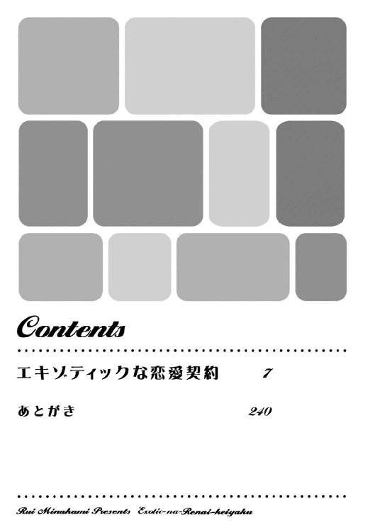
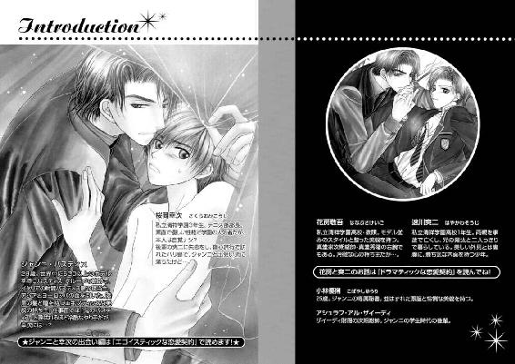
桜岡幸次
「......あっ、ジャンニ、ダメ......！」
ロッカールームの高い天井に、俺の声が響く。
「ダメ？ どうして？」
俺の身体を後ろからしっかりと抱きしめて、ジャンニが甘く囁く。
「......だ、だって......！」
彼の手が、ポロシャツ型の俺のテニスウエアの裾から滑り込んでくる。
「これからシャワーを浴びるというのに。服のままで入るつもり？」
「......ち、違うけど......！」
滑り込んだ彼の手が、俺の肌の上を辿る。
「それなら、おとなしくして」
「......あ、だって......こんなところで恥ずかしいよ......！」
ここは、彼が連れてきてくれた、軽井沢にある会員制のテニスクラブ。
『日曜日にテニスをしないか？』って言われて、朝早くに待ち合わせをした。
てっきり近所の貸しコートにでも行くのかと思ったら、いきなり彼のリムジンに乗せられ、軽井沢まで連れてこられてしまったんだ。
さすが会員制だけあって、コートは完璧に整備され、クラブハウスはまるでリゾートホテルみたいに豪華だった。
白いロッカーと観葉植物が並ぶこの部屋も、ロッカールームというよりは、まるでホテルのサンルームみたいだ。
天井に作られた大きな天窓のおかげで、陽が燦々と射し込んで、すごく明るい。
まだお昼前だけど、朝早くに待ち合わせて彼と一緒にたっぷりとテニスをしたから、身体は心地よく疲れている。だけど......。
「君の体力を少し残しておかなくては、なんて言って早めに切り上げるから、この後で遊びに行くためかと思ったのに......っ！」
「もちろんこういうことをするためだ。しかも、テニスをする君が色っぽくて煽られた」
彼が言って、俺の首筋に音を立ててキスをする。
「この後で、まだ体力が残っていれば、遊びに連れていってもあげるけれど」
言いながら、お腹から鳩尾、胸元を手のひらで辿られて、俺の呼吸が速くなってしまう。
「......そんな......こんなに明るいところで......あうっ！」
彼の指先が、乳首の先端をかすめる。オレは思わず声を上げ、慌てて自分の口を押さえる。
「テニスクラブは貸し切りにしたと言っただろう？ 誰に聞かれる心配もないよ」
彼が耳元でクスリと笑い、俺のテニスウエアの裾を摑んでまくりあげる。
「そんな、だけど昼間から......わっ！」
果物の皮でもくるんと剝くようにして上半身を裸にされ、俺は恥ずかしさに息をのむ。
部活の後で着替える時、ほかの部員たちの前で当然ウエアを脱ぐ。
シャワールームに向かう時には腰に軽くタオルを巻いただけの格好になり、シャワーを浴びる時にはもちろん素っ裸だ。
そんな時だって、一度も恥ずかしいと感じたことなんかなかった。
......だけど。
彼の前でだけ、俺は、いつもとはまったく別の生き物になってしまうみたいなんだ。
俺の名前は、桜岡幸次。
私立清祥学園の三年生で、テニス部の部長を務めてる。
そして彼の名前はジャンニ・バスティス。国籍はイタリア。
バスティス家っていう世界に名だたる大富豪の当主で、知らない者はいないであろう有名企業グループ、バスティス・グループの総帥でもある。
優秀でお金持ちで......だけどそれだけじゃなくて見た目もとんでもないハンサムだ。
俺と恋人同士になってから、彼は仕事の拠点をイタリアにあるバスティス・グループ本社から日本支社へと移した。だけど世界中を視察で飛び回っているエリートだからそうそう頻繁には会えない。だから、いつもデートはめちゃくちゃ濃厚になりがちだ。
......だからって、こんなところで......。
脱衣カゴにウエアを入れた彼が、俺を振り向く。
「......あ......」
見つめられるだけで、心臓がズキンと甘く疼く。
真っ白いテニスウエアに包まれた、がっしりとした肩。
驚くような美しいフォームで、力強いサーブを繰り出した、長い腕。
少しの緩みもなく、ギュッと引き締まったウエスト。
白いショートパンツから伸びるのは、美しい筋肉の浮いた長い脚。
まるでパリコレのキャットウォークを歩いていそうな、完璧なスタイルをしている。
そして、美しいのは、その体形だけじゃなくて。
男っぽくて、セクシーな唇。
高貴な感じに、スッと通った鼻梁。
意志の強そうな凜々しい黒い眉。
鑿で彫り込んだようなくっきりとした奥二重。
長い睫毛の下の、野性的に煌めく漆黒の瞳。
アジアの血を遠くひいた、エキゾティックな感じの美貌。
彼は本当に......見とれるような美しい男なんだ。
彼の視線が俺の顔に当てられ、そこから首筋に落ち......焦らすかのようにゆっくりと、俺の身体を滑り降りる。
その視線を感じるだけで、そこからジワリと肌が熱くなる気がする。
俺は緊張に耐えきれずに、両手で自分の身体を抱き締める。
彼から視線を外して、一歩後ずさる。
男なのに、男である彼に見られるのをこんなに恥ずかしがるなんて......感じてしまいそうなのを自分から告白しているみたいだ。
......だけど......。
「......じ、自分で、脱げるから......」
言った声が甘くかすれていたことが、ますます恥ずかしさを煽る。
「ほんの少し脱がせただけで、そんなに可愛い反応をするなんて」
彼がふいに手を伸ばす。そしてその美しくて大きな手で、俺の肩を包み込む。
「......あっ」
思わずピクリと身体を震わせてしまった俺に、
「そうやって、男の欲望を、どうしようもなくかきたてる」
見つめてくるのは、切ない飢えを含んだ、獰猛な瞳。
「本当にイケナイ子だ」
肩をキュッと握りしめられただけで、俺の唇から甘いため息が漏れてしまう。
「......あ......っ」
「君はとても綺麗で色っぽいのだから、少しは自覚して、もっと自制しなくてはいけないよ」
甘く、そしてどこかつらそうな声。
横隔膜を揺らしてくるような美声に、俺の身体が震えてしまう。
「......俺、全然綺麗じゃないし、ごつくて、全然色っぽくなんかないし......」
「君はとても美しいし、しなやかな筋肉のついた身体は、色っぽくて私の好みにぴったりだ」
彼の手が、いきなり俺の身体をクルンと方向転換させる。
「......えっ？」
「自分がどんなに綺麗か、ちゃんと見てごらん」
気が付かなかったけど、俺が背にしていた壁は一面鏡になっていて。
方向転換した俺は、上半身裸の自分と、いきなり向き合うことになってしまって。
「あっ」
思わず目をそらしそうな俺の顎に、彼の手がそっと触れてくる。
「目をそらすのは許さないよ？」
甘い声で囁いて、彼が身を屈め、俺の耳にそっとキスをする。
「......あ......っ」
目の前の俺が、甘ったるいため息をつき、その身体を、ヒクン、と大きく震わせる。
......ああ、耳にキスされただけで......。
自分の反応に気づいて、俺は思わず真っ赤になってしまう。
......なんて声、出しちゃってるんだ、俺？
逞しい彼の腕が、そっと俺の身体に回る。
「......う......」
彼の肌は、そのエキゾティックな容貌によく似合った美しい褐色。
その長い腕は、しなやかで、完璧な形の筋肉を浮き上がらせている。
がっしりとした骨格をうかがわせる、逞しい肩。
筋を浮き上がらせた、男っぽい首筋。
俺はもう少し目を上げて......俺の後ろにある彼の顔を見上げる。
彼は、本当に愛おしげな顔で、俺の髪にキスをする。
......ああ......。
俺の身体に、ズキン、と甘い痺れが走った。
「......愛してるよ、コウジ」
髪をゆらす彼の囁きは、とても真摯で、彼が本当にそう思ってくれてるのがしっかりと伝わってくる。
だけど......だからこそ......こんな疑問が俺の中に常にある。
......大富豪で、大きなホテル・グループの総帥で、しかもこんなに美しい男の人が......。
俺は、いつものように思ってしまう。
......どうして、俺みたいな平凡な高校生を愛してくれたんだろう......？
俺の髪にキスをしていた彼が、俺の視線に気づいたかのように、ふいに目を上げる。
彼のジャングルの闇のような漆黒の瞳に見つめられて、俺の心臓が、トクンと跳ね上がる。
「......愛している、コウジ」
切なげな声で囁いて、彼の手が俺の身体をキュッと抱きしめる。
「......あっ」
俺の頰がカアッと熱くなる。
「私ではなく、自分を見てごらん？」
言われて、俺は思わず自分の顔に視線を移してしまう。
自分の顔を見た俺は、思わず小さく息をのむ。
女の子ならともかく、男の俺が鏡を見るのなんて、朝、顔を洗う時くらい。
朝の俺はいつでもはれぼったい目をして、眠そうで、とても美しいなんて思えない。
まじまじと見たらコンプレックスを感じて朝から暗くなりそうだから......鏡を見るのなんて、いつでも本当にチラリとだけだ。
......だけど、今の俺は......？
陽に灼けた頰も、耳たぶも、恥ずかしげな桜色に染まっている。
目は潤んでいて、唇は少しエッチな感じに開いていて......。
「......あ......」
俺の心臓が、トクン、と高鳴る。
......なんだか、すごく色っぽい顔してる......。
「君は本当に綺麗で、本当に色っぽいよ」
......ああ、彼は、こんなふうに甘い呪文で......。
俺は自分の顔から視線がはずせなくなりながら、思う。
......俺を、こうやって魔法にかけてしまうんだ......。
彼の手が、ゆっくりと俺の脇腹を撫で上げる。
「......あ......っ」
ゾクリとした快感が、俺の身体をかけ上る。
「きちんと見て。自分がどんなふうに私の手に反応するか」
彼の囁きに、思わず鏡に映る自分に目をやった俺は......自分の身体の反応に気づいて恥ずかしさに真っ赤になる。
だって、ほんの少し触れられただけなのに、俺の乳首は......。
「......あ......もう、俺......っ」
「ダメだ。逃げることは許さないよ」
逃げようとした俺の腰を、彼の手が後ろからしっかりと抱き留める。
「いつもは薄い珊瑚色なのに、今はチェリーのように紅くなっているよ」
彼が囁きながら、俺の乳首の上を指先でくすぐる。
「......あっ......あっ......」
彼の愛撫に反応して、痺れるような快感が広がってくる。
......ああ、俺の身体、いつのまに、こんなにエッチになっちゃったんだろう......？
「気持ちがいい？ 先が、もうこんなに硬い」
そう。俺の乳首は、恥ずかしいほどに尖り、キュウッと硬く反応していて。
俺の反応を確かめるように、彼は人差し指と親指で俺の乳首を摘み上げる。
「......ああっ......！」
「いい声だ。こうされるのが好き？」
キュキュッと揉み込まれるようにされて、俺の身体がヒクヒクと震えてしまう。
「......あっ......やっ......やだ......っ」
「嫌？ それなら、どうして......」
彼の右手が、俺の肌を撫でながらそっと滑り下りる。
「......ここを、こんなふうにしているのかな？」
「......あっ！」
ショートパンツの下、いつのまにか大きく育ち始めていた俺の屹立。
彼の手に、硬さを確かめるようにキュッと握り込まれて、俺は思わず声を上げてしまう。 >>>♥
「......ああっ、ダメっ、そんなところ......んんっ」
「ダメ？ そんなに甘い声を上げてしまうくせに？」
彼は言って、そのまま焦らすようにゆっくりと手を上下させる。
「......あっ......あっ......んんっ！」
こんなところでこんなエッチなコトをしちゃダメだって解ってるのに、彼の愛撫が気持ちよすぎてもう何もかも解らなくなってくる。
俺の屹立と、彼の手のひらの間には、まだ、ショートパンツと下着がある。
ほんの薄い布地の隔たりなのに、なんだかものすごくもどかしくなってくる。
「......あっ......あっ......んん......お願い......っ」
俺は目を閉じ、後頭部を彼の逞しい胸にもたせかけながら、囁いてしまう。
「......イカせて......ジャンニ......ああっ」
「いい子だ。ちゃんと言えたご褒美だよ」
彼は言って、俺の身体からすべての衣類をはぎとった。
そして、その美しい身体を包む服をすべて脱ぎ捨て、俺の身体をその腕に抱き上げた。
「......あっ......何......？」
驚いて真っ赤になった俺の唇に、彼の唇が激しく重なってくる。
「......ん......んんっ！」
全裸で受ける、貪るようなキスに、気が遠くなりそう。
「......あう......ううん......っ」
彼の舌は俺の口腔を容赦なく愛撫し、力が抜けた俺の唇の端から、唾液がこぼれ落ちた。
俺の腕が勝手に上がり、彼の首にすがりついてしまう。
クチュ、という濡れた音を立てて、二人の唇が離れる。
二人の唇を結んだ細い銀色の糸が、明るい陽差しにキラリと光る。
「......ああ......ジャンニ......」
ジャンニは、チュ、と音を立てて俺の唇にもう一度キスをする。
それから、燃え上がりそうに熱い目で俺を見つめて、
「もう我慢できない。シャワールームで奪うよ。......いいね？」
欲望が滲んだ囁きに、身体がズキリと甘く痛んだ。
「......うん......俺も......我慢できない......」
真っ赤になって囁いた俺を、ジャンニは獲物を運ぶ獣のようにシャワールームに運んだんだ。
「......あっ、あっ、あっ！」
シャワーのあたたかな雨の中、逞しい屹立に後ろから貫かれ、揺すり上げられる。
俺はタイルの壁に縋るようにして、湧き上がる激しい射精感に必死で耐える。
「......ジャンニ、もうダメ、俺......あああっ！」
腰をしっかりと摑まれ、ひときわ強く揺すり上げられて、俺はイッてしまいそうになる。
「まだだ、コウジ。我慢しなさい」
彼の手が、限界まで反り返って揺れている俺の屹立を、キュッと握り込む。
「......ああっ、いや、あっ！」
寸前でせき止められた快感が、俺の身体の中で嵐のように荒れ狂う。
「......ああっ、ダメ......あう、んっ！」
身体が快感に痺れ、彼をくわえ込んだ俺の蕾が、震えながらキュウゥンッと激しく収縮する。
「ああ......すごい、コウジ」
いつも余裕綽々のジャンニが、一瞬息をのみ、少しだけ切羽詰まった声で言う。
「震えながら締めつけてくる。搾り取られそうだ」 >>>♥
後ろから抱き締められ、根元を握り込まれたまま、さらに激しい抽挿が始まる。
射精できないままに一番感じやすいところを容赦なく擦り上げられ、意識が飛びそうになる。
「......ああんっ......ああんっ！」
内壁で感じる、リアルな彼の逞しさに......また感じてしまう。
「......ああ、もう、許してぇっ！」
懇願するように、俺の内壁が、彼の欲望を絞り上げる。
「......くっ、コウジ」
彼がまた息をのみ、苦笑混じりの囁きで、
「本当にイケナイ子だ。いつのまに、そんなに上手になってしまったんだ？」
後ろから耳たぶを嚙まれて、身体がヒクヒクと震えてしまう。
「そんなふうにされたら、我慢ができなくなるよ」
「......我慢、しないで！......欲しいんだよぉっ！」
俺はもう何も解らなくなりながら叫んでしまう。
「欲しい？ 何が？」
「あなたの......うう......っ！」
恥ずかしさのあまり口ごもる俺を、彼がまたグイッと激しく突き上げてくる。
「......あああっ！」
「私の、何が欲しい？ 言えたら、あげるよ？」
囁きながら激しく貫かれて、俺の目の前が真っ白になる。
「......あなたの熱いのが、中に、欲しいんだよぉっ！」
思い切り叫んでしまった俺の屹立が、ふいに解放される。
「よく言えたね。いい子だ。ご褒美だよ」
「......あっ、ああっ！」
とどめを刺すように深く貫かれて、俺の先端から、白い蜜が、ドクッドクッと激しく飛んだ。
「......あうっ......くう、んん......っ！」
思い切り射精する快感が、俺の蕾をキュウッと硬く収縮させる。
ジャンニが小さく息をのみ、そして......。
「......愛してるよ、コウジ......」
俺の弱点を擦り上げるような、ひときわ激しい抽挿。
俺の蕾の奥深くに、彼の快楽が、ドクン！ と激しく撃ち込まれる。
「......ああ......ジャンニ......っ！」
たっぷりとした蜜に内壁が燃えそう。その熱が、また快感を呼ぶ。
さっき放ったばかりなのに、俺の屹立が、ヒク、と震えて勃ち上がってくる。
逞しいままの彼をくわえ込んだ蕾が、ジワジワと熱を上げる。
「......ああ......ああ......っ」
俺は壁に縋り、身体の甘い痺れに耐えきれずに、思わず震えてしまう。
「......ダメ......どうしよう、俺......俺......っ」
「どうした？ 言ってごらん？」
囁きながら肩をそっと嚙まれて、俺の身体が痺れてしまう。
「......俺の身体、めちゃくちゃいやらしくなっちゃったよ......」
「どうして？」
「......だって......」
俺の蕾が、彼の屹立の硬さを確かめるように、キュッと収縮する。
「......まだ、こんなに熱くて......っ」
俺の囁きに反応したかのように、彼の欲望が、グッと大きさを増す。
「......ああっ......ジャンニ......俺......っ」
彼が苦笑して、俺の身体を後ろから抱き締める。
「そんな可愛いことを言って煽られたら、許してあげられなくなる。このままで何度でもされてしまうよ？ いったん休んだ方がいいんじゃないか？」
言いながら焦らすようにゆっくりと引き抜かれていく。その拍子に蕾から何かが溢れた。
「......ああ、やぁっ......」
腿の内側を、あたたかな液体が、トロトロ、と滑り落ちる。
「......や、溢れちゃう......っ」
それがさっき注ぎ込まれた彼の蜜だと気づいて、俺の身体がカアッと熱くなる。
「ダメ......抜かないで......っ」
......ああ、ものすごくいやらしいことを言ってるのは解ってる......。
俺は彼にお尻を突き出した、イケナイ格好のままで懇願する。
......だけど、欲しくて、我慢できないよ......っ。
「全部欲しい......そのまま、もっと......っ！」
ゆっくり引き抜かれていた途中の彼の欲望が、ヒク、と動いてさらに大きさを増すのが解る。
「こら、そんな淫らなことを言われたら、手加減する余裕がまったくなくなるじゃないか」
セクシーな声が少し切羽詰まったようにかすれているのに気づいて、俺の胸が熱くなる。
「......手加減、しなくていいから......あああっ！」
言葉が終わるのを待たずに、彼の両手が俺の腰骨の上を捕まえる。
そのまま固定され、グッ、グッ、とリズミカルに抽挿されて、身体中に電流が走る。
「......あああっ、ジャンニぃっ！」
俺の蕾から溢れる蜜が、俺の内壁と、彼の屹立の間で、グチュグチュ、と濡れた音を立てる。
シャワールームに響くその淫らな音と、内壁で感じる彼の逞しさ、その熱さ。
速いピッチで与えられる快感に、俺はもう気が遠くなりそう。
「......ああっ、ああっ、イクっ、あああっ！」
とどめを刺すようにして深くえぐられて、目の前が真っ白になる。
「......ああ、くう、ううん......っ！」
俺の先端から、ビュッ、と快楽の蜜が溢れた。
「......くっ......ああ......っ！」
......ああ、さっきイッたばっかりなのに......。
俺は後ろの蕾で、逞しい彼を絞り上げてしまいながら、思う。
......どうしてこんなに気持ちいいの......？
「......あ、んん......あっ」
彼の手が、蜜を吐き出したばかりの俺の屹立を包み込む。
「......何？......やあっ......はふ......っ！」
まだ硬さのなくなっていない屹立を愛撫されて、身体がビクビクと震える。
そのまま強く抽挿されて......また、最後の一滴まで搾り出すようにして放つ。
「......コウジ、愛している......！」
俺の内壁の奥深い場所に、彼の熱い迸りを感じる。
俺は、愛されている幸福に包まれながら......彼の熱い欲望を内側ですべて受け止めたんだ。
＊
「今回、いい出来だったわよ、桜岡くん」
小テストを返却しながら、先生が嬉しそうに言う。
「特にこの英文和訳、完璧なうえにロマンまで感じるわ」
今は、英語の授業中。
名門で知られるこの学園では、どの授業もすごく難しいんだけど......帰国子女が多いため、特に英語に力を入れている。
家庭教師をつけられていたせいで日常英会話ならなんとかこなせた俺だったけど、レベルが違いすぎてなかなかついていけなかった。だけど、ジャンニという恋人ができてからは......。
「女主人公の人を愛する気持ちが、ひしひしと伝わってくるわ！」
先生は、俺の答案用紙を抱き締めて、うっとりと言う。
ハーレクインロマンスを読むのが大好きだというこの先生は、小テストの英文和訳に妙にロマンティックな文章を出すので有名だ。昔の文学小説だからレベルは高いんだけど、それだけじゃなくてこんな恥ずかしい文章を日本語に訳すのは別の意味で難しいと言われていて......。
「もしかして、桜岡くんも、恋をしてるんじゃないかしら？」
にこにこしながら答案用紙を返却されて、俺の頰がカアッと熱くなる。
「はい、満点！ 恋をするのはいいことよ、桜岡くん！」
......そんなこと、言わなくていいのに......！
......ああ、またみんなに冷やかされる......！
俺は覚悟をして、一呼吸置いてから振り返り......クラスのみんなの顔を見回して、ますます赤くなる。
みんな、何か言いたくてうずうずしてるって顔で。
......ああ、授業が終わるまでには、みんな忘れててくれ！
キーンコーンカーンコーン！
俺の願いも空しく、いきなり終業を告げるチャイムが鳴ってしまう。
「あら。今日の授業は終わりにします。......学級委員、これ、返却しておいて！」
先生は言って、答案の残りを学級委員に渡してさっさと教室を出て行ってしまう。
「そうだよな、桜岡、最近妙に色っぽいよなぁ」
「やっぱり恋してるのかなぁ」
クラスのやつらが、興味津々って顔で言う。俺は必死で動揺を隠しつつ、
「し、してないよ。何言ってるのかなぁ」
言って席に戻ろうとするけど......。
「なあ、桜岡」
いきなり腕を摑まれて、ぎくりとその場に固まる。
「本当に恋人いないのか？」
真面目な顔をして聞いてきたのは、このクラスの委員長の嵯峨野。スポーツ万能で、顔もよくて、いいやつではあるんだけど......神経質で、規律に厳しいのが難点だ。
名門であるこの学園。生徒手帳には『不純異性交遊禁止』の文字が燦然と輝いている。
生徒手帳にはもちろん書いてないけど、不純交遊の相手が同性だったらさらにやばいだろう。
俺は、ばれたら本当にやばいよ！ と青ざめながら、
「い、いないよ。みんなが勝手に言ってるだけだってば」
俺が必死でごまかすと、嵯峨野はなんだかものすごく真剣な顔になって、
「こんなところでなんなんだけど......それなら、俺と付き合わない？」
「はあっ？」
「なんだか、最近、桜岡を見てると、俺、ドキドキするんだよ」
「ええっ？」
「なんか、本当に色っぽくなったよな、桜岡」
真剣に顔を見つめられて、俺は失神しそうになる。
もちろん、嬉しいから、じゃなくて、ショックで、だ。
......なんてことだ......！
バリ島のホテルのプールサイドでゲイらしきサラリーマンに口説かれたりはした。だけど相手は外国人だったし、場所は海外だった。
だから、『外国のゲイって変わった趣味のヤツもいるんだ』って思うことができて。
......なのに！
俺は思わず後ずさりながら思う。
......日本で、しかも自分の通ってる学校で、なんで男に口説かれなきゃならないんだよ！
......それもこれも、俺に妙なことばっかり教え込む、ジャンニが悪いんだあっ！
＊
「......とか言って変な具合に迫られたりして」
俺は言って、ため息をつく。
「男と付き合ってると、そういうの、わかっちゃうもんなのかなあ」
放課後。ここは、テニス部の部室。
個人レッスンをつけるからって言って、一年生の速川爽二くんに残ってもらい、ほかの部員たちには先に帰ってもらった。
爽二くんはめちゃくちゃテニスが上手で......というか悪くすれば俺よりもずっと上手だ......もちろん個人レッスンなんて言うのはただの口実。
実は。
この爽二くんはこの学園の教頭、花房敬吾先生とラヴラヴの秘密の恋人同士。......ということはゲイの先輩でもある。
自分はゲイじゃないかな、と薄々感づいてはいたけど、まさか自分が受ける側、しかもジャンニみたいな熱烈な男の恋人になっちゃうなんて夢にも思ってなかった俺は、この爽二くんを、師匠として頼りにしてる。年下で後輩の彼を頼ってるなんて、ちょっとナサケナイけど。
「なるほど。最近はいろいろな男から迫られる、と」
俺の支離滅裂な話を、爽二くんは辛抱強く聞いてくれて。
しかも、しっかりとうなずいてくれて。
......ああ、やっぱり爽二くんって頼りになるかも。
爽二くんは、その綺麗な顔に、うっとりするような笑みを浮かべて見上げてくる。
「......あの。この先は、シャワーを浴びながら話しませんか？」
「あ、そうだった！」
俺は、自分たちがテニスを終えたままのウエア姿であることを思い出す。
「ごめん！ 練習で汗かいたから、シャワー浴びたかっただろ？ そしたら浴びてきて！」
「桜岡部長だって、シャワー、まだじゃないですか」
爽二くんは言って、笑いながら俺の手首をキュッと握る。
「一緒に入りませんか、と言っているんですけど」
きらきら煌めくうす茶色の瞳に、至近距離から見上げられて、俺はちょっとクラッとする。
......ああ、爽二くんって、本当に綺麗なんだよな。
俺はうなずきながら思う。
......彼に恋をしてるって誤解してた自分も、けっこう理解できるぞ。
そう。俺は、爽二くんに初めて会った時、心臓をズキュンと撃ち抜かれたような気がした。
だって、キラキラの瞳と、真っ白な肌、輝くような笑みは......本当に綺麗で、可愛くて。
そして、自分にはない彼の強さや凜々しさを知るにつれ、心がキュンとなるようになって。
その後、その気持ちが恋ではなくて『自分もこんなふうに綺麗で強く生まれたかった』っていう願望だったことを、ジャンニが教えてくれたんだけど......。
......でも、やっぱり憧れに足るだけの存在だよね、爽二くんって。
......その爽二くんと、二人きりでシャワー。
俺は一人で赤くなりながら、ウエアを脱ぎ捨てる。
部員たちとシャワーを浴びるのは毎日だし、ほかの部員の裸くらい見慣れてるけど......俺は爽二くんの身体だけは見たことがない。
だって、あまりにもおそれ多くて、なんだか直視できなくて。
だから、爽二くんがシャワーに入ってきたらいつも慌てて逃げてたりしてて。
......しかも、今日は二人きり......。
「お先に。すぐに来てくださいね」
後ろで爽二くんの声がして、彼がシャワールームに向かう裸足の足音がする。
俺はトランクスを脱ぎながら、一人で緊張する。
......俺、爽二くんの裸なんか見たら、もしかしたら発情しちゃうかも？
......いきなり襲いかかっちゃったらどうしよう、俺？
俺は思い、慌ててプルプルとかぶりを振る。
......そんなことしたら、爽二くんの熱々の恋人、花房教頭先生にコロサレちゃうぞっ！
......爽二くんの身体は、絶対に見ないようにする！
俺は拳を握りしめて心に誓い、それから腰にタオルを巻く。
ボディーソープとシャンプーを持ち、深呼吸してから、思い切ってシャワー室のドアを開く。
ドアからすぐのシャワーの下、爽二くんが向こうを向いてシャワーを浴びていた。
あまりにも近くにいた彼に驚いて、俺は誓いも忘れて、彼を直視してしまう。
湯気の向こう、キラキラとお湯を撥ね返す、輝くばかりに白い身体。
少年と青年の中間って感じの、繊細な骨格。
彼のすらりと伸びた手足は、最小限だけど強い瞬発力を秘めていそうなしなやかな筋肉に覆われている。
シャワーブースの小さいスイングドアが、彼の背中からお尻の部分をわずかに隠している。
......服を着てる時には本当に華奢に見えるんだけど......。
俺は思わずその身体に見とれてしまいながら思う。
......さすが、スポーツ万能の爽二くんらしい身体だ。
俺の場合、骨格がしっかりしてるから服を着てるとがっしりして見えるんだけど、脱いだらそんなに筋肉があるわけじゃなくて、胸とかお腹とか薄くて......けっこう情けない。
......こんなふうに繊細に鍛えられた完璧な筋肉は......なんだかすごくうらやましいな......。
「部長？ 早く浴びないと身体が冷えちゃいますよ？」
爽二くんの不思議そうな声に、思わず呆然と見とれてしまった俺は、ハッと我に返る。
「......あっ、う、うん！」
俺は慌てて歩き、爽二くんの隣のシャワーブースに滑り込む。
腰のタオルをほどいて裸になり、緊張しながらコックを捻り、いきなり降ってきた水に飛び上がり、焦りながら湯温を調整する。
......部活の後輩と一緒にシャワーを浴びるだけなのに、なんでこんなに緊張してるんだ、俺？
......やっぱり、爽二くんの身体がめちゃくちゃ綺麗だったからかな？
「部長？ すみません、ボディーソープ忘れちゃったんですけど」
隣のブースから聞こえた爽二くんの声に、俺はハッと我に返る。
「えっ？ あ、俺、持ってきたよ！ 今、そっちに渡すから......っ」
「でも、部長も使うでしょう？」
仕切の向こうから、爽二くんの笑みを含んだ声が聞こえる。
「そっちに行ってもいいですか？」
「ええええーっ？ ちょっと、待って、そんな......っ」
「いいですよね？ 男同士だし」
声がして、爽二くんのブースのスイングドアが開いた音。
そしていきなり俺のブースのスイングドアが外から開かれる。
「うわーっ！」
そこには、小さなタオルを腰に巻いただけの、裸の爽二くんが立っていた。
「失礼します」
俺はそこで、憧れの爽二くんの前で素っ裸で立っていることに気づいて青くなる。
「あぁっ！」
俺は慌ててタオルを取り、自分の腰にそれをぎゅうぎゅう巻き付ける。
「ご、ごめん、見苦しいもの見せちゃって！」
「全然見苦しくなんかありません」
微笑みながら言った爽二くんの視線が、俺の身体の上をゆっくりと往復する。
「シャワー浴びる時、部長、恥ずかしそうにすぐに逃げちゃうんですよね。だから、部長の身体って、マジマジと見るの初めてなんですけど......」
「うわ、爽二くん、見ないで！ 君みたいに綺麗な身体の子からそんなふうにマジマジと見られると、俺、どうしていいのか......っ！」
「僕なんかより、部長の身体の方がずっと綺麗で、しかもセクシーですよ」
「えっ？」
爽二くんは俺よりも小さくて、華奢なミルク色の身体をしていて、本当に綺麗。
そんなふうに美しい爽二くんの、あまりにも意外な言葉に、俺は思わず呆然としてしまう。
「そ、そんなわけないじゃないか」
俺は思わず悲しい気持ちで笑ってしまいながら、
「俺なんか、骨だけがっしりしてて、いまいちアンバランスで、背だって高いし......んっ」
言い募ろうとする俺の唇に、ふいに爽二くんの人差し指が触れてくる。
「それ以上は言わないで。そうやって自己暗示にかかってしまうんですよね、部長は？」
「......んん？」
「先週あった部内の練習試合だって、最初は絶好調だったのに、『俺は爽二くんには勝てなくて......』とか言い始めたら本当に調子が悪くなって、本当に僕に負けてしまって」
「......んん......っ」
爽二くんは俺の反論を指先で封じたまま、真摯な顔で俺を見上げてくる。
「マイナスの自己暗示です。あなたの悪い癖ですよ？」
「んん？」
「いつも『俺は綺麗じゃない』とか『俺は色っぽくない』とか言って、自己暗示にかかって。しかもそのせいで、ガードまで甘くなって」
爽二くんの指先が、俺の唇のラインをスッと撫でた。
「......ん......っ」
ジャンニとのキスにすっかり馴らされてしまった俺の唇。
彼が舌で唇を愛撫する時、よくこんなふうに軽い感触で唇のラインを辿るんだ。
ジャンニとのキスをいきなり思い出してしまった俺の身体が、ピク、と震えた。
「......う......っ」
「ほら。すぐそんなふうに可愛い反応をしてしまって」
爽二くんの指先が滑り、水滴に濡れている俺の頰をそっと撫でる。
「ジャンニさんのこと、思い出してます？」
「......えっ？」
「部長、あの人に、めちゃくちゃに可愛がられていそうですよね」
爽二くんの指がさらに滑り、濡れた感触で俺の耳の形をそっとなぞる。
「......あっ、ダメ......っ」
ジャンニはよく、唇で俺の耳の形を辿り、濃厚なキスをする。
それを思い出してしまった俺の身体が、ピク、と震えてしまう。
「やっぱりそうだ。耳に触っただけで、震えてしまって。......部長って、本当に可愛いな。抱き締めたくなるくらい」
爽二くんが笑いながら、俺の身体にそっと腕を回す。
「うわああっ、爽二くんっ！」
シャワーの雨の中で感じる、滑らかな感触の爽二くんの肌。
裸の肌に押しつけられる人の肌の感触に、ジャンニとの夜が甦る。
カアッと熱くなった身体に、爽二くんの手のひらが滑る。
「綺麗な肌。テニスのせいで小麦色で、だけど服に隠れた胸やお尻は、けっこう白くて」
爽二くんの指先が、いたずらをするように、俺の乳首を、チョン、とつつく。
「そのうえ、乳首は誰にも触れられたことがないみたいな、ヴァージンピンクだし」
「......あぁん......っ！」
身体に甘い電流が走り、俺の唇から恥ずかしいほど濡れた声が漏れた。
「すごく可愛い声。もし僕が攻だったら、今頃、無事ではすみませんよ？......っていうか」
爽二くんの指が、戯れるように俺の乳首の周りに円を描く。
「二人でイタズラしちゃいません？ あなたの初々しい反応を見てたら、なんだか、エッチな気持ちになってきちゃった」
「ちょ、ちょっと待って、爽二くん！ 君には花房教頭先生っていう熱愛中の恋人がいて、俺にはジャンニっていう恋人が......ああんっ！」
反論を封じ込めるように片手で腰を引き寄せられ、敏感な首筋をペロリと舐められる。
「......あ、やだ......ああ......っ」
ジャンニのせいでめちゃくちゃ快感に弱くなってる俺の身体が、ヒクヒクと震えてしまう。
......どうしよう、俺の身体......。
俺は、真っ赤になってしまいながら思う。
......めちゃくちゃいやらしくなっちゃってるじゃないか......っ！
「安心して。僕が提案しているのは浮気じゃなくて、ただの、お互いの手でするイタズラです」
爽二くんが背伸びをして、俺の耳に向かって囁いてくる。
グッと腰を引き寄せている腕は、華奢に見えるけど、鍛えてるだけあってけっこう力強い。
ジャンニが前に言ってた、爽二くんは君よりずっと攻の傾向が強い、って言葉が甦る。
「......ほら、運動部のシャワールームの定番じゃないですか？」
囁いてくる彼は......いつもの彼とは別人みたい。
恋人がいる俺ですら、なんだかクラッと来るほどセクシー。
しかも腰を引き寄せた手が、さりげなく敏感な脇腹のあたりを愛撫していて......。
「......んん......っ」
思わずよろめいて、俺は呼吸を乱しながらシャワーブースの壁によりかかる。
「......ああっ、ダメだよ......っ」
「部長って、本当に感じやすいんですね。ジャンニさんの前ではいつもそんなふうに色っぽいんですか？......ほら、ここ、もうこんなに勃ってますよ？」
濡れた指で、乳首の先端、触れるか触れないかのところを撫でられて、また震えてしまう。
......ああ、まるでジャンニの愛撫みたい......。
「......ああん......はふっ......」
思い出しただけで、身体に甘い電気が走る。
「......ダ......ダメだよ......爽二、くん......っ」
俺は必死で彼の手を摑むけど......彼の手は驚くほど華奢で、繊細で、乱暴にひきはがすことなんてとてもできない。
「......ああ、本当に可愛い。僕、本気で発情しちゃいそうです」
爽二くんがイタズラっぽい声で言って俺に抱きつき、首筋を猫みたいにペロンと舐め上げる。
......爽二くん、ジャンニが言ったとおり、限りなく攻に近い人なのかもっ！
......今は高校一年だから、まだまだ背も低くて身体も華奢だけど、これからめちゃくちゃな色男に化けるかもっ！
「部長、すごく可愛いし、色っぽいし、僕、観察して勉強してみたいんです」
俺の背中にあった彼の手が、俺の腰までゆっくりと滑り下りる。
「部長が感じちゃった時、どんなふうになるのか」
彼の手が腰に巻いたタオルにかかったのに気づいて、俺は真っ赤になる。
「......ダメっ......爽二くんっ......これ以上は、俺......っ！」
「秘密にしておけば、わかりませんよ。......タオルの下にも触っていいでしょう？」
爽二くんが俺の首筋に、唇を押し当てる。
そのまま甘く吸い上げるところが、ジャンニのキスに似ている。
「......ああ......ん......っ」
彼のキスを思い出して、思わず頭が霞みそうになった時......。
「それは私が許可しない」
いきなりシャワールームのドアが開き、凜とした低い声が響いた。
「......うっ？」
俺は爽二くんと抱き合った格好のままで顔を上げて、湯気の向こうに立つ人を確認し......。
「うわああっ！」
思わず叫んでしまう。
そこに立っていたのは、逞しい身体をダークスーツに包んだとんでもないハンサム。
彼は、この清祥学園の教頭、花房敬吾先生。
そして......この爽二くんの熱愛中の恋人だ。
彼の彫刻みたいに整った美貌は、教育者らしい無表情を保っている。
だけど彼の漆黒の瞳の中には、まるで野生の狼みたいなものすごく獰猛な光が揺れていて。
......や、やばすぎるっ！ 爽二くんを誘惑したって思われて、殴られるかも......っ！
......だって、俺と華奢な爽二くんじゃ、どう見たって俺の方が攻だし......っ！
俺は爽二くんと抱き合った格好のままで、花房教頭を見上げ、思わず震えてしまう。
......こんな外国人並みに逞しい人に本気で殴られたら、俺、本気で死ぬかも......っ！
「桜岡部長、これで自分がどんなに感じやすいか、しかも無防備か、わかりましたか？」
爽二くんはちょっと先生っぽい、真面目な顔になって言う。
「迫ってくるヤツがいてフシギ、とか言ってる場合じゃないんです。ともかく攻の香りのするヤツには極力近づかない。僕からシャワーに誘われた時には断るべきだったんです」
爽二くんが言って手を下に滑らせ、タオルごと俺のお尻を両手で包み込む。
「僕が悪いヤツだったら、もっとすごいことされてましたよ？」
両方の手で左右のお尻を握り込まれ、そのままキュッと押し広げられる。
「......あぁっ、爽二くん、そんなこと......っ！」
「......爽二、悪い子だ」
花房教頭が、あきれたようなため息をつきながら言う。
「可哀想に。彼は怯えているじゃないか」
「可愛いでしょう？ 小鳥みたいに震えちゃってる。たまらないなぁ」
爽二くんが言って、もう一度俺の首筋にチュッとキスをする。
「僕が攻だったら、本気で放っておかないですよ？」
「だが、君は攻ではないだろう。......まったく」 >>>♥
花房教頭はもう一度ため息をついて、俺を見つめる。
「すまなかった、桜岡くん。爽二は少し拗ねているんだ」
「......え......っ？」
「ここのところ学園の仕事が忙しくて、構ってやれていなかったんだよ」
「あなたなんか、関係ない。まるで待ってたような言い方しないでくれる？」
いつもの穏やかな彼とは別人みたいな、なんだかすごく怒った口調。
「僕は、桜岡部長とエッチなコトをしてみたかっただけだ。邪魔が入って不愉快だよ」
「じゃあ、どうして部室まで迎えに来いなんてメールをよこした？ しかもわざわざシャワールームにいることが解るように、彼に声を上げさせたりして」
花房教頭の言葉に、爽二くんがピクンと肩を震わせる。
「そこから出ておいで、爽二」
花房教頭が、爽二くんに向かって手を差し出す。
あきれたような声で言いながらも、彼の黒い瞳の中には獰猛でセクシーな炎が燃えている。
「この私を煽るようなことをして。今夜はたっぷりとお仕置きだよ」
爽二くんはほかの誰にも見せないような挑むような目で花房教頭を睨み、それから、苛ついたようなため息をつく。
「わかったよ。だけど、あなたに桜岡部長の色っぽい裸を見せたくない。すぐに行くから、シャワールームから出ててくれる？」
花房教頭はうなずいて踵を返し、シャワールームから出ていく。
ドアが閉まった途端、爽二くんはクスリと笑う。
彼の意外な反応に、俺は驚いてしまう。
見上げてきた爽二くんは、さっきまでの怒ったような彼とは別人みたいなご機嫌な顔で微笑んでいた。彼は外に聞こえないように、ひそめた声で、
「......大成功。ご協力、ありがとうございました」
「......へっ？」
「......煽って、それから拗ねたフリをするのが一番効くんですよ、あの人には」
「......はい？」
「......ラヴラヴの夜になりそう。楽しみ」
爽二くんは、クス、と可愛い顔で笑い、それからいきなり俺に抱きついてくる。
「うわ、何？ あっ！」
爽二くんが、俺の胸元にキスをして、キュウッと強く吸い上げたんだ。
「ああ、そんなことをしたら......っ」
「......お礼です。ジャンニさんに、楽しいお仕置きをしてもらってくださいね」
爽二くんは片目をつぶり、それから平然とした顔でシャワーブースから出ていく。
スタスタとシャワールームを横切って歩き、ドアの前で振り返って、
「それじゃ、お先に失礼しまーす」
いかにも爽やかなスポーツ部員って顔で笑い、シャワールームを出ていく。俺は、自分の身体を恐る恐る見下ろし......胸元に、くっきりとキスマークがあることに真っ青になる。
......うわあん、こんなにくっきりつけられたら、一週間は消えないぞ！
俺はキスマークを見下ろして心の中で叫ぶ。
......爽二くん、あんな可愛い顔して、まるで小悪魔だっ！
そのキスマークのおかげで、ジャンニにうんとお仕置きされてしまったのは言うまでもない。
......まあ、嫌じゃなかったのも、事実なんだけど、ね......。
ジャンニ・バスティス
「社長。午後からの予定ですが......社長？」
秘書のいぶかしげな声に、幸次のことを考えていた私はふと我に返る。
「なんだ？」
相手はその怜悧に整った顔に、かすかにあきれたような表情をよぎらせる。
「あなたが私生活でどんなことをなさろうと私にはまったく関係はありませんが......」
彼は手を上げ、その白い指先で、クールな印象の縁無し眼鏡に触れ、キュッと押し上げる。
「......仕事だけは、きちんとこなしていただきたいです。先週も......」
最近解ったのだが、これは、表情をほとんど変えない彼の、怒っている時に出る癖らしい。
「確かに私は、先週、君の監視の目をすり抜けて会議をすっぽかし、コウジとテニスをしに行った」
私が言うと、彼は、眉毛をキュッと上げて、謝って当然ですよ、という顔をする。
「ただ、先週の会議は私が出なくても進む議題だと思った。それが証拠に、きちんとプロジェクトは成功し、こうやって無事に書類が回ってきたじゃないか」
私は、彼がデスクに積み上げたばかりの書類の山から、一冊のファイルを出してみせる。
「けっこういい解決策が出たじゃないか。逆に、私がいないことで取締役たちが危機感を持ったのではないか？ 自分たちでいい解決策を出さなければ社長の怒りを買う、とね」
「それは認めます」
彼は言い、それからきっぱりした口調で、
「しかし、私に無断で会議をサボったことのいいわけにはなりません」
「わかった、わかった」
私は両手を上げて、降参、の意思を示す。
「君に迷惑をかけたことを謝る。そしてこれからはサボる時には君の許可を得る。......どう？」
「できればサボらずにお願いできると嬉しいのですが？」
「コウジから急なデートの誘いがあった時には、約束はできない。日本の学生である彼と、世界を飛び回っている私は、なかなか会うことができないんだ。......新婚だというのに」
私がため息をついてみせると、小林は、仕方のない人だ、という顔で、
「わかりました。では、デート以外の用件ではサボらずに」
と言い、レンズの向こうの目を光らせる。
「そのかわり、デート以外の時には精一杯働いていただきます。それが会社のためですから」
「オーケーだ。熱心な秘書を持って、私は幸せだよ」
彼は、自分が優秀なのは当然だ、とでも言いたげな顔で、チラリと眉を上げる。
彼の名前は、小林優悧。二十五歳。
雪のように白い肌、そこに落ちた何かの実のような赤い唇。
長い睫毛と、怜悧に光る黒い瞳。
彼の並外れた美貌を、ますます人形じみて見せている、クールな縁無し眼鏡。
日本のトップレベルの大学を卒業し、トップの成績で我が社に入社し、一番のエリートが集まる国際事業部で活躍していたようだが......なぜか希望を出して秘書室に異動になった。
そして本拠地を日本に移してからの、私の、専属秘書になっている。
彼ほどの頭脳を持つ男が、どうして秘書室への異動願いを出したのかは謎だが......まあ、人にはいろいろ事情があるのだろう。
社長である私にとっては、彼のような優秀な秘書がいるのは好都合。もう少し人間的になってくれると少しは仕事が楽かと思うのだが......それは贅沢というものだろう。
その時、私の胸ポケットのプライベート用の電話が、着信音を奏でた。
私は液晶画面で相手の名前を確認し、急いで電話に出る。
『もしもし、ジャンニ？』
電話から聞こえてきたのは、愛しい幸次の声だった。
「そうだよ、コウジ。......どうした？」
『仕事中にごめんなさい。ええと、忙しかったら切っちゃっていいよ？』
「いや、まったく忙しくない。暇で暇でどうしようかと思っていたところだ」
私が言うと、分厚いスケジュール帳を捲っていた小林が、縁無し眼鏡の向こうから怒ったように目をキラリと光らせる。
『あのね。お昼前の授業が休講になったんだ。だからもし時間があったら、一緒にお昼ごはんをどうかなって思って......』
私は腕を上げて時計を見、彼の授業の時間割を思い出す。
「授業が休講になったばかりにしては遅い時間だね。もしかして学校を抜けだしてこの近くに来ている？」
私が聞くと、幸次は恥ずかしそうな声で、
『ご、ごめん。本当は会社のすぐ前にいるんだ。だけど忙しかったら全然いいから......』
「忙しくないと言っただろう？......すぐにおいで」
私が甘く囁いてやると、幸次は恥ずかしそうに息をのむ。
『あ、でも、ランチ・ミーティングとかない？ 大丈夫？』
「ああ......ランチ・ミーティングはあったのだが、先方の都合でキャンセルになったんだよ」
私が言うと、小林は責めるように眉をつり上げる。
私が頼む、という意味で片手を上げてみせると、小林はあきれたため息をつきながらも渋々うなずいてくれる。
もちろん、ミーティングの予定はあり、キャンセルになどされていない。これから小林がキャンセルの電話をかけるのだ。
「ランチの予定がなくなってしまって、困っていたんだ。もしよかったら、近くで何か買ってきてくれないか？」
幸次が遠慮せずに入ってこられるように言うと、幸次は嬉しそうに、
『あ、それなら、この近くの公園に、チリドッグの屋台があるんだ！ それ、買っていってあげるよ！ けっこう美味しそうだったよ？』
「チリドッグ？ それは美味しそうだ。頼める？」
『うん！ そしたら、十分後くらいに行くから！』
「いつものように、下についたら受付から電話をしてくれ。......また後で」
私は電話越しにキスを送り、彼の気が変わらないうちに電話を切る。
「ランチ・ミーティングは社長の体調不良のためにキャンセル。ランチは社長室でチリドッグ。私は秘書室の全員を連れて外でランチをとって参ります。......よろしいですか？」
無感情に言われた小林の言葉に、私は深くうなずいてみせる。
「君は本当に優秀な秘書だよ、ミスター・コバヤシ。私はコウジとの愛の時間を何よりも大切にしたいんだ。協力してくれてありがとう」
小林はキュッと眉をつり上げ、
「できれば、昼間から社内でいやらしい行為には及ばないようにお願いしたいのですが？」
「いやらしい？ もちろんそんなことはしない。愛を確かめ合うだけだ。それを、いやらしいなどとは、少しも思わないよ」
小林は少し驚いたように微かに目を見開き、それから目の錯覚か、と思うくらいのほんの微かな笑みをその唇の端に浮かべる。
「なるほど。社長らしいご回答です」
それからまたいつもの無表情に戻って、
「十四時からのプロジェクト会議を欠席することは無理かと思われます。その前のスケジュールなら、なんとかなりますが」
「わかった。どうせコウジは午後の授業が始まるまでには学校に帰ってしまうだろうし」
「その代わり、本日はたっぷりと残業していただきますよ」
「なるほど、君は本当に優秀な秘書だ」
私が言った時、デスクの電話が鳴った。私が電話を取ると、女性秘書の声が、
「社長。幸次さんがいらしていると、受付から電話が入っておりますが」
「ありがとう。すぐに社長室に通すように伝えてくれ。......それから、今日のランチは私がご馳走する。私は行けないが、コバヤシに軍資金を渡すのでゆっくり楽しんできてくれ」
「まあっ、本当ですか？ 嬉しいわ！......みんな、ちょっと、ちょっと......！」
女性秘書たちのはしゃぐ声を受話器の向こうに聞きながら、私は受話器を置く。
眉をキュッと上げてみせる小林に、私は財布から出した一万円札を数枚渡す。
「これで、秘書室の親睦を図ってきてくれ」
小林はうなずきながらそれを受け取って、丁寧な仕草で内ポケットにしまう。
「ごちそうさまです」
「いや、君たちにはいつも世話になっているから」
小林は、本当です、という顔をしてみせてから、何も言わずに頭を下げて踵を返す。
彼がドアノブに手をかけようとした時、社長室のドアが外から叩かれた。女性秘書の声が、
「社長？ 幸次さんがおいでになりましたが」
「通してやってくれ」
「......だそうですよ。どうぞ？」
女性秘書の声がして、ドアが外から開く。
そこに立っていたのは、いかにもお坊ちゃま学校らしいスタイリッシュな制服に身を包んだ幸次の姿だった。
どんな服を着ていても彼はとても美しくて可愛らしいが、この制服を着ている時の幸次は、禁欲的な雰囲気も相まって、妙に色っぽい。
「ええと、チリドッグ、買ってきた、よ......？」
幸次は、両手に紙袋を持っていた。
「この格好で会社に入るの、けっこう恥ずかしかったけど」
幸次が言うと、女性秘書が小さく吹き出す。真っ赤になってしまった幸次を見て、
「あら、ごめんなさい。可愛いから笑っただけなのよ？ それに......」
彼女は楽しそうに笑いながら、幸次の肩を気楽な調子で、ポン、と叩く。
「社長がチリドッグにかぶりつくところ、ちょっと見てみたかったわって思って」
「児島さん」
小林が言って、さりげなく幸次と彼女の間に割り込む。
「ランチの時間は店が混みますので、すぐに出発します」
「あら、そうですわね！ みんなにもすぐ支度をするように言わなくちゃ！」
彼女は慌てて言って、社長室から駆け出していく。幸次は彼女の後ろ姿を目で追って、
「この会社の秘書室って......本当に美人ばっかりだよね」
驚いたように言う。小林が、
「幸次さん。それくらいにしておかないと、後が大変ですよ」
「え？」
「彼女があなたに触れたことで、社長の我慢の限界も近いですから」
「へっ？」
小林は、その目の奥に不思議と優しい表情を浮かべて、幸次を見下ろしてくる。
「それでは私はこれで。隣の秘書室には誰もいなくなります。ごゆっくりどうぞ」
言って、そのまま秘書室を出て行く。
幸次は彼の言葉の意味を考えるように見送り......それからハッとして私を振り返る。
「もしかして、秘書のみなさんに、どこかに行っているように、とか言わなかった？」
「いや。彼らが勝手に出かけて行くだけだよ」
私は言うが、幸次は信じていない顔で私を見上げてくる。
「ええと......あなたが『日本にいる時にはいつでもここに来ていい』って言ってくれてるから来てるけど......もし、迷惑だったら、すぐに言ってね？」
彼は心配そうに顔を曇らせて言う。
「ただでさえ、こんな大企業の社長室に押しかけるなんて、気が引けるんだから」
「社長の私が許可しているんだ。君が遠慮をすることはまったくない。それに君は、表向きは、ホテルに関する若い年代の意見を聞くための、私のアドバイザーということになっているし」
「そうは聞いてるけど......だけど......」
「そのうえ、君の伯父さんが、パシフィック・トラベルの桜岡社長であることはみんなよく知っているんだ。桜岡社長にはいつもお世話になっている。彼の甥御さんが遊びに来てくれているのに、それに文句を言う社員はどこにもいないよ」
「いや、伯父さんの方こそ、いつもあなたにお世話になってるって言いっぱなしだよ。だって伯父さんの会社は、ここに比べたら本当にすっごく小さいし......」
幸次はまだ心配そうな顔で言い、それから紙袋からチリドッグを出して私に差し出す。
「まあ、いいか。ランチにしようよ。冷めたら美味しくなくなっちゃう」
「いくらだった？ あとでお金を返すから......」
「これは俺のおごりだよ」
幸次は、まだ何かが引っかかっているかのような顔で笑う。
「いつもたくさんお金を使わせてて......俺、ちょっと心苦しいところもあるんだ。だから、これくらいはおごらせてくれる？」
彼は、私が莫大な財産を持っていることはもちろん知っているが、金銭的な面で自分から私に頼ろうとしたことは一度もない。そのことも、私にはとても好ましい。
......彼は、これからどんどん素晴らしい青年に育っていくのだろうな。
私は、彼を眩しい気持ちで見つめながら思う。
「ありがとう。それなら、遠慮なくごちそうしてもらう」
私が言うと、彼は嬉しそうに微笑んで、ローテーブルの上に買ってきた品物を広げる。
「うん、オニオンリングとメキシカンサラダも買ってきた。これもどうぞ」
急ごしらえのピクニックのような昼食だが、彼と一緒だと思うと不思議と心が弾む。
「いただきます」
私はチリドッグを持ち上げ、包装紙をやぶいてそれにかぶりつく。
チリビーンズとソーセージ、そしてハラペーニョの辛さが、なかなか絶妙だ。
全粒粉を使っているらしいザラリとした感触のパンもとてもよく合っている。
「......とても美味しいな」
私が呟くと、彼はホッとしたように息をつく。
「よかった。あなたみたいなお金持ちの口に合うか、心配だったんだよね」
「学生時代、私はスイスにある全寮制の学校に放り込まれていた。だからこういうファースト・フードを初めて食べたのは大人になってからだし、そのためか、妙に憧れがあるんだ」
「そうなんだ。チェックしといて、よかった」
「え？」
彼はなんとなく恥ずかしそうな顔になって、
「本当は、テレビでやってたんだ。今話題の美味しいチリドッグを出す屋台だって。あなたの会社のすぐ近くだなって思って、前からチェックしてたんだ」
彼は言い、大きな口を開けてボリュームのあるチリドッグにかぶりつく。
「......んっ」
無防備にかぶりついたために、赤いチリソースが溢れて彼の唇を濡らす。
「......んんーっ」
チリドッグが大きすぎるために、上手に嚙み切れないらしい。チリドッグをくわえたままで私を見上げ、恥ずかしそうに頰を赤くするところが......妙に色っぽく見える。
彼は思い切りチリドッグを嚙み切り、満足そうな顔で咀嚼する。
それから子供のような顔でにっこりと微笑み、
「うん、美味しい。当たりでよかった」
私は手を伸ばし、彼の口の脇についたままのチリソースを拭ってやる。
「ソースがついている。子供みたいだよ」
その指を舐めると、彼はさらにカアッと赤くなる。
彼は恥ずかしそうに紙ナフキンで口の端を拭い、それからふいに真面目な声になって、
「そういえば......あなたの秘書の小林さんって、すごく綺麗な人だよね」
「......え......？」
「あなたと彼が並んでるところ、ちょっと見とれちゃった。お似合いだなって」
さりげなさを装って言われた彼の言葉に、私は思わず笑ってしまう。
「どこからそういう発想が出てくるのかな？ コバヤシはたしかに優秀な秘書だが......」
言いかけて、私は思わず言葉を切る。
私を見上げてきた幸次の顔が、意外なほど真剣だったからだ。
幸次は何かを言いたげに唇を動かし......それから少し悲しそうな顔で私から目をそらす。
「何か言いたいことがあるようだね、コウジ？」
「え？ いや、別に......あっ」
彼の頰に手を当て、キュッと力を入れてこちらを向かせる。
「『ジャンニは、彼に心変わりしていないだろうか？』もしかして、そう言いたい？」
彼は驚いたように目を見開き、そして悲しそうな顔になって小さくうなずく。
「小林さんはまるでモデルさんみたいに綺麗だし、身体はすらっとして優雅だし。なによりも小林さんならいつでもあなたのそばにいるだろ？ だから......」
私は指先で彼の唇に触れ、彼の言葉を止めさせる。
「君だけを愛している。そう言っただろう？」
私は心を込めて囁くが、自分にまったく自信のない彼は戸惑うような顔をするばかりだ。
......私がどんなに愛しているか、きちんと解らせなくてはいけない。
......言葉だけではなく、行動で。
私は思い、前から考えていたことを実行に移す決心をする。
「そういえば、来週から一週間、連休があると言っていたね？」
幸次は驚いたように目を見開き、それから少しあきらめたような顔で目をそらす。
「うん。だけど、あなたは忙しいよね？ 俺のことは、別に気にしなくていいから。一人で過ごしたって楽しいし」
健気に言って、少し悲しげに笑う彼の様子が、私の心を甘く痛ませる。
......このお姫様は、こうやっていつも我慢をして、自分の中にため込んでしまうのだろう。
彼は、自分ではとてもしっかりしているつもりなのだろうが、本当はとても繊細で、そしてとても甘えたがりのお姫様だ。
......繰り返し繰り返し愛を囁いて、彼の心を溶かし、そして蕩けるほどに甘やかしてやらなくてはいけない。
......セックスの最中以外は、彼は処女のように恥ずかしがり屋で、しかもとても遠慮深い。その彼を、どうやって警戒させずに甘やかすかが、問題なのだが。
「ちょうど休みが取れたので、君と小旅行に出たい。私のために予定を空けてくれる？」
彼は驚いたように目を見開き......それからとても嬉しそうに、花のように微笑んだ。
......ああ、彼と二人きりのバカンスが、私はこんなに待ち遠しい。
桜岡幸次
『旅行といってもたいして遠くにはいかない。パスポートだけ持ってくれば大丈夫だよ』
ジャンニの言葉を思い出しながら、俺は辺りを見回す。
ここは、成田空港の第一ターミナル。
......彼の言葉通り、本当に軽装で来ちゃった。
俺の手には、いつも使ってる小さめのスポーツバッグ。
二日分の着替えと、今月分の小遣いの残りの二万二千円、それにパスポート。バッグに入ってるのはそれだけだ。
......たいして遠くじゃないってことは、香港とか、台湾とか、ソウルとかだよね。
旅行ってものに全然慣れてない俺にとっては、それでも海外には変わりない。
......あんなに簡単に言ってくれちゃって。
俺は妙に緊張している自分が、すごく子供っぽく感じられて一人で赤くなる。
......普通の庶民の俺にとっては、飛行機に乗るだけだって、たいへんなことなんだからな！
俺はキョロキョロしながら、待ち合わせ場所になっているＶＩＰラウンジを探す。
「......ええと......どこだ、ＶＩＰラウンジって？」
呟いた時、後ろから聞き覚えのある声が俺を呼ぶのが聞こえた。
「幸次さん。そこでしたか」
慌てて振り向くと、そこに立っていたのは、小林さんだった。
......小林さん......？
俺は、目の前に現れた意外な人物に、驚いてしまう。
......どうしてここに......？
「社長から、迷っているかもしれないので捜しに行ってくれないか、と言われてきました。すぐに見つかってよかったです」
「......え......？」
俺は彼の言葉に呆然とする。
「社長はもう到着なさってすでにお待ちです。どうぞこちらへ」
「あ、はい」
小林さんに案内されて歩きながら、俺はまだ呆然としていた。
......これって、どういうことだろう？
俺は、ジャンニが、二人だけのバカンスに誘ってくれたんだと思ってた。
だから当然、空港に現れるのは彼一人だろうって思ってたんだ。
......なのに......？
「邪魔者がいて申し訳ありません。お二人だけで行かせて差し上げたかったのですが」
小林さんが、まるで俺の心を読んだかのようなタイミングで言う。俺はすごくアセッて、
「いや、もちろん、邪魔なんかじゃないけど......ちょっと不思議だなって......」
「社長は、あなたのために一週間の休暇をお取りになりました」
小林さんは俺と並んで歩きながら、無感情な声で言う。
「ですが、どうしてもずらせない緊急の用件がいくつかあります。そのために私もいちおう同行しますが......もちろん飛行機の席は離れた場所に取りますし、ホテルでも極力あなたの前には姿を現さないようにします。ですから、あなたは、私の存在は忘れてくださっていて結構ですよ」
......って言われても......。
俺はなんだかものすごく消沈してしまいながら、
「......やっぱり、一週間も一緒にいるのは、無理なことだったのかな？」
「バスティス・グループの総帥であるあの方が、それだけの長い休みを取ることが、どんなに大変なことか、想像できますか？」
「......あ......」
彼の言葉に、身体からサアッと血の気が引いていく。
「......やっぱり俺、この旅行、断るべきだったんだね......？」
俺の唇から、今にも死んでしまいそうなかすれた声が漏れた。
「......そうだよね、ただの学生の俺と、大企業の総帥である彼が、同じようにノンビリしていていいわけがないんだ。ごめんなさい、俺、やっぱり行かないって彼に......」
「最後まで話を聞いてください。私は、そんなことを言おうとしているのではありません」
小林さんにピシリと言われて、俺は言葉を切る。
「もともと優秀な方ではありますが......あなたと旅行の約束をなさってからの社長は、まさに人が変わったように働きました。そしてこの一週間の休みをもぎとったのです。ですから」
彼は横を歩く俺を見下ろして、ほんの少しだけ唇の端に笑みを浮かべてくれる。
「旅行をお楽しみになってください。そして働きづめの社長を、少しでもリフレッシュさせてあげてください」
「......え......？」
俺は、初めて見る彼の笑みと、初めて聞くその優しい口調に驚いてしまう。
......綺麗だけどいつも無表情で、ちょっと怖い人かと思ってたけど......？
「秘書である私が言うことではありませんが、社長はともかく働き過ぎです。あなたという方がいるので、仕事の予定をいくつかキャンセルしたりなさいますが......」
彼はため息をついて、
「それくらいでちょうどいいんでしょうね。あんなに集中なさる方が、あんなに強引にたくさんのスケジュールを入れている。すべてをこなしていては、身体を壊しかねません」
「......ほ、本当？ そんなに過密スケジュールなの？」
俺が心配になって聞くと、彼はうなずいて、
「私が調整しようとしても、仕事熱心で禁欲的な社長は、自分の仕事を減らすことを許しません。唯一の例外が、あなたとのデートなんですよ」
「そう......なの？」
「ええ。しかも、『鬼のバスティス』と呼ばれていた社長が、最近はとても人間的な面を見せるようになったように思います。あなたという存在を、私は個人的にとても歓迎しています」
「......本当......？」
「ええ。......私のことはいないものと思って、バカンスを楽しんでください」
「うう......ん。でも小林さんに悪いみたい。俺たちの旅行に付き合わされてしまって。しかもあなたの場合は仕事の出張ってことになるんだよね」
小林さんは、平然とした顔で肩をすくめる。
「ご心配なく。仕事が終わった後には、現地で休暇を取ることにしていますから。飛行機代もホテル代もタダの旅行と思えば、少しくらいは働かされても文句は言えませんよ」
彼が言った時、向こうからジャンニが走ってくるのが見えた。
「コウジ！」
彼は俺を見つけて嬉しそうに微笑みを浮かべる。
「よかった、迷子にならなくて！」
走って俺を捜してくれていたのか、速い呼吸。少し乱れた髪が、なんだかすごくセクシー。
俺は、ピシリとダークスーツを着こなした彼の美男子ぶりに、思わず見とれてしまう。
そして、旅行者らしき女性たちも、俺と同じようにうっとりと彼に見とれてることに気づく。
......ああ、彼があんまりハンサムだから、ほかの人も注目してる！
......これからの一週間、彼は俺だけの物なんだからな！
俺は心の中で権利を主張してしまい......それから一人で赤くなる。
......俺って、独占欲、すごく強いのかも......。
＊
「小旅行って言ったのに！」
俺は、あきれた気持ちで叫ぶ。
「ここ、アフリカ大陸じゃないか！」
俺たちが乗った飛行機が着いたのは、なんと、モロッコという国だった。
空港からリムジンで走り......俺たちが到着したのは、美しいオアシスの街だった。
飛行機の中で半袖のＴシャツと膝までのカーゴパンツに着替えておいたから助かったけど......気温は三十度を超えてるだろう。張り切ってスーツを着たままだったら地獄だったはず。
ジャンニは、ヴァニラアイスクリームみたいな色の麻のスーツ。涼しげな薄いグリーンのネクタイに、白の綿シャツ。そして薄いベージュの革靴。
きちんとした格好なのに、涼しげで、粋で、見とれるほどいい男なところが憎らしい。
ちょっと恥ずかしいけど、俺はそれまでモロッコがどこにある国なのか、はっきりとイメージすることができなかった。
「映画の『カサブランカ』に出てきた街がある国だったかな？ ってことくらいはなんとなくわかるけど......世界地図でどこにあるか示せって言われたらわからないなあ」
「モロッコの位置は、ここだよ」
リムジンの中に備え付けられていた地図を取り、ジャンニがそれを広げて説明してくれる。
「モロッコは、アフリカ大陸の最上部、その左隅にある。北には地中海、西には大西洋。アルジェリアや西サハラ、モーリタニアに囲まれた国だよ」
「へ～、こんなところだったんだ？」
「カサブランカは、大西洋沿いのここ。今いるのはここ。マラケッシュだ」
ジャンニの長い指が、カサブランカから南に下がった内陸部を示す。
「アラビア語で、モロッコのことを『El-Maghreb』と言う。日の没する国という意味だ」
「日の没する？」
「アラブ圏の西の果てなんだ。国民のほとんどがイスラム教徒で、アフリカ大陸にはあるが文化的には完全にイスラム世界だな」
「ううん、たしかに建物とか、歩いてる人とか、そういうイメージだよね」
俺はリムジンの窓から外を見ながら言う。
屋外市場らしい場所に集まっているのは、綿シャツの裾を長くしたような民族衣装（ジュラバというらしい）と、肩下までの布（カフィーヤというらしい）を被ったいかにも砂漠の民、という感じの人々。
彼らが引くのは、房飾りのつけられた大きなラクダや、山のように荷を積んだロバたち。
市場に面した広場には、大道芸をしている芸人たちや、食べ物を売る屋台が見える。
「なんだか面白そう。探検したいな」
「ホテルに行ったら、落ち着いてしまいそうだ。その前に、街を探検してみようか？」
俺は、なんだか自分まで子供に戻ったような気分でウキウキしてくる。
「うん！」
ジャンニは運転手さんに車を停めさせ、俺たちは財布だけを持って身軽に車を降りた。
「......すごいなあ......ここがマラケッシュの街？」
リムジンから降りた俺は、びっくりして辺りを見回す。
目の前には、テレビなんかで見て想像していた、イスラム世界そのものって感じの光景が広がっていたからだ。
「迷路都市と呼ばれている場所だから、一人になったらすぐに迷ってしまうよ」
「え？ 本当に？」
ちょっと焦る俺の肩を、彼の手がキュッと抱き寄せる。
「だが、私と一緒なら大丈夫だよ」
囁いて、赤っぽい砂色の壁に挟まれた路地に、どんどん入っていく。
「この都市が最初に造り始められたのは、一〇六二年。ベルベル人の王、ユスフ・タシュフィンによってだ。巨大なオアシスで、面積は東京でいえば山手線の内側の半分にもなる」
「......ええっ？ 砂漠の中にそんなに大きい街があるんだ？」
「そうだよ。広大なナツメヤシの群生地に囲まれ、さらに城壁に囲まれた都市だ」
「しかし......」
俺は、路地の両側にそびえ立つ高い高い壁を見上げながら言う。
「どうして壁に囲まれてるんだろう？ これじゃあ絶対に迷うよね？ 両側って何？」
「この辺りの両側は、ほとんどが住宅だ。道に面した場所には窓をほとんど作らず、入り口のみにしている」
「窓がなくちゃ、暗くないのかな？」
「たいてい、中にはオープンエアの中庭がある。入り口や窓はそこに向けて作られる。宗教上の理由で人前でベールを脱げない女性たちも、そこでなら太陽を見られるからね」
「へえ～、なるほどね」
俺はなんだか感心してしまいながら壁を見上げる。
「この迷路のような細い道は、時には何百メートルも続く。慣れない旅行者が迷い込んで半泣きになっているのを何人も見たことがあるよ」
彼は言いながらも、細い路地を何度も曲がり、どんどん進んでいく。
「だけと、たまに地元の人とすれ違うよね。ホテルまでの道を教えてもらえばいいのに」
言うと、彼は可笑しそうに笑って、
「この辺りの人々はもともと世話好きで親切だし、旅行者をとても歓迎してくれている。だが、その親切心が裏目に出て、知っていても知っていなくても、道を教えてくれる」
「知っていても......知っていなくても？」
「そう。だから人に聞くたび、さらに迷っていく。......私も昔同じ目に遭ったことがあるが」
「あなたが迷ったの？ ここで？」
俺が驚いたように言うと、彼は肩をすくめて、
「何度も来て道を覚えるまでは、私でなくてもみんな同じ目に遭うよ」
「ええ？ そうかな？ 何とかなりそうな気もするけど......っていうか！」
俺は、彼が曲がった路地の先を覗いて、思わず叫ぶ。
「この路地、さっき通らなかった？ ほら、あそこにゼラニウムの鉢があって、飾り窓がある。なんだか見たことあるみたい！ もしかしてグルグル回っていない？ 引き返さなくていいの？」
俺が言うと、彼はクスリと笑って、
「ほら、もうパニックになりそうだ。それを始めると迷路に迷い込んでしまうよ」
言いながら俺の肩を抱き、路地の角を曲がる。
「......あっ！」
いきなり目の前に開けた景色に、俺は驚いてしまう。
そこは、人やロバやラクダが行き交う、賑やかな広場だった。
たくさんの露天商が並ぶ向こうには、大きなモスクがそびえ立っていた。純白の尖塔と、陽光に煌めく金色の屋根。屋根はドングリの帽子を膨らませたような独得の形をしている。
「......うわ、綺麗......！」
「イスラム教のモスクだ。残念ながらこのモスクには異教徒は入れないが」
「外から見るだけでもいいよ。すっごいね」
俺は巨大な礼拝堂を見上げながら言う。
「まさに『アラビアン・ナイト』の世界って感じ！ お伽噺の国に迷い込んだみたいだ！」
思わずはしゃいでしまった俺は、デジカメがリムジンの中に置いてきたスポーツバッグの中だったことに気づく。
「うわ、信じらんない！ 俺、デジカメをリムジンに忘れてきた！ 両親や伯父さんたちに、この景色、絶対に見せてあげたいのに！」
「写真を撮りたければ、また明日、連れてきてあげるよ」
彼が、俺の肩を抱き寄せながら言う。
彼が言った、また明日、という言葉に、俺の胸が甘く痛む。
......そうだ、これは彼とのバカンスで。だから、明日も一緒にいてよくて。
彼はできるだけ出張に行かずに俺に会うようにしてくれているみたいだけど......やっぱり彼は大企業の社長で。
しかも俺はいちおう進学校の生徒で、部活の部長で、しかも実家にいるから彼を呼べないし。
だから、デートは、彼の社長室でほんの数時間、とか、金曜の夜に会って土曜日の昼まで、とか短い時間になりがちだ。
そんなちょっとの暇にも俺と会おうとしてくれる彼の気持ちがめちゃくちゃ嬉しいんだけど、なかなか会えないことを実感してしまうのも事実で。
......だけど、今日は違う。
俺は鼓動が嬉しさに速くなるのを感じながら思う。
......帰る時間を気にせず、彼と、ずっとずっと一緒にいて、いいんだ。
俺は手を上げて、肩を抱いてくれている彼の手に、そっと手を重ねる。
「......ん？ どうした？」
彼が優しい声で言って、俺の顔を覗き込んでくる。
「......なんだか、嬉しいなって思って」
「え？」
「......明日も、あなたといられることが」
「......コウジ......」
彼はなんだかすごく感動したような顔で言い、それから、
「ランチをすませたら、君を案内したい場所があるんだが。......疲れてはいない？」
「もちろん大丈夫！ 飛行機がすごく快適で、しっかり寝たから！」
俺は言ってから、飛行機であったことを思い出して少し赤くなる。
快適なのも当たり前、彼は当然のごとくファーストクラスの二階席を貸しきりにしていた。
そして、それもまた当然のことく俺にエッチなイタズラを仕掛けてきた。俺は必死でそれに抵抗しているうちに疲れて眠り込み......そのまま熟睡してしまったんだ。
「そう。君は本気で熟睡していたよ。おかげで、飛行機の上で愛を確かめ合ってみたいという私の夢は叶わなかったが」
「......うっ......！」
真っ赤になった俺に、彼はセクシーな顔で微笑みかける。
「その分は、しっかり返してもらうからね。......おいで」
言いながら俺の肩を抱き、薄暗い路地に入って、そのままどんどん奥の方に俺を誘う。
ひと気がだんだんなくなるのに気づいて、俺はますます赤くなる。
......ま、まさか、彼は、こんな明るい時間から......っ？
......でも、この人は、真っ昼間のテニスクラブでアンナコトまでする人だし......っ？
「ちょっと待って！ 敬虔なイスラム教徒の人々が住んでる国で、しかもこんな屋外で、さすがにそういうのは......っ！」
俺が焦りながら言うと、彼は驚いたように立ち止まる。
「え？」
「あなたが節操ないのはしっかり解ってるけど、外でするのは、ちょっと......っ！」
俺の言葉に彼は目を丸くし、それからプッと噴き出す。
「いったい何を考えているのかと思えば、私に暗がりで襲われると思っている？」
「......はうっ！」
......うわ、俺の考えすぎか......っ！
彼は楽しそうに笑い、俺の肩をキュッと抱いてくる。
「地元の人々が行く、美味しいクスクスを出す店がある。君をそこに案内したいんだが？」
「あっ、うん、もちろんっ！」
俺は真っ赤になりながら答える。
「お、俺、お腹、空いてきたな～っ！ 早く行こうよっ！」
俺が照れ隠しに叫ぶと、彼は楽しそうに笑ってくれる。
......ああ、彼といられることが......。
俺は胸を熱くしながら思う。
......俺は、こんなに幸せなんだな......。
ジャンニ・バスティス
「まだ目を開けないで」
私は目を閉じた幸次の手を引き、リムジンから降りる。
そして彼の肩を後ろから支え、景色を美しく見渡せる場所に立たせてやる。
「いいよ。目を開けてごらん」
私の声に、幸次がゆっくりと目を開ける。
「......うわ......」
彼が、感嘆したような声で言う。
「......綺麗......！」
路地の奥の小さなモロッコ料理屋で、とても美味しいクスクスを食べた後。
私と幸次は市場をひやかしながらリムジンに戻り、そしてここまで一気に来た。
「......すごい景色。湖の真ん中に、あんな城塞があるなんて」
幸次が景色に見とれながら言う。
ここはマラケッシュの市街から車で一時間半ほど離れた場所。
タルサザートという小さな村の近くだ。
山に囲まれた場所に、美しい紺碧の水をたたえた広い湖。
そしてその湖の真ん中に小さな島があり、黒ずんだ石で造られた、カスバと呼ばれる頑強な城塞がそびえている。
「あそこまで石を運ぶの、大変だっただろうね」
「あれは、湖の上の島に建てられたわけではなくて、もともとあそこにあったものなんだ」
私が言うと、幸次は不思議そうな顔で私を見上げてくる。
「へ？ どういうこと？」
「あの城塞はもともと小高い山の上に建っていた。できたのは、この湖の方が城塞よりも後だ。これは二十年ほど前に造られた、灌漑のための人工湖なんだよ」
「えええっ？」
幸次はとても驚いた声を上げ、広大な湖を見渡す。
「これが、人工のもの？ こんなに大きいのに？」 >>>♥
「そう。これがあるおかげで、マラケッシュ近郊では水不足に悩まされることがなくなった」
私は湖と、そびえ立つカスバを見渡しながら言う。
「幼かった私が初めてここに来た時、この人工湖はまだできていなかったよ」
「へえ。できる前とできた後......見比べると壮観だろうなあ」
「最初、この国の政府はあのカスバも灌漑のための人工湖に沈めてしまう予定だった」
「えっ？」
「あのカスバは老朽化が進んでいたし、その修復には莫大な予算がかかると言われていた。それよりは湖に沈めてしまう方が遥かに低予算ですむからね」
「だけど、あんなに荘厳なのに......」
「この場所に人工湖を造るためには予想以上の資金がかかった。モロッコ政府は、基礎工事だけですでに予算を使い果たしていた。そこで資金を提供したのが、アラブ首長国連邦に住むあるオイル・ダラーの一族と、そして私がいるバスティス一族だった」
「えっ？ あなたの一族が？」
「資金を出すと決めたのは、私の祖父だ。彼はこの国の景色や建築物、そして人々をとても愛していた。そのために巨額の財を投じて、人々のために湖を造った。カスバを沈めないままで」
「......そう、なんだ」
幸次はなんとなく感動したような顔で、カスバを見つめる。
「お金持ちじゃないからよくわからないけど......すごく有意義なお金の使い方って感じがする」
「祖父は、お金は贅沢をするためにあるのではなく、人の役に立つことに使うためにあるのだ、といつも言っていた。私も祖父の意見に賛成だ」
「その考え方......俺はすごく好きだ」
幸次はカスバを見つめながら、静かな、しかし真摯な声で呟く。
私は、幸次の肩をそっと抱き寄せる。
「君にそう言ってもらえて嬉しいよ。......君には、私の考え方を、少しずつ知ってもらえたら、と思っている。君は、私の生涯の伴侶になる人だからね」
「えっ？」
幸次が、驚いたようにヒクリと肩を震わせる。
「どうした？ ずっとあなたのものだ、と言ってくれた言葉は、噓だった？」
耳元で囁いてやると、彼はカアッと身体を熱くしてかぶりを振る。
「そうじゃない。でも、なんだかプロポーズみたいに聞こえたから、驚いちゃって」
「プロポーズ......の、予告かな？」
囁いて耳をそっと嚙んでやると、彼はピクリと身体を甘く震わせる。
「本当のプロポーズは、君が二十歳になってからと思っている。だが、その前にうんと甘やかしてあげる。君の心を蕩けさせて、きちんとオッケーをもらうために」
私は彼の身体をしっかりと抱きしめ、その芳しい髪にそっとキスをする。
「二十歳になったらプロポーズする。......いいね？」
彼は小さく甘く喘ぎ......それから、しっかりとうなずいてくれた。
桜岡幸次
......どうしよう。あんなことを言われちゃったから......。
俺は頰が熱くなるのを感じながら思う。
......なんだか、見つめられるだけで身体が痺れてくる。
「そろそろホテルに戻ろうか」
人工湖の周りを見学し、近くの村を観光した後。ジャンニが、俺を見つめたままで囁く。
「......え？ あ、うん、そうだね！」
俺は、照れてしまっていることに気づかれないように、ことさら明るい声で言う。
「あなたが薦めてくれるホテルなんだから、きっとすごい場所なんだろうな！ この間のバリ島のホテルみたいに、また緊張しそ......」
だけど、ふいに途中で言葉が出なくなってしまう。
歩いている俺の手を、彼の手がそっと握ってきたからだ。
そのままキュッと握られて、心臓がトクン、と高鳴ってしまう。
「あの時......」
彼の漆黒の瞳が、ふいに悲しげな光を帯びる。
「......君に嫌われたのだと思った私が、どんなに苦しんだかわかる？」
彼の声に、俺は胸がキュッと痛むのを感じる。
初めて彼に会い、どうしようもなく惹かれ、その晩俺は彼に抱かれた。
それが、二人の最初の出会いだった。
だけど『自分みたいに平凡なヤツに彼みたいに素敵な人が恋なんかするわけがない、きっと遊ばれたんだ！』と勝手に思いこんだ俺は、結ばれた次の朝、『昨夜のことはただの遊びだ』なんてひどいことを言って逃げてしまった。
彼がわざわざ俺の行方を捜し、日本まで追いかけてきて、嫌われるのを覚悟で俺にアプローチしてくれなかったら......今頃、彼と俺は、こんなふうに結ばれてはいなかっただろう。
「そう考えると、俺はあなたの忍耐と決断力に、感謝しなくちゃいけないよね」
俺が言うと、彼はクスリと笑って俺の額にキスをしてくれる。
「君がその感謝の気持ちをどう表現してくれるか......楽しみにしているよ？」
＊
リムジンは砂漠の中の道路をマラケッシュの方向に走り......だけど市街に入る前に、横道にそれてしまった。
そこには、周囲を城壁に囲まれた、不思議なオアシスがあった。
城壁には木でできた大きな門。たくさんのナツメヤシの木が中に茂っているのが見える。
大きな門が内側から開かれ......リムジンはオアシスの中の道路にしずしずと進んだ。
ナツメヤシの群生を抜けると、そこにいきなり、美しい珊瑚色の建物がそびえ立った。
車寄せには、たくさんの立派なリムジンが停められ、ここが並外れたお金持ちのための施設であることを示している。
俺とジャンニは、リムジンを降り、立派なエントランスの前に立つ。
エントランスの上には、アラビア風の飾り文字の看板が掲げてあった。
「......『ジュエル・オブ・マラケッシュ』......？」
「ここが今夜泊まるホテルだ。気に入った？」
「......気に入るとか、気に入らないとかのレベルじゃなくて......」
俺は、濃い緑の香りがするオアシスの風と、美しい建物に呆然としながら言う。
「......まるでお伽噺の世界に来たみたい......」
彼はクスリと笑い、逞しい腕で俺の肩を抱き寄せる。そして楽しそうな声で囁いてくれる。
「お伽噺の世界へようこそ、可愛いお姫様」
そして。俺が度肝を抜かれたのは、ロビー棟だけではなくて。
「こ......この中が、一つの部屋？」
俺は、高い高い塀を見上げて思わず呆然とする。
ザラザラとした質感の漆喰の壁は、ロビー棟と同じ、モロッコの澄み切った空によく似合う、美しい珊瑚色。
その塀は、日本の建物だったらゆうに三階建てにはなるだろうって高さ。
見渡す限り続くその壁の中が、全部一つの部屋だとしたら......？
「......め......めちゃくちゃ広いよね......」
俺たちが立っているのは、アラブ風のアーチを描いた両開きの木の扉の前。
扉の両側には、アリババでも隠れていそうなエキゾティックなデザインの壺がオブジェみたいに飾られていて、そこには大きなナツメヤシの木が植えられている。
「ここは、我がバスティス・グループのホテルでは一番歴史の古いホテルなんだ。歴史があるということは、設備もデザインも当時のまま。何かあればすぐにでも改装するつもりだ。......若いゲストである君の意見を聞かせてもらえないか？」
「......へ？ 俺の意見？」
バスティス・ホテル・グループの所有するホテルは、世界中の大富豪やＶＩＰが愛用しているような場所だ。
だから高校生の俺が想像できるのとは桁違いの豪華さを誇るんだろうってことは、前から薄々気づいてた。......しかし。
前の旅行で泊まったバリ島のコテージにも驚いたけれど、このホテルは......。
「......ロビーでも思ったけど......まさに、俺の想像を超えてるよ......」
「ここはまだ、門の前だよ？」
ジャンニが楽しそうに言って、アラブ風の模様が刻まれた大きな鍵を、鍵穴に差し込む。
彼が両手でドアを押すと、ギギイ、という重い音を立てて扉が開いた。
「......う、わ......」
俺は扉の中の様子を見て、思わず声を上げる。
ただの塀に見えたのは、実は、回廊の外側の壁だった。
広い広い中庭を、アラビア風の柱を持つ柱廊がぐるりと取り囲んでいる。
巨大なナツメヤシが何本も立つ芝生の中庭の真ん中には、美しい青いタイルが貼られた大きなプール。ナツメヤシと空を映したそれは、まるで砂漠のオアシスを潤す美しい泉みたいだ。
中庭の向こうに建物があり、そこにはアラビアっぽいデザインの大きなドアがいくつも並んでいる。
開かれたドアの奥には、アラブ風の絨毯の敷かれた、パーティーが開けそうなほど広いダイニングやリビングが見える。
「......ええと......ホテルっていうよりも......宮殿......？」
俺の言葉に、ジャンニは平然とうなずいて、
「解ってもらえて嬉しいよ。このホテルのデザイン・コンセプトは、『アラブの王族の宮殿』にさせたからね」
「......コンセプトとかいうよりも、このすごさだけで俺にとっては本物の宮殿って感じ......」
俺が言うと、ジャンニは俺を真っ直ぐに見下ろして、
「気に入ってくれた？」
「こんなすごいホテル、気に入らない人間なんかいないよ。信じられないほど綺麗だ」
俺は、月明かりに照らされている庭をうっとりと見渡しながら言う。
「こんなロマンティックな場所に泊まれるなんて、まるで夢みたいだよ。......あっ」
俺の身体を、ふいにジャンニの腕が抱き寄せる。
「ホテルのオーナーとしてはとても嬉しいが、今の言葉に少し追加して欲しい言葉がある」
「え？ 何？ 『こんなにリッチな』とか『こんなに広い』とか？ それはもちろん......」
「そうではない。『あなたと』が抜けているよ」
「へ？」
「こんなロマンティックな場所に『あなたと』泊まれるなんて、まるで夢みたいだ......そう言ってごらん？」
憮然とした顔で言われて、俺は思わず笑ってしまう。それから彼を真っ直ぐに見上げて、
「こんなロマンティックな場所にあなたと泊まれるなんて、まるで夢みたいだよ」
囁いてあげると、彼は満足げに微笑んでくれる。
「そう言ってもらえて嬉しいよ」
......こんなにハンサムで、有能な人なのに......。
俺は彼を見上げながら、思わず笑いをこらえてしまう。
......こういうとこ、なんだか中学生みたい。
......ちょっと、可愛いんだよね。
＊
メインダイニングのある棟は、カスバを思わせるようなデザインだった。
立方体に近い建物の四隅に四本のタワー。砂色の外壁には、カスバにあった銃眼の代わりに、繊細なモザイク模様が描かれている。
建物と、それを取り囲むナツメヤシの木が美しくライトアップされていて、すごく幻想的。
正面の階段を上り、ジャンニと俺がメインダイニングに入っていくと、白いカフタンと赤い筒形の帽子を身につけた、恰幅のいい男性が二人、小走りに駆け寄ってくる。
たしか、一人はホテルに来た時に迎えてくれたゼネラル・マネージャー。もう一人は......？
「バスティス社長、ようこそいらっしゃいました！ これはメインダイニングの責任者、アミドゥと申します！」
彼は、慇懃に頭を下げる男性を示して、
「ご要望がありましたら、こちらのアミドゥになんなりと......」
ゼネラル・マネージャーの言葉を、ジャンニは手を上げて止める。
「ほかのスタッフには、私がバスティス・グループの総帥であることは口外しないようにと言ってあったはずだが？ 私はこのホテルのいつもの通りのサーヴィスが見たいだけなんだ」
ゼネラル・マネージャーは、そういえば、という顔で自分の口を押さえる。
「おお、そうでした！ 私としたことが......っ」
その様子がなんだかすごくユーモラスで、俺は思わずクスリと笑ってしまう。
......なんだか、建物だけじゃなくて、スタッフもディズニー映画に出てきそう。
俺たちが案内されたのは、ダイニング棟の屋上に当たる場所だった。
土でできた床の上には、美しいペルシャ絨毯がたっぷりと敷き詰められている。
アラブ風の模様のあるガラスのランプが数え切れないほど置かれ、その中に蠟燭が揺れる。
飾り模様のある手すりの向こうには、発光しているような砂漠の景色。
それを照らしている、金色の満月。
そして、頭の上を覆い尽くす、東京では見ることのできない美しい天の川。
こんな場所ならどんなものでも美味しくなりそうだったけど......出されてきたモロッコ料理は文句ナシに美味しいモノばかりだった。
前菜には、スパイスで味付けされた十数種類の野菜や卵、レバーのパテなどが小皿に盛られた、見るだけで圧巻のモロッコ風のサラダ。
市場で食べた庶民的なものとはまたひと味違う、野菜とトマトのスープが添えられた上品なクスクス。
タジンと呼ばれる、レモンの風味を添えた、鳥の挽肉の串焼き。
ブリワットと呼ばれる、魚介を詰めて揚げたモロッコ風の春巻き。
そしてバラ色に仕上げられた子羊の柔らかなロースト。
王宮にでもいるかのような美しい銀の皿が、絨毯の上に数え切れないほど並べられ、俺は思わず圧倒されてしまう。
だけど、スパイシーな香りの割にさっぱりした上品な味付けで、さんざん歩いてお腹の空いていた俺は、夢中になって食べてしまった。
そして空になったたくさんの皿が片づけられ、俺とジャンニの前には小さな卓が置かれた。
シェフがみずから厨房から出てきていれてくれた、黒々としたモロッコ・コーヒー。
砂漠らしい乾いた風の中に、芳しい香りがふわりと漂っている。
「こうしている君は、この世でもっとも美しい」
愛する人の甘い声。満月の下で囁かれたら、なんだか自分が本当に美しくなってしまったような気がする。
「君は、本当には、私だけのものだ。どんな男に誘われても、ついていったりしてはいけないよ。......わかっているね？」
真摯な声で囁かれ、俺は思わず微笑んでしまう。
「本当に心配性なんだから。もちろんわかってるし、それに俺みたいな平凡なヤツを誘う男なんていないってば。だから用心もなにもないだろ？」
彼は、ああ、と呟いて手で顔を覆い、深いため息をつく。
「......まあ、そののんびりとしたところも君の大きな魅力なのだろうな」
彼は俺の顎を指先で持ち上げ、顔を真っ直ぐに覗き込んでくる。
「君のすべてを愛している、幸次」
囁かれて、身体がジワリと熱くなる。
「すぐに部屋に帰り、朝まで君を抱きたい。......いい？」
俺の心臓が、イエス、というように甘く跳ね上がる。
俺は月明かりに照らされた美しい彼を見上げ、そして彼の問いにゆっくりとうなずいた。
そしてその夜......俺は空が白むまで、彼に抱かれることになる。
ジャンニ・バスティス
......私の腕の中で、彼が眠っている。
私は、幸福感に満たされながら思う。
......しかも、こんなに安心した顔をして。
どんどん色っぽくなる彼に煽られるようにして、我を忘れて抱いてしまった。
彼は最後の一滴まで搾り出すようにして何度も放ち......最後はシーツの上に崩れ落ちるようにして眠ってしまった。
美しい朝焼けの光が、ベッドルームの中に射し込んでいる。
薄布を通して見える、中庭のプール。
朝の涼風に微かに揺れる水面が、数百のトパーズをちりばめたように美しく煌めいている。
......彼が、この腕の中にいるだけで......。
私は、彼の髪に顔を埋めながら思う。
......世界は、なんて美しいんだろう？
ピルルルル！
いきなり鳴った電話に、私はギクリと身を震わせる。
外してあった腕時計に目をやると、時間はまだ六時前。
......時差を忘れた本社の人間からだろうか？ 休暇中はそうとうの急用でないかぎり誰も連絡をするな、と言ったはずなのに。
「......う......ううん......」
腕の中の幸次が、うるさそうに眉を顰め、向こう側に寝返りを打ってしまう。
......幸次が、起きてしまうじゃないか！
私は怒りを覚えながら手を伸ばし、枕元にあった受話器を取る。
「......はい......」
『バスティス社長ですか？ おはようございます！』
聞こえてきたのは、このホテルのゼネラル・マネージャーの声だった。
「......どうした？ 何かあったのか？」
幸次を起こさないように私が声をひそめて言うと、彼も声をひそめて、
『あの......ロビーにお客様がいらしているのですが......』
「......私は誰とも会う約束はしていない。人違いじゃないのか？」
『いえ、それが、その......』
ゼネラル・マネージャーは、怯えるように声を震わせる。
『ザイーディ一族の方々がいらして、あなたがこのホテルにご宿泊だろう、と』
彼の言葉に、私は思わず眉を顰める。
ザイーディというのは、幸次と見に行ったあの人工湖を、バスティス家とともに造り上げた、アラブ首長国連邦の一国、ドゥバイに本拠地を持つオイル・ダラーの一族。古くからの王族の血を引いているために、アラブ圏では崇め、尊敬され、同時にとても恐れられている存在だ。
祖父の時代からつながりがあることと、一族の御曹司がたまたま私と同じスイスの学校に通っていたこともあり、とりあえず付き合いはあるのだが......まだまだ排他的な彼らは、本当ならヨーロッパの血を引く私のような人間が気安く会えるような存在ではない。そして......。
私の脳裏に、今進んでいる、一つのプロジェクトのことがよぎる。それは、ドゥバイに二つ目のホテルを建てるという計画で、グループの明暗を分けると言われている大プロジェクト。
......もしもザイーディ一族の不興を買えば、たくさんの社員が力を尽くしている、あのプロジェクトによくない影響が出るに違いない。
私は幸次の安らかな顔を見下ろし、愛おしさに胸が痛むのを感じる。
......彼と一緒にいたい。だが、もしもここで仕事をおざなりにすれば、ずっと後悔が残る。
......そんな自分では、こんなに純粋な彼と並んで歩く資格はない。
私は心を決め、彼を起こさないように、そっとベッドから下りた。
桜岡幸次
「......あ......」
ベッドを照らし出す眩い朝の光に、俺は目を覚ます。
「......ううん......んんっ......」
俺は手で顔を覆って身じろぎをし......身体を走った甘い余韻に、思わず声を上げてしまう。
彼の指先と唇でさんざん愛撫され、敏感になったままの乳首が、シーツに擦れただけで甘い快感を呼んじゃったんだ。
「......うう......っ」
恥ずかしくて泣きそうになりながら、自分で自分を抱きしめる。
数え切れないほどイかされ、それでも許されずにまた抱かれ......結局、彼は空が白むまで俺を解放してくれなかった。
......たしかに、昨夜は俺も雰囲気に酔ってた。
俺は、真っ赤になりながら思う。
......だけど、モノには限度ってものがあるだろうっ！
身体はまだ痺れてるようだし、腰には力が入らないし、彼を受け入れていた蕾は......。
彼の形を覚え込んでしまった俺の蕾が、昨夜の快感を思い出して、ツキン、と甘く疼いた。
最後にはもう何も出なくなるまで搾り取られ、もうぐったりしているはずの、俺の屹立が、まだヒクリと反応してしまう。
......ああ、俺の身体、めちゃくちゃにいやらしくなっちゃった。
俺は薄目を開き、ベッドサイドの窓の向こうを見つめる。
コバルトブルーの水をたたえたプール。美しいモザイク模様のタイルが貼られたプールサイド。コーラルピンクの高い塀の向こうから頭を出しているナツメヤシ。そして、紺色に近いような澄み切った青空。
見つめていると、まるで一枚のエキゾティックな絵みたいに美しくて......まるでまだお伽噺の世界にいるみたいな気分になってくる。
まるでお伽噺の王子様みたいに美しい彼に抱かれ、「愛している」と甘く囁かれ、「私だけのものだ」と囁かれて獰猛に貫かれ......。
俺は、トクン、と高鳴った心臓の音に耐えかねて、また自分の身体を抱きしめる。
......認めたくないけど......激しく抱かれながら、俺は、本当に幸せだった。
俺は一人で赤くなりながら思う。
......なんだかものすごく悔しいけど......俺、あなたに夢中みたいだ......。
俺は思いながら、安らかに眠っているであろう彼の方に向かって寝返りを打ち......。
「......あれ......？」
そこにいるはずの彼は......。
「......いない」
枕はへこみ、シーツには皺が寄っていて、彼がいた形跡だけはある。だけど......？
「......もう起きてるのかな？」
俺は言いながら、ベッドサイドの時計を見る。
「うわ、もう十二時か。もしかして、お腹を空かしてダイニングで待ってるかも？」
俺は服を探して辺りを見回し......だけど衣類がどこにもないことに気づいて、また赤くなる。
......服を脱がされたのは、プールサイドだった。
俺は身体にかかっているシーツを毛布の下から引き出し、裸の上に巻き付ける。
裸足のままでベッドを下り、冷たい石の床の上を歩き始める。
中庭に面した長い廊下に出ると、乾いた熱い風が、頰をふわりとなぶる。
「今日も暑いな。だけどしょうがないよな、アフリカ大陸だもんね」
風の中にはよく茂ったグリーンや、咲き誇る花の香り、それにどこからかただよってくるスパイシーなお香の香りが混ざっていて......いかにも異国情緒をかき立てられる。
俺は、今日の午後、一緒にスークに行こうと約束していたことを思い出す。
......ハンサムな彼と歩くと、どこにいても人の注目を浴びちゃって大変なんだけど......でも、彼と一緒にいるのはやっぱりすごく嬉しいんだ。
......こんなにウキウキしてるなんて、なんだか子供みたいで恥ずかしいけど。
「ジャンニ？」
俺は言いながら、ダイニングへ続く重い木の扉を押し開ける。
お腹を空かせた彼がそこにいることを期待したけど......そこはシンと静まり返って、誰もいなかった。
「......あれ？ リビングでくつろいでるのかな？」
俺は首を傾げながらまた廊下を歩く。
「......ジャンニ？」
廊下の途中にあるバスルームへのドアは開いたままになっていて、中を覗いてみたけれど、そこには人の気配がなかった。
「......ジャンニ？ どこにいるの、ジャンニ？」
優秀なビジネスマンでもある彼は、朝の新聞チェックを欠かさない。
彼がソファで新聞を読んでいるところを期待しながら、片手でシーツを押さえ、片手でリビングへの扉を押し開ける。
そして......。
「おはよう、ジャンニ。ベッドにいないから、ちょっと驚い......」
「おはようございます、幸次さん」
聞き覚えのある声に俺は顔を上げ......。
「うわっ！」
あまりの驚きに、思わずシーツを落としてしまいそうになる。
「わっ、わっ！」
慌ててシーツを押さえる俺を、そこに座っていた人物は冷静な顔で見上げている。
ジャンニとは比べモノにならないほど華奢な身体つき、お人形みたいに整った綺麗な顔、そしてそれを隠すかのような冷徹なイメージの縁無し眼鏡。
「こ......小林さん？ どうしてこんなところに......？」 >>>♥
俺は、あまりにも意外な人の出現に、呆然とする。彼は、うなずいて立ち上がる。
「バスティス社長から命じられて、あなたが起床なさるのをお待ちしていました」
「ええと......」
俺は混乱してしまいながら、ほかに誰もいないリビングを見渡す。
「......ジャンニは、どこ？ これからスークに出かける約束をしてるんだけど......」
「そのことですが」
彼はその琥珀色の瞳で俺を真っ直ぐに見下ろして、ホテルのマークの入った封筒を差し出す。
「社長から、お手紙をお預かりしています」
俺は呆然としながら、彼の手からその封筒を受け取る。
中には、やっぱり、ホテルのマークの入った便せん。そこには、万年筆で書かれた、見覚えのある彼の美しい筆記体。
『急な打ち合わせが入ったので、でかけなくてはいけない。約束をキャンセルしてしまってすまない。夕食には戻る』
そのメッセージを読んで、俺は本気で驚いてしまう。
......そんな......！
そして手紙にはさらに続きがあって。
『危ないので一人で出かけてはいけない。そのくらい満足していれば言うことがきけるだろう？ ジャンニ』
「な、なんだよ、これっ！」
......じゃあ、それが目的で朝までエッチしたってこと？
昨夜のロマンティックな雰囲気を思い出して、俺は一人で真っ赤になる。
......あんなに甘い気持ちになった俺が、バカみたいじゃないか！
......っていうか、俺を連れてきたのは、仕事の打ち合わせの気晴らしにエッチするためか？
俺は怒りのあまり拳を握りしめ......それから、小林さんが、どうしてここにいるのかの理由を、やっと悟る。
......きっと、最初から、仕事絡みだったんだ、この旅行自体が！
......二人だけのバカンスだなんて大噓で、本当は、仕事の出張だったんだ！
「信じられないっ！ あの男ーっ！」
便せんを握りつぶし、俺は思いっきり叫ぶ。冷静な顔のままの小林さんが、
「社長から、今日一日、あなたと一緒に過ごすようにと命じられております」
「えっ？」
「社長の代わりに、私がスークにご案内します。写真をお撮りになりたいのですよね？」
「......うう......っ」
俺は彼からの手紙を握りしめたまま、思わず呻く。
......俺は別に、観光がしたかったから怒ってるんじゃないぞっ！
俺は、どこかで仕事をしているジャンニに向かって、心の中で叫ぶ。
......あなたと一緒にいたかっただけなのにっ！
......なんでわかんないんだよっ！ このドンカン男ーっ！
俺は、いつもながらクールな無表情を保ち続ける小林さんを見ながら思う。
......伝言を頼まれただけの彼に、罪は全然ない。
......だけど、このまま一日一緒にいたら、絶対彼に八つ当たりしちゃいそう。
「あの......小林さんもお仕事で忙しいですよね？ 俺、一人で適当に遊べますから......」
「いいえ」
小林さんの声が俺の言葉を遮る。彼は縁無し眼鏡の向こうの綺麗な目をキラリと光らせて、
「お一人にしないようにというのは社長命令です。秘書の私には社長命令は絶対です」
「......う......っ」
ビシリと言い放たれた彼の言葉に、俺はもう反論できなくなる。
......それって、俺の意思なんか無視ってことか......。
思ったら、ジャンニへの怒りが心の中にむくむくとわき上がってくる。
......まったく、そんな命令を秘書にするなんて、職権乱用もはなはだしいじゃないか！
......それに、俺の人権ってやつはどうなるんだよっ！
「ええと......」
俺はため息をつきながら、方策を考える。
「そしたら、ベッドルームで着替えてくるから、ここで待っててくれる？」
「承知いたしました」
俺は小林さんを置いたままでベッドルームに戻り、ライティングデスクの引き出しから、ホテルの名前入りのペンと、ジャンニが置き手紙に使っていたのと同じレターセットを取り出す。
「俺が寝てる間に、手紙一つ置いただけでさっさと逃げたんだから......」
俺は便せんにペンを走らせながら呟く。
「俺だっておんなじことをしてやるからなっ！」
書き終えた手紙をライティングデスクの上に置き、身体にまとっていたシーツを床に落とす。
クローゼットの中のスポーツバッグから着替えを出し、急いでそれを身につける。
財布とデジカメだけ持ってベッドルームのフランス窓を開け、そこから中庭に出る。
広い中庭の向こう、リビングのソファに、小林さんが背筋を伸ばして座っているのが見えた。
「......ごめんなさい、小林さん！ あなたはなんにも悪くないんだけど......！」
俺は大きなナツメヤシの蔭から、彼に向かって両手を合わせる。
「......ジャンニみたいな強引男の秘書になったことを、不幸と思ってね！」
彼に向かって呟いて、それから全速で中庭を駆け抜ける。
そしてそのまま、俺はホテルを飛び出したんだ。
ジャンニ・バスティス
......ああ、なんてことだ......。
私は、相手に気づかれないように、深くため息をつく。
......こんな宴会に出席させられるために、幸次との大切な時間を無駄にしたなんて。
私がいるのは、『ジュエル・オブ・マラケッシュ』から五キロほど離れた砂漠の中のホテル。『ジェイクザイード・ホテル・グループ』が経営する『ローズ・ドゥ・モロッコ』の宴会場。
宴会場と言っても、テーブルがあるわけではない。アラベスク模様の描かれたタイルが貼られた床の上に、高価なペルシャ織りの絨毯を敷き詰めた、アラブ式の宴会の席。
ペルシャ絨毯の上にはたくさんのクッションが置かれ、前には一人用の低いテーブル。
その上には置ききれないほどのたくさんのモロッコ料理が並んでいる。
......ランチから、よくこんなスパイシーなものばかりを口にできるな。
私は、あきれながら思う。
......幸次が目覚めたらホテルで軽い朝食を取り、二人でスークに行く予定だったのに。
部屋の隅ではベルベル人の演奏家がテンポの速い曲を奏で、それに合わせて挑発的な衣装を着た厚化粧の女性ダンサーがベリーダンスを踊っている。
......遠くから来た仕事相手へのサーヴィスのつもりかもしれないが......。
私は、しきりに意味ありげな目配せを送ってくるダンサーから、視線をそらしながら思う。
......もともと女性になど興味はないし、清楚で純情で美しい幸次を恋人にできてからは、たとえ相手がどんな美青年でも、少しも興味など湧かない。
......それよりも......。
私は広い宴会場にズラリと並んだ人々を見渡しながら思う。
......こんな宴会になど出ていずに、一刻も早くホテルに戻って幸次に会いたいのだが。
「バスティスくん、飲みたまえ。遠慮なんかしてはいけないぞ」
私のグラスに注がれるのは、舌を焼くようなアルコール度数の高い地酒。宗教上の理由で酒を飲まない彼らが選ぶ酒は、いつでもこんなふうに強くてそして不味い。
「ありがとうございます。とても美味しいです」
私は酒を飲み干して言うが、これは軽い社交辞令というよりは命と仕事を守るための言葉だ。
酒を注いでくれたのは、この『ジェイクザイード・ホテル・グループ』の総帥、ムハンマド・アル・ザイーディ。典型的なオイル・ダラーで、王族の血も引いているとんでもない大富豪だ。もうすぐ一人息子に総帥の座を明け渡し、悠々自適に暮らす予定らしい。
王族の血を引くザイーディ一族が絶大な権力を持つこの一帯では、彼らに逆らえば、もしくは何かの失敗を犯して怒らせれば、仕事をすることは不可能になる。
それどころか、一族を侮辱したから、という理由で命を奪われることすらあり得る。
いくら凶暴な一族が相手といえ、彼らに媚びるつもりなどさらさらないのだが......アラビア半島から北アフリカにも、私のホテルはいくつか点在している。そのことを考えれば、意味のない争いは起こさないに越したことはないのだ。
今朝、幸次が寝ている間に、ザイーディ一族の人間たちが私を直々に迎えに来てしまった。
『ザイーディ一族の総帥が、緊急の会議を開きたいと申しております』と言って。
アラビア半島にもう一軒、新しいホテルを建設する予定があり、私はてっきりそのことに関する会議だと思って取るものもとりあえずここに駆けつけたのだが......。
......しかし。緊急の会議というのが、こんなくだらない宴会だとは......。
私は、またグラスに注がれる酒を見ながら、内心で深いため息をつく。
......ああ、こんなことなら居留守を使っておくんだった。
居留守を使ったことが何かの拍子に彼らに知れたら、大変なことになるのは目に見えていたので......どちらにしろ、完全に無視することなどできなかっただろうが。
私は、小林と二人で観光をしているであろう幸次に、心の中で謝罪する。
......夜には必ずこの償いをするから、許してくれ、幸次。
桜岡幸次
「......迷わないようにしなくちゃ......！」
俺は、ホテルの前でタクシーを拾い、昨日来たのと同じスークに来ていた。
ジャンニが、一人で行ったら絶対に迷う、と言っていたとおり、ここは迷路を通り越してまるで蜘蛛の巣だ。
両側を壁に囲まれているから空を見上げて目印を探すこともできないし、通路が真っ直ぐじゃないうえに似たような店が延々と並んでいるからすぐに方向が解らなくなってしまった。
......だけど、時間はたっぷりあるし！
俺はジャンニに置いて行かれた悔しさを紛らわすために、半分ヤケクソで思う。
......一人でだって、心ゆくまでスークを満喫できるんだからな！
......俺だって、もう子供じゃないんだからな！
砂漠らしい乾いた空気の中には、熟れた果物と、強い香辛料、それにエキゾティックなお香の香りが入り混じっていて、いかにも異国に来てしまった、って感じがする。
スークに並ぶ店は、たいていが六畳くらいの広さで、壁一面、それに天井からも商品をどっさりと吊している。
甘い香りを漂わせているのは、プラムやイチジクなどの干し果物を売る店。
くしゃみがでそうなほど強烈な香りのする、スパイス屋さん。
カフタンと呼ばれるお祭り用の豪華な衣装を、どっさり吊した洋服屋さん。
バブーシュと呼ばれる、派手な色合いの、踵を内側に折った靴をびっしり並べた靴屋さん。
高い天井ときちんとしたショーケースを持っている立派な店は、ペルシャ絨毯を売る店か、でなければ金細工をどっさり並べたジュエリーショップだ。
混み合った狭いトンネルのような通路に、ラジオから流れるエキゾティックな音階の音楽と、店主たちの叫ぶ歌うような客引きの声が反響している。
......やっぱり、この国って、すごく面白い。
エキゾティックなスークの風景は、想像以上に美しくて、俺はワクワクしながら、デジカメのシャッターを切る。
「たくさん写真を撮っていって、父さんや母さんに見せてあげなきゃな！」
俺は絨毯を売る店の様子や、並んでいる色とりどりの果物たちを次々にカメラに収めていく。
そして、次の路地に移動しようとして......知らない男たち四人に、前後左右を取り囲まれていることに気づいた。
質素な格好をした彼らは、なんだかすごく怒ったように俺に向かって何かをまくしたてる。
「なんだろう、俺、なんだかやばいモノを撮っちゃったとか？......ええと、誰か、英語のできる人、いませんか？」
俺は慌てて辺りを見回しながら言うけれど、市場を行く人たちは、そそくさと足早に歩き抜けて行くばかりで、通訳をしてくれそうな人はどこにもいない。
......うわ、どうしよう？
......もしかして、写真を撮ったからってお金を要求してるのかな？
俺はポケットから（ほとんど中身の入ってない）財布を出してそれを見せてみるけど......彼らは首を横に振るばかりで、お金には興味がないみたいだ。
「......ええ？ じゃあ、いったい何を要求してるんだよ......？」
途方に暮れて呟く俺の肩に、男の一人の手がかかる。
「......え？」
見上げると、その男はなんだか妙にいやらしい笑みを浮かべて、おぼつかない発音の英語で、
「可愛イネェ、キミ」
「はい？」
「今カラ、ドウ？」
俺の脳裏を、バリ島で起きたことがよぎる。
バリ島でも、プールサイドで、こんなふうないやらしい目をした男に声をかけられ、あの時には尻まで触られた。
そして逃げようとして足を滑らせて、そのままプールに落ちたりしたんだけど......？
「ど、どうって......どういうこと......？」
思わず聞いてしまった俺の尻を、後ろにいた誰かがいやらしい手つきで撫でた。
「うわあっ！」
背筋に寒いモノが走り、俺は思わず声を上げてしまう。
「ど、どこ触ってるんだよっ！ 俺、男だぞっ！」
英語を話した男は、可笑しそうな顔でうなずいてから、
「ワカッテルヨ。私タチモ、男ノ方ガスキ」
男が言って、俺の腰に手を回してくる。
「私たち『も』ってなんだよっ？ 俺は別に......っ」
「君ガ『ゲイ』ダトイウコト、スグワカッタ。目ガ色ッポク、男ヲ誘ッテル」
「誘ってないっ！ 放せよっ！」
「乱暴ニハ、シナイカラ。言ウコト、キキナサイ」
「そ、そんな無茶なっ！」
思わず後ずさった俺の身体を、後ろにいた男がつかまえる。
「......あっ！」
男たちは俺を取り囲むようにして、そのまま建物の暗がりに引きずり込もうとする。
「待って！ 俺、行きたくないってば！」
バリ島では、ジャンニが来て、俺を助けてくれた。
......だけど、今は、ジャンニはいなくて......？
そう思ったら、なんだかすごく怖くなってしまう。
「離せってば！ ジャンニ！ 助けて！」
思わず彼の名前を呼んでしまった俺は、なんだか悲しくなる。
......ああ、どうしてこんな肝心なときに、仕事なんかに行っちゃってるんだよっ？
「ジャンニ！ 助けて、ジャンニ！」
俺は必死で叫ぶけど、叫びはスークの喧噪にかき消されてしまう。
ただでさえごつい男たちに、集団で囲まれて、俺は抵抗らしい抵抗もできずに、そのまま建物の中に引きずり込まれそうになり......。
「待て！」
スークの喧噪の中、ひときわよく通る、凜々しい男の声が響いた。
そして俺を後ろから抱きしめている男の肩が、誰かに摑まれる。
男たちは驚いたように振り向き、一瞬、そこにいる人間を見つめて動きを止める。
さっきと同じ男の声が、今度は土地の言葉で何かを言う。
まるで呪文みたいに聞こえるその言葉の意味は全然理解できなかったけど......彼の声がなんだかすごく怒っているのだけは解った。
俺を囲んでいた男たちは、俺の身体を放し、その男の方を向き直る。
俺はそこで初めて、その男の方を向くことができ......。
「......う......」
彼を見た俺は、思わず息をのんでしまう。
......なんか、ものすごい美形......。
そこに立っていたのは、背の高い、まるでパリコレのキャットウォークを歩いていそうなものすごい美貌の男だった。
逞しい身体を包むのは、スークの砂色の景色に似つかわしくない、ダークスーツ。
砂交じりの風になびく、艶のある黒い髪。
滑らかな、褐色の肌。
高貴な感じの鼻筋。
男っぽい、どこか獰猛そうな唇。
そして凜々しい眉の下の、奥二重の目。
鋭い光を浮かべた、漆黒の瞳。
俺は、今の状況も忘れて思わず彼に見とれてしまう。
......ジャンニと張れるくらいの、ものすごいハンサム......。
......獰猛な感じの雰囲気も、なんだか似てる......。
「おいで」
その男が言って、俺を真っ直ぐに見つめる。そして俺に向かって手を差し出す。
俺はハッと我に返り、取り囲んでいる男たちの間を擦り抜けて、彼のところに走る。
彼は俺を背中にかばい、アラビア語っぽい響きの言葉で、男たちに向かって何かを言う。
......背が高くて、肩が逞しい。ジャンニと、体形も似てるかも？
背中にかばわれた俺は、思わず考えてしまい......それから、それどころじゃないと気づく。
......何、のんきにジャンニのことなんか思い出してるんだよ？
......この険悪な雰囲気は、それどころじゃなくて......！
「何か、乱暴なことをされたか？」
俺をかばった男が、低い声で俺に言う。俺は慌てて言う。
「だ、大丈夫です。ちょっとお尻を触られたけど......」
「......触られた......？」
男の声がますます低くなり、かばわれているはずの俺までもすくんでしまいそうになる。
「す、すみません。俺は男だし、お尻を触られたくらいでガタガタ言うのは変で......」
「こんなに美しい姫君の身体に、無遠慮に触れるとは......」
男の声が、まるで狼の唸りのようになる。
「......絶対に許さん......」
彼は呟き、次の瞬間に、まるで獲物に襲いかかる獣のような的確さで動いた。
まるで舞うような優雅な動きで拳と蹴りを繰り出し、あっというまに四人の男をホコリっぽい道に沈めてしまう。
......す......すごい......。
俺は何が起こったのかまだ解らないまま、倒れ込んだ男たちと、そして堂々と立っている逞しい男を見比べる。
彼は悠々とした動作で手のひらをパンパンと叩き、そしてゆっくりと俺を振り返る。
......ジャンニが、熱帯のジャングルに住む黒豹だとすると......。
俺は、褐色の肌をした、彼の美しい顔を見上げながら思う。
......彼は、砂の大地に住むライオンみたい......。
彼は呆然としている俺にゆっくりと歩み寄り、それからいきなり俺の手を持ち上げる。
「もう安心だよ、姫君」
「......へっ？」
彼は、まるで中世の騎士みたいに、唇を俺の手の甲に軽く触れさせる。
「俺の名前は、アシュラフ・アル・ザイーディ。君の名前は？」
唇を触れさせたまま、漆黒の瞳で見つめられ、なぜか心臓がドキリと高鳴ってしまう。
......いくら相手がジャンニ並の美形だからって......。
俺は焦ってしまいながら、思う。
......なんでドキドキしちゃってるんだ、俺......？ >>>♥
「......え？ いや、あの......俺は男だし、だからお姫様とかじゃなくて......」
「いや。俺には一目でわかった」
アシュラフと名乗った男は、俺の言葉を遮ってかぶりを振る。
「君は、王のように強い男の姫君になるべくして生まれた人だ」
王のように強い男、という言葉に、俺の心臓がトクンと反応する。
......たしかに、ジャンニは、世界でも有数の大富豪だし、経済界でも絶大な権力を持っている。そのうえまるで美しい王様みたいに、圧倒的なオーラを放っているし......？
ジャンニのことを思い出した俺の心が、ズキリと痛む。
......だけど、彼の運命の人は、俺なんかじゃないかもしれないし......？
そう思ったら、ふいにある疑惑がわき上がってくる。
......ジャンニは、本当に仕事に行ったんだろうか？
思ったら、足下からふいに血の気が引く気がする。
......そういえば、彼が仕事の時には、秘書の小林さんが必ずついて行く。
......どうして今日に限って、小林さんをホテルに置いていったんだろう？
......俺の面倒を見させるなんて言うのはただの口実で、もしかしたら、誰かとデートをするのに邪魔だったとか......？
ふいに、ジャンニがどこかの美青年と歩いているところが脳裏をよぎってしまう。
彼は、自分の傘下にあるホテルの質を落とさないために、定期的な視察を欠かさない。
モロッコには、あの『ジュエル・オブ・マラケッシュ』があるから今までも何度も来ていたはずで。その時に、土地の美青年と知り合ってもおかしくなくて......？
......本当は、俺とのバカンスなんかじゃなく、仕事でもなく......別の男の子とのデートのためにモロッコまで来たんじゃ......？
「......俺......」
なんだか急に落ち込んでしまった俺の顔を、彼の野性的な美貌が覗き込んでくる。
「もしかして、恋に悩んでいるのか？」
「えっ？」
「だから、こんなに無防備に、こんな場所を一人でさまよったりしていた？」
「......あ......っ」
「本当に可愛らしい姫君だ。こんな人を放っておける男がいるなんて、とても信じられない」
図星を指されて思わずうろたえる俺の髪に、彼の美しい手がそっと触れてくる。
「まるで絹糸のようだな。艶があって、柔らかくて」
低くひそめられた声と、髪をゆっくりと梳くその指。
......ああ、今、触れてくれているこの手が、ジャンニのものだったら......。
俺は思わず陶然としてしまいながら思う。
「恋人のことを思っているね？ 本当はいつでもこうして撫でられたいんだろう？」
「......え......っ？」
「だけど意地が邪魔をして素直にそう言えない。違う？」
「......う......どうして、それ......っ？」
俺が言うと、彼はなんだか妙に優しい顔で微笑む。
「本当に可愛い。このまま別れるのは惜しい。......、今日一日でいい。君をエスコートさせてくれないか？」
「え？」
「もしもこの後、約束があるのなら、無理にとは言わないが」
「......あ......」
俺は、ジャンニが残していったメッセージを思い出して、悲しい気持ちになる。
「約束なんかないです。彼は、どうせ夕食の時間まで、帰ってこないし」
部屋に置いてきてしまった小林さんのことばが頭をよぎる。
......いつでもクールで冷静な彼は、俺が逃げたことに気づいても、たいして動揺しなさそう。
......仕方のないお坊ちゃんだ、なんてため息でもついて、さっさと仕事に戻っていきそうだ。
......なんか俺、妙に孤独かも......。
「それなら......」
彼がにっこり笑って俺に手を差し出す。
「......俺の手を取って」
「......あ......」
俺の脳裏を、ジャンニの顔がよぎった。
彼はいつでも、『ほかの男についていってはいけないよ』と俺に言う。
......もしも俺が会ったばかりの彼の手を取り、一緒に時間を過ごしてしまったら......？
俺は彼の美しい手のひらを見つめたままで思う。
......それを知ったら、ジャンニは怒るだろうか......？
彼が身を屈め、思わずすくんでしまっている俺の手を、いきなり持ち上げた。
「......あっ」
そのままキュッと手を握られて、俺は驚いて彼を見上げる。
彼はその野性的な美貌に、まるでライオンみたいに鷹揚な笑みを浮かべて、
「そんなに深く考えない。俺は、今からベッドインしようと誘ったわけではないよ？」
「......うっ」
その言葉に、俺は思わず真っ赤になってしまう。
「......す、すみません。そんなことまで考えてたわけじゃないんですけど......」
......ただ観光に誘ってもらっただけなのに深刻に考え込んだりして、俺、自意識過剰？
「まあ、君のような可愛い人が相手なら、本当はそう誘いたいところだが」
「......は？」
「いや、あまり言うとまた警戒されてしまいそうだ」
彼は白い歯を見せて笑い、それから俺の肩を親しげに抱いて歩き出す。
「おいで。夕食までに帰らなくてはならないのなら、あまり時間がない」
俺を見下ろして、なんだかお茶目な感じに片目を閉じてみせる。
「夕食までに、君の相手よりも俺の方がずっと魅力的だということを、しっかりとアピールしなくてはならない」
俺は目を見開き......それから思わずプッと噴きだしてしまう。
「どうして笑うんだ？ とりあえず真面目に言ったつもりなのだが？」
慌てたように言うところが、なんだかますます......。
「あはは、す、すみません」
......こんなにハンサムで、大人っぽい男の人を相手に、こんなことを思っちゃイケナイかもしれないけど......。
「俺の英語はおかしいかな？......いつもそうなんだ。好みの美青年を見つけて口説いても、なかなか本気にしてもらえない」
俺は、ちょっと拗ねた顔になった彼を見て、ますます笑ってしまう。
......なんとなく、可愛いよね、この人。
「笑ったりしてすみません。あなたの英語がおかしいのではなく、その......とてもハンサムなのにすごく親しみやすいから、なんとなく嬉しくなってしまったんです。あ、これは褒め言葉ですからそう取ってくださいね」
「......親しみやすい......ううん、それは本当に褒め言葉なのだろうか......」
彼は首をひねり、それから、気分を変えるように、まあいいか、と大声で言う。
「よし！ 沈みがちな姫君の気持ちを盛り上げるためにも、楽しい場所にたくさん案内してあげなくては！」
「え？」
「まずはスークの奥を案内してあげよう！ 地元の人間がよく行く、ミントティーが美味しいカフェがある。お茶をごちそうさせてくれないか？」
彼は言って、大きな手で俺の肩をギュウギュウ抱いてくる。
......なんだか、本当に憎めない人だなぁ。
俺は微笑ましく思いながら、彼に連れられてスークの狭い路地を歩く。
「何か買いたい物はないか？ 俺が交渉して、ものすごく安くさせてやる！」
「え？ 本当ですか？......ええと、おみやげが買いたいです。両親と親戚と、それから......」
俺は、おみやげをあげたい人の顔を思い浮かべる。
......そうだ。お世話になってる爽二くんと、花房教頭にも何か買ってあげたいし......。
......それに......。
俺はちょっとムッとしながら、ジャンニと小林さんの顔を思い浮かべる。
......二人に迷惑をかけたのは本当だし......ちょっとしたおみやげを買っておわびをしたほうがいいよね？
「みやげ？ それなら、ペルシャ絨毯か、純金のアクセサリーかな？ 宝石でもいい」
「へっ？」
俺は彼の言葉にちょっと驚いてしまう。
「そ、そんな高いもの、おみやげにできません。......あっ」
俺は、すぐそばにあったスパイスの店に目を奪われる。
たくさんの麻袋が並べられ、そこに山盛りのスパイスが入っている。
「......あれ、いいかも！」
俺が見つけたのは、袋の前にある台に高く積まれた、小さなプラスティックケース。
「これに入ってるのって、サフランだよね？」
ケースにぎっしりと詰められた朱色をしたスパイスには見覚えがある。
「うちの母さん、料理が趣味で。だけどパエリアに使うサフランが高い高いっていつも言ってて。だけどここで買うとすごく安いかも！」
「母上へのおみやげか。家族思いなんだな」
彼は言って、店の奥から出てきた民族衣装姿のおじさんと早口の言葉で交渉を始める。
そして......書いてあった値段の十分の一くらいの値段で、俺はサフランを買うことができた。
その後。俺は、絵はがきやら、モザイク模様のタイルのコースターやら、アラブっぽいパッケージのミントティーやらを買ったんだけど、それも彼のおかげですごく安くねぎることができて......いつもながら貧乏な俺は、なんだかすごく助かってしまった。
......一見ちょっと怖そうだけど、けっこうきさくでいい人なんだな。
俺は、アシュラフと並んで歩きながら思う。
......ジャンニは今頃働いてるだろうに、俺だけ遊んでていいのかな？
一瞬、ジャンニの顔が頭をよぎって後ろめたくなるけど......俺は、慌ててジャンニのことを忘れようとする。
......あんな仕事中毒男のことなんか忘れて、モロッコを楽しんでやるんだからな！
ジャンニ・バスティス
「コウジが部屋から消えた？」
宴会場の外の廊下。私は携帯電話に向かって叫んでいた。
レストランのウエイターがぎくりと振り返っているが、そんなことには構っていられない。
『はい。お消えになりました』
いつもと同じ冷静な声で答えるのは、幸次の世話を頼んだはずの秘書の小林だ。
『着替えてくるからと言ってベッドルームにお入りになったまま、三十分も出ていらっしゃいませんでした。さすがにヘンだと思い、ドアを開けたら......幸次さんの姿はすでにありませんでした。窓が開いていたところを見ると、そこからお逃げになったのではないかと』
「逃げた？ 何からだ？」
『無表情で親しみづらい私から、もしくは彼を子供扱いばかりなさるあなたの束縛から』
いつでも冷静な彼の声が、今はとても憎らしい。
「君のお小言を聞いている場合ではない。書き置きか何かなかったか？」
『ありました。社長宛の手紙が』
「読んでくれ」
ガサガサと紙を開く音がして、小林の声が、
『一人でスークくらい行ける。夕食までには戻る。小林さんにゴメンって言っといて......とのことです』
あまりにもあっさりしたメッセージに、私は呆然としてしまいながら、
「それだけか？」
『いいえ。追伸が』
「なんだ？」
『追伸。おもりをつけるなんてむかつく！ 人を子供扱いするな！......とのことです』
私はため息をつき、それから、
「ホテルに常駐しているＳＰを総動員して、スークにいるはずのコウジを捜させてくれ。私もすぐに向かう」
『ＳＰと私で手分けして、スークとその周辺を捜索します』
小林が、冷静な声で私の言葉を遮る。
『ですから社長はお仕事の方を......』
「会議と言うからわざわざ来たが、ただの宴会だった！ こんなことのためにコウジに何かあったら私はどうしたらいいんだ！......親が危篤だとでも言って抜け出す！」
私は思わず冷静さを失って叫び、それから深呼吸をしてなんとか落ち着こうとしながら、
「今、出れば、三十分でスークに到着できる。......君の方はどうだ？」
『私もその頃には。......スークの西側の入り口に『イブラヒム』という金細工屋があります。その前でお会いしましょう』
この周辺の地理を知り尽くしている彼は、あっさりとそう言って電話を切る。
......コウジ......！
私の心臓が、壊れそうなほどに痛んだ。
......いったい、どこに行ってしまったんだ？
桜岡幸次
彼のおかげで、おみやげをたくさん、しかも安く買うことができた。
観光ツアーじゃなかなか行けないようなツウな店でお茶もできたし、ランチには屋台料理の食べ歩きができたし......すごく実りの多い一日だったと思う。
だけど、ホテルに近づくにつれ、俺の気持ちはだんだん沈んでいく。
......一日中、ジャンニのことばっかり考えてた気がする......。
「恋人と、そんなにひどい喧嘩をしたのか？」
ホテルのロビーまで送ってくれたアシュラフが、気遣わしげに言う。
「いや......そうじゃないんですけど......」
俺は答えるけど......部屋に帰る足取りは重い。
......彼が約束をすっぽかしたから、とか、もしかしたらほかの人とデートしてたのかもしれないし、とかいろいろな言い訳はあるにせよ......俺がジャンニの言いつけを破って、部屋から逃げてしまったことは確かで。
......それに、小林さんにまで、心配かけちゃったし......。
俺の心は、ジャンニや小林さんに対する後ろめたさでいっぱいだったんだ。
「もしよかったら、今夜は俺のホテルに来ないか？ 会うのが気まずくてそんなに沈んでいるんだろう？」
「......え？」
アシュラフの言葉に、俺は少し驚いてしまう。
「俺が無理に変なことをするような男でないことはわかっただろう？ 朝まで語り合えたら、とても楽しいぞ？」
......うう......いっそ、このままジャンニと顔を合わせずに逃げちゃいたい。
......だけど。
広いロビーの向こう、月明かりの下に、高い塀に囲まれたバラ色の壁のコテージが並んでいるのが見える。
ここからは見えないけれど、この一番奥まった場所にある一番広いコテージでは......きっとジャンニが俺を待っているはず。
そう思ったら、心臓が、トクン、と高鳴ってしまう。
......恋愛感情はもちろんないにしても、ほかの男と一緒だったことが解って、しかもこのまま帰らなかったりしたら、やきもち焼きのジャンニはめちゃくちゃ嫉妬するだろうな。
......それに、俺を放りっぱなしにしたことをそろそろ反省してるかもしれないし......？
そう思ったら、なんだかものすごくジャンニに会いたくなってしまう。
「......俺......」
俺は、月明かりの下のコテージの方を見つめながら言う。
「......やっぱり、帰ります」
「......コウジ......」
アシュラフの声がちょっと寂しそうに聞こえて、俺は、案内してくれたお礼をちゃんと言わなきゃ、と思う。俺は、彼の方に向き直る。
「スークでは変な男たちから助けてもらったし、しかもいろいろ案内してもらえて......本当に感謝しています」
彼はなんとなく眩しそうな顔で俺を見下ろして、
「俺も楽しかったよ。それに、お礼を言われるほどのことはしていないし......」
「いいえ。あなたがいてくれなかったら、俺、今日一日、落ち込んだり、誰かに当たったりしてました、きっと」
俺は彼の顔を見上げて、
「日本からお礼の手紙を出したいので、住所を教えていただけますか？ 差し支えなければ」
アシュラフはその言葉を、どこかが痛むような顔で聞き、それからふいに苦笑する。
「それは......俺は、君の恋人には勝てなかった、ということだな」
「......え......？」
「わかった。名残惜しいが、すがるのはみっともないな」
彼は内ポケットから革の名刺入れを取り出し、そこから名刺を一枚取り出す。
金色の何かの紋章が型押しされたその名刺は、すごく高そうな感じで......いかにも地位の高い人が使いそうなものだった。
「プライベート用の名刺だ。手紙をくれるのなら、この住所に」
名刺には、彼の名前と、住所が書かれていて......。
「あれ？」
俺は彼が示した住所を見て、少し驚く。
......地理にとても詳しいから、この辺りに住んでいる人かと思ったのに......？
「ドゥバイ？」
ドゥバイっていうのは、アラビア半島にある、お金持ちがたくさん住んでいるので有名なオイル・ダラーの国だ。
「モロッコの方じゃなかったんですか？」
「仕事で世界中を飛び回っているが、とりあえず本宅はここだよ。......それから」
彼は名刺の一番下にある携帯電話らしきナンバーを示して、
「これは俺の衛星携帯のナンバーだ。ここに電話をもらえれば、世界中のどこにいても飛んでいってあげるよ？」
彼の言葉に、俺は思わずまた笑ってしまう。
「ありがとうございます。スーパーマンみたいですね」
「君のような美しい人の、専属のスーパーマンになれたらよかったんだが」
本気なのか、冗談なのか解らない口調で、彼は言う。
「それは、あなたの運命の人に言ってあげてください」
俺が言うと、彼はまた寂しそうに微笑む。それから、
「ともかく。俺は明後日まではこのモロッコにいるつもりだ。ここからタクシーで十五分ほど離れたホテル、『ローズ・ドゥ・モロッコ』に滞在している。......何かあったらすぐに来てくれて構わないよ、今夜にでも」
「ありがとうございます」
俺は、彼の名刺をポケットに入れて、それからコテージの方を振り返る。
......あそこに、ジャンニがいる......。
思うだけで、なんだか胸が熱くなる。
......こんなにハンサムで、親切で、すごく魅力的な男の人といても、俺はジャンニのことばかりを考えていた。
......やっぱり俺には、ジャンニしかいないんだ。
「でも、仲直り、できると思います」
俺は、ジャンニの顔を思い浮かべながら言う。
......俺が抜け出していたことを知ったら、ジャンニは怒るだろうか？
......でも、少しくらい怒られてもいい。
俺の心の中に、彼への愛おしい気持ちが広がってくる。
......だって、俺、ジャンニのことをこんなに愛してるんだから。
俺の横で、彼が深いため息をつくのが聞こえる。
「......もう、心は彼の許に、というところか」
「え？」
俺が見上げると、彼は俺を真っ直ぐに見つめる。
「君も......俺の運命の人ではなかったんだな」
彼のなんだか悲しそうな声に、胸が痛む。
......彼は、運命の人にまだ出会えてないんだ。
......こんなにいい人なのに。
「あの......」
俺は彼を真っ直ぐに見上げて、
「あなたが早く、運命の人と出会えることをお祈りしています」
「ありがとう。君は優しい人だ」
彼は白い歯を見せて微笑み、それから小さく手を上げて踵を返す。
そのまま歩み去る彼の後ろ姿を見送りながら、俺は思う。
......彼みたいな素敵な人は、きっと、美しくて優しい、最高のお姫様と運命で結ばれているんだろうな。
微笑ましい気持ちになりながら、コテージの方に歩き出そうとした時......。
「コウジ！」
ロビーに、いきなり大きな声が響いた。
「......え？」
振り返ると、そこに立っていたのは......。
「ジャンニ？」
いつでも一分のスキも見せない彼とは、別人みたいだ。
「コウジ！」
彼はスタッフが驚いて目を丸くするのにも構わず、いきなり俺を抱き寄せる。
「本気で心配した。君が一人でどこかに行ってしまったと聞いて」
彼が俺の髪に顔を埋め、かすれた声で言う。
「......え？」
ジャンニに怒られるだろうとばかり思っていた俺は、彼の本気で心配したような声に、なんだか驚いてしまう。
「君が......」
彼の腕が、俺の身体を、キュッと強く抱き締める。
「......また、消えてしまうかと思った......」
「......あ......」
俺の脳裏に、彼との初めての朝のことが甦る。
......そうだ。あの時も、彼はとても苦しんで......。
......俺、彼がとても俺を想ってくれてること、解ってたはずなのに......。
「......ごめんね、ジャンニ」
俺は彼の逞しい身体に、そっと腕を回す。
「......俺、あなたに置いて行かれて、ちょっと拗ねただけなんだ」
囁いて、彼の胸に頰を擦り寄せる。
「......心配かけて、ごめんなさい」
「......コウジ......」
ジャンニが愛おしげに囁いて、俺の顔を上げさせ、真っ直ぐに覗き込んでくる。
見とれるような美貌。
ジャングルの闇のような漆黒の瞳。
俺の心が、彼への愛おしさではちきれそうになる。
......ああ、見つめられるだけで、俺......。 >>>♥
彼は切なげな顔で俺を見つめ......それからふいに苦笑する。
「......いけない。君があまりに可愛くて、キスを奪いそうになってしまった」
「......あ......」
俺は、その言葉に思わず赤くなってしまう。
......そうだ、ここは彼が所有するホテルだった......。
ホテルのオーナーである彼は、お忍びで視察をするためにスタッフ全員には自己紹介をしないらしい。だけど、ゼネラル・マネージャーとかの偉い人は、もちろん彼の顔を知ってるはずで......。
......ここまでは、親しい友人同士の抱擁としてまだごまかせるかもしれないけど......この先はちょっとやばいよね。
俺は、慌てて彼の身体から腕を解く。名残惜しげに俺を離した彼を見上げて、
「......え......ええと......部屋に戻ろうか......？」
言うと、彼が可笑しそうに笑って、それからひそめた声で、
「そうだな。こんな場所では、君のリクエストに応えられない」
「......う......別に、キスのリクエストなんかしてないぞっ」
彼は俺の肩を親しげに抱き寄せながら、耳に口を近づける。
「キスではない。もっと激しいことだよ」
「......はうっ！」
「君の目が誘っている。すぐに抱いて、とね」
「ち、違うってばっ！」
彼といつもの言い合いをしながらも......俺の心はあたたかく満たされていく。
......ああ、俺......本当にジャンニに夢中なんだ......。
コテージの門の前で待っていたのは、いつもと変わらない冷静な顔の小林さんだった。
「......あっ」
俺は彼の顔を見つけて、思わず立ちすくむ。
「彼は、君に嫌われているのではないかと思っているらしい。自分とスークに行くのが嫌だから逃げたのではないかと」
彼の言葉に、俺は驚いてしまう。
「まさか！......小林さん！」
俺はジャンニの腕の中から滑り出て、小林さんのところまで駆け寄る。
「本当にごめんなさい！ 急に逃げたりして！」
俺は両手を胸の前で合わせて、彼に謝る。
「あなたと一緒に出かけるのが嫌だったわけじゃない、もちろん！ ただ、一緒に出かけるっていう約束を破って仕事に行っちゃったジャンニを、ちょっと困らせたくて......ごめんね！」
「いいえ。あなたが無事に戻られたのですから。謝らなくて結構です」
小林さんは無感情な声で言うけど......その綺麗な顔は、ちょっとだけホッとしているように見えた。
「お一人での冒険は、楽しかったですか？」
「うん！ でも......」
本当は一人じゃなかったんだよね、と言いそうになり、俺は慌てて口をつぐむ、
......男の人と一緒だったと知られたら、ジャンニに怒られそうだし......。
「でも？」
小林さんが、その形のいい眉を少し心配そうに持ち上げる。
「いや、その......ジャンニのことばっかり思い出してはいたけど、ね」
俺が言うと、小林さんは深いため息をついて、
「なるほど。ごちそうさまです。惚気られついでにお教えしますが......」
彼はジャンニの方を振り返って、
「社長はあなたを捜されましたよ、それこそ必死で」
「......え？」
「それから、ここは日本ではなく、ライバルはアラブ圏の人々がほとんどです。彼らにはなかなかこちらの理屈は通用しません。いくら大切なデートがあっても、ね」
小林さんはため息をついて、
「そのことを社長に代わってご説明するようにとも申しつけられていたのですが......あなたは私に何も言う隙も与えずに逃げてしまわれたし」
「......あ......」
振り向くと、ジャンニはため息をついて、
「ここから先は自分で説明する。君も疲れただろう。部屋に戻ってくれ」
「わかりました。それでは失礼いたします」
小林さんはジャンニに頭を下げ、それから俺に向かってチラリと微笑んでくれる。
俺は、小林さんが怒ってなさそうだったことに少なからずホッとする。
......いつも無表情でちょっと怖そうだけど......。
俺は、彼の後ろ姿を見送りながら思う。
......やっぱり、けっこう優しい人みたい。
「コウジ」
「え？」
ジャンニのなんだか真面目な声で。振り返ると、彼は俺を真っ直ぐに見つめて、
「約束を破ることになってしまって......悪かった」
「......う......」
俺はなんだかちょっと赤くなってしまいながら、
「......仕事の虫で、しかもいつも強引なあなたに、そんなふうに素直に謝られると......なんだか調子が狂うんだけど？」
ジャンニはため息をついて、俺の方にそっと手を差し出す。
「君との約束を破った理由を説明させてくれないか？ 今からでは、言い訳にしか聞こえないかもしれないが」
「ううん」
俺はかぶりを振って、彼の美しい手のひらに、自分の手をそっと載せる。
「あなたの話を聞かせて。俺、ちゃんと聞くから」
彼はうなずいて、俺の手をそっと握りしめる。
俺の手を引いたまま、片手で俺と彼の部屋に通じる門の鍵を開ける。
片手で門を押し開け、もう片方の手で俺の肩をしっかりと抱いて、門の中に入る。
俺とジャンニは、美しいモザイク模様のタイルが貼られた、プールサイドに出る。
彼は、そこにあったテラスチェアを俺のために引き、俺を座らせてくれる。
そして、自分は向かい側に腰を下ろす。
......なんとなく、ベッドに連れて行かれるかと思ってた。
俺は一人で赤くなりながら思う。
......じゃなかったら、ソファで並んで座って、肩を抱かれるとか。
......どっちにしろ......。
俺はついつい彼から目をそらしてしまいながら、思う。
......こんなふうに改めて向かい合うのって、なんだか妙に恥ずかしいぞ。
「私たちは、もっと早くから、こうしてきちんと向かい合うべきだったのかもしれない」
彼の言葉に、俺はハッとして彼に視線を戻す。
「私はもともと口べたな男だ。そして君は恋に不慣れでとても純情だ。そのうえ、私は社会人で、君は学生。国籍も立場も違えば、年齢も違う。......きちんと話し合わなければ、気持ちがすれ違っても無理はなかった」
彼のよく響く美声が、花の香りのする乾いた風の中に、静かに響く。
「......うん......俺もそう思う」
俺はちょっと赤くなりながら、
「なにせ、俺、すごい早とちりだし、自分に自信がないから考え方ひねくれてるし」
「ひねくれてなどいない。君はとても謙虚で、とても純粋なんだ」
真っ直ぐに見つめてくる、野性的な美貌。
どこかに触れられているわけじゃないのに、俺の鼓動がどんどん速くなる。
「そんな君に、仕事の話などあまりしたくはなかったのだが......」
ジャンニは、深いため息をついてから、
「この周辺のアラブ諸国で仕事をするためには、独得の礼儀と方法が必要になる。特に、私の会社のような利益もライバルも多い場合にはね」
......たしかに、日本や、ジャンニの故郷であるイタリアとは、ここは宗教も習慣も全然違っている。かなり大変そうだというのは、学生の俺でも想像がつく。
「モロッコには、この『ジュエル・オブ・マラケッシュ』のほかに、もう一つ、超高級といわれるランクのホテルがある。それが、『ローズ・ドゥ・モロッコ』。アラブ系の『ジェイクザイード・ホテル・グループ』が経営しているホテルだ」
「『ローズ・ドゥ・モロッコ』？」
俺は聞き覚えのあるその名前をどこで聞いたのかを思い出そうとして少し考える。
......ああ、そういえば、今日観光案内をしてくれたアシュラフが、泊まっていると言っていたホテルだ。気さくな感じだったけど、けっこうなお金持ちだったんだな、彼。
「今日は、その『ローズ・ドゥ・モロッコ』を経営する人間たちと会っていた。昨夜行ったあの人工湖を一緒に造り上げたオイル・ダラーの一族でもある」
「え？ あっ、そうだったの？」
「仕事絡みであるだけでなく、祖父の頃からのそういうつながりもあるので、彼らからの誘いは断ることができない。しかも私がモロッコに到着したことをどこからか知ったらしく、今朝早く、彼らはこのホテルのロビーまで私を迎えに来てしまった」
「ええっ？ 俺が寝てる間に、そんなことがあったの？」
ジャンニはうなずいて、深いため息をつく。
「会議と言いつつ、実は昼食会も兼ねての宴会だった。彼らにすれば、歓迎の意を表するために企画してくれたことだったのだろうが......私にとってはかなりの迷惑だ」
「......そう......だったのか......」
俺はちょっと驚いてしまいながら言う。
「......もともとモロッコで仕事の予定があって、だからついでに俺を誘ったのかと......」
「まさか！」
ジャンニは驚いたように声を荒らげる。
「君と二人きりのバカンスを、私はとても楽しみにしていたんだ！ 君と過ごすためにはどの国が一番ロマンティックか、さんざん迷って......」
彼はそこで言葉を切り、それからまたため息をつく。
「......あの一族のおせっかいのせいで、とんだバカンスになってしまったが」
「......そう......なんだ......」
俺はホッとして、なんだか泣きそうになりながら言う。
「......俺と過ごすために、こんなに素敵なホテルを選んでくれたんだ？」
「もちろんそうだよ」
見つめてくれる、漆黒の瞳。いつもは獰猛に見える彼の視線が、今はすごく優しい。
「モロッコの満月の下で愛を語り合えたらどんなにロマンティックだろう、そう思ったんだ」
「......ジャンニ......」
彼が手を伸ばし、テーブルの上に置かれた俺の手の上にそっと重ねる。
彼のサラサラとした手のひらの感触を感じるだけで、頰がなんだか熱くなってくる。
「もう一つ、言っておきたいと思うことがある」
「うん......何？」
「今の私は、ほかのどんなことよりも君が大切だと思ってしまっている」
「......え......？」
「もちろん、仕事よりもだ」
俺は、彼の言葉に呆然とする。
だって、彼は、超高級ホテルチェーンのオーナーで。
しかも、世界に名だたる大富豪、バスティス家の総帥として一族をまとめている人で。
会社の経営も、総帥としての仕事も、想像を超えるほど大変なはず。
......なのに......？
ジャンニは、俺の顔を真っ直ぐに見つめる。
「もしも今朝、君に一言『行かないで』と言われてしまっていたら、私はきっと今日の仕事をキャンセルしてしまっていた」
「......えっ......？」
俺は驚いてしまいながら、
「だって、彼らとの付き合いは、仕事のうえでも大切なんだよね？」
「彼らの心証を損ねれば、新しくドゥバイに造ろうとしている二軒目のホテルの着工は、あと十年は延びてしまっていただろう。もしかしたら中止に追い込まれていたかもしれない」
「じゃあ、どうして......」
ジャンニは深いため息をつき、それから俺を真っ直ぐに見つめる。
「私はバスティス・グループの総帥、そしてバスティス家の当主になるべく育てられた。グループをまとめる君主になるためには、いつでも冷徹であれ、と教えられてきた。愛だの恋だのという生ぬるい感情は、自分にとってはまったく必要のないものだと思ってきた。......だが」
彼は俺の存在を確かめるように、俺の手をキュッと強く握りしめる。
「君に出会い、結ばれた夜に、私のすべては変わった」
「......ジャンニ......」
「今の私には、君との時間が大切なんだ。ほかのどんなことよりも」
俺の胸が、キュッと甘く痛んだ。
......彼は、とても高い地位にいて、しかも誰よりも責任感の強い人だ。
......その彼にとって、俺との時間がどんなことよりも大切......？
「ジャンニ」
俺はたまらなくなって、彼の手を持ち上げ、その滑らかな手の甲に頰を寄せる。
「俺、あなたのすべてが好きだよ。俺に愛を囁いてくれているあなたはもちろんだけど、仕事を頑張っているあなたも」
俺は囁いて、彼の手の甲にそっと口づけをする。
「だから、俺のために仕事を犠牲にしたりしないで」
「......コウジ......」
「仕事の話をしてる時のあなたは、やっぱりキラキラしてる。俺はあなたの邪魔をする存在にはなりたくないよ」
俺は彼の顔を見上げながら言う。
「俺は、あなたの疲れを癒してあげられる存在になりたいんだ」
ジャンニはなんだか感動したような顔をして、俺を見つめている。
「だから、正直に言って。......ここでの仕事は、まだ全部は終わってないんじゃない？」
俺が言うと、彼は驚いたように目を見開き、それから苦笑して、
「君には......何もかもお見通しか？」
「だって......もし明日仕事の予定がなければ、あなたはきっと、明日はここに行こう、って提案してくれる。だけどあなたは明日のことを一言も口にしてないから」
彼は、憂わしげな深いため息をついて、
「いったいどう切り出そうかと思っていた。明日の午前中、今度は宴会ではなく本物の会議があるんだ。彼らがドゥバイの高官をわざわざ招いてしまったので、断るのはかなり危険だ。だが、早朝ミーティングにしてもらったので、ランチまでには必ず帰ってくる」
「本当？」
「本当だ。午前中で仕事がすべて終わるようにし、午後からは二人きりの時間を過ごそう」
彼に見つめられて、俺の鼓動が速くなる。
......本当は、一瞬でも長く一緒にいたいけど。
俺は胸を熱くしながら思う。
......仕事をしている彼が、魅力的なのも、本当で。
「......あなたがこのホテルを選んだのは、正解だったかも......」
俺は頰が熱くなってくるのを感じながら言う。
「......豪華で素晴らしくて、すごく気に入ったって言うのも、もちろんあるんだけど......」
「......ん？」
優しい声で言われて、俺の心がキュッと切なく痛んだ。
「......モロッコの、こんなに綺麗な満月の下に、あなたと二人きりでいると......めちゃくちゃロマンティックな気持ちになってきて......」
俺は恥ずかしさに思わずうつむく。それから、蚊の鳴くような声で正直な気持ちを告白する。
「......あなたに、抱かれたくなるよ」
ガタ、という椅子が引かれる音がして、驚いて顔を上げる。
向かい側に座っていたはずの彼が、その場に立ち上がっていた。
彼はなんだか呆然とした顔で、俺を見下ろしていた。
......うわ、こんなことを言ってしまって、引かれたんだ！
俺は、思わず真っ赤になってしまう。
「ご、ごめんなさい。なんか恥ずかしいこと言っちゃって。俺の方から誘うようなことを言うなんてやっぱり引くよね？」
俺は言いながら、慌てて立ち上がる。
「ええと、俺、今夜は、ゲストルームのベッドに寝ようかな？ あなたは疲れてるだろうし、それに明日も仕事があるし......こんなエッチなヤツが隣にいたら、落ち着いて眠れないもんね！」
慌てて踵を返した俺の手首が、彼の手にキュッと摑まれる。
「そんなふうに誘っておいて逃げるなんて......それが故意にだったら、本当の小悪魔だな」
「......え......」
「だが、それをまったく意図せずにしてしまうところが、君らしいというか、とても危険というか。許さないよ。誘ったのは君だ」
ジャンニは胸の中の俺を見下ろしながら、ものすごくセクシーな声で囁いてくれる。
「どんなことをしてくれるのか......とても楽しみだ」
ジャンニ・バスティス
「自分から、ボタンを外してごらん」
月明かりのベッドルーム。私が言うと、幸次はとても恥ずかしそうに私から目をそらす。
......彼はとても恥ずかしがり屋で、愛の行為に不慣れだ。
......自分から肌をさらさせるのは、まだハードルが高すぎるだろうか？
しかし、彼は反論せずにゆっくりと手を上げる。
彼のしなやかな指が、綿シャツのボタンにかかる。
そして一番上のボタンを、そっと外す。
二つ目のボタンに手をかけるが......。
「......う......」
彼は恥ずかしそうに頰を染め、手を止めてしまう。
「外せるのは、一つだけ？」
私が囁くと、彼はヒクリと小さく身を震わせる。
そして唇をキュッと嚙んで、次のボタンに手をかける。
そして、二つ目のボタンをゆっくりと外す。
......シャツのボタンを外すだけで、こんな顔をしてしまうなんて。
私の胸が、愛おしさに熱くなる。
......彼は、本当に純情で、本当に可愛らしい。
そして。
天窓から射し込んでくる、一筋の満月の明かり。
その下に立つ彼は、まるで天使のように清楚にも見えるが......。
緊張しているのか微かに開き、真珠のような歯を覗かせている美しい唇。
羞恥にバラ色に染まる、滑らかな頰。
そして、今にも泣いてしまいそうに震える、その長い睫毛。
......ああ、彼はこうして立っているだけで......。
私は彼の美しい立ち姿に見とれながら思う。
......本当に、色っぽい。
「......俺......」
彼が恥ずかしげに俯いたままで囁く。
「......あなたに会って、本当に変わったと思う」
囁きながら、震える指で三つ目のボタンを外す。
「変わった？ どう変わったのかな？」
私が言うと、彼はゆっくりと顔を上げ、潤んだ瞳で私を見つめる。
「......あなたに見られてると思うだけで......身体が熱くなってくるんだ......」
彼の指が、胸の辺りのシャツの布地を、キュッと握りしめる。
「......俺の身体、すごくいやらしくなっちゃった......あなたに嫌われたらどうしよう......」
彼が何かに怯えるような目で私を見る。
「嫌う？ どうして？ 身体が熱くなるのは、君が私を愛してくれている証拠なのに」
私は言って、ベッドから立ち上がる。
彼のそばに歩み寄り、その肩を、両手でそっと包み込む。
少年から青年に移行する途中のまだ華奢さが残るその感触を、愛おしさに胸を熱くしながらそっと握りしめる。
驚いたように見上げてくる幸次の瞳が、感じてしまったかのように切なげに潤む。
「身体をつなげるのは、恥ずかしいことじゃない。......私がどんなに君を愛しているか、そして君がどんなに私を愛してくれているか、セックスは、それを伝え合う行為だろう？」
「......あ......」
「君がどんなに私を愛してくれているか、私に、君の身体で教えて欲しい」
肩を握っていた手の力を緩め、彼の肩のラインをそっと手のひらで辿る。
「......んっ......」
彼の唇から、小さくて甘いため息が漏れた。
「脱がせていい？」
肩をそっと撫でてやりながら囁くと、彼は少しホッとしたような顔で見上げてくる。
「......うん......」
「それなら私が君の服を脱がせてあげる。そのかわり」
私は身を屈めて彼の両手を持ち上げ、自分のネクタイの上に押しつける。
「君は、私の服を脱がせてくれるね？」
「ええっ？」
驚いたように声を上げる彼の袖口のボタンを、ゆっくりと両方外してやる。
「私は、君を脱がせるので手一杯だよ？」
囁きながら手首を指先でくすぐってやると、彼が小さく息をのむ。
「......あっ......」
「ほら、きちんとネクタイを解いてごらん？」
囁くと、彼は不器用な手つきで私のネクタイを解こうとする。
「せ、制服がブレザーだから、自分のなら慣れてるんだけど......」
慌てて指をもつれさせる幸次のシャツの前立てのボタンを、一つずつ外してやる。
「ほら、早くしないと、自分だけ裸にされてしまうよ？」
言いながらシャツを肩から滑り落としてやると、幸次は恥ずかしそうに息をのんでますます指をもつれさせる。
「待って、そんな......あ、やっと解けたっ」
彼が不器用に私のネクタイを解いている間に、彼のジーンズの前立てのボタンを外す。
「うわ、そんな......待ってっ」
ファスナーに手をかけると、私のワイシャツのボタンを外そうとしていた彼が、驚いたように声を上げる。
「待てない。誘惑した君が悪いんだよ？」
言いながら、ゆっくりとファスナーを引き下ろしてやる。
「......やっ......ああっ」
頰をバラ色に染める彼のジーンズを、両手で摑んでゆっくりと引き下ろす。
「......待って、それ以上は......あっ！」
キュッと上がったお尻の下まで引き下ろされたジーンズは、重力の法則に従って、彼の足元にストンと落ちた。
「......あっ......ああっ......」
トランクス一枚になった彼は、恥ずかしそうに息を弾ませる。
「ずいぶん可愛い下着をはいているんだな」
私は、彼がはいていたトランクスを見て思わず微笑んでしまう。
赤いチェックのトランクスには、可愛らしい犬の模様がたくさんプリントされていたからだ。
「うっ、だってこれは母さんが勝手に買ってきて......あぁんっ！」
脚の間の部分にそっと手を当ててやると、彼は甘い声を上げてしまう。
「まだ、どこも愛撫などしていないよ？」
彼の屹立は、可愛らしいトランクスの下で、しっかりとその存在を主張していた。
「なのに、もうこんなに勃ててしまって」
そっと握り込んでやると、彼はクッと息をのみ、私の手の中の屹立をヒクリと震わせる。
「しかも、ねだるように震えている」
「......ああ......握ったりしたら......ダメ......っ」
囁いた幸次の屹立が、私の体温に応えるようにどんどん硬さを増してくる。
「ほら、早くしないと、自分だけイッてしまうよ？ 私はまだシャツを脱いでもいないのに」
うながすように手を一度だけ上下に動かしてやると、幸次は、ああ、と甘いため息をつく。
それから、震える手で不器用に私のワイシャツのボタンを外し始める。
首筋に当たる彼の呼吸が、甘く乱れているのを感じる。
もつれる指先が、彼がもう感じていることを示しているようで、とても愛おしい。
彼は長い時間掛けて私のワイシャツのボタンを外し終わり、ホッとしたように息をつく。
「脱がせるのは、上だけ？ それでは最後までできない。それでもいい？」
私が囁いてやると、彼は恥ずかしそうにまた息をのむ。
「最後までして欲しかったら、きちんと脱がせて、おねだりしなくてはいけない」
「......あ......だけど......あなたのスラックスを脱がせるなんて、そんな......」
彼の頰が、羞恥のバラ色に染まっている。
見上げてくる潤んだ瞳が、私の心の奥にある嗜虐心をいやおうなしにかきたてる。
「ああ、そんなに可愛い顔をされたら......」
私は彼の美しい顔を見下ろしながら苦笑する。
「......もっともっと苛めたくなってしまうな」
私は囁いて、彼のトランクスのウエスト部分に両手をかける。
「脱がせるよ？ 君の欲望を見たら、我慢できなくなるだろう。このまま、君が満足するまで指だけでイかせてしまうよ。......いい？」
「......あっ、待って......っ」
彼はとても焦ったように言い、とてつもない決心をしたかのように唇を嚙んで、私のスラックスのベルトに手をかける。
彼の手が震えて、金具が、カチカチ、と微かな音を立てる。
彼は必死の顔でベルトの金具を外し、そして思い切ったように息を止めてスラックスの前立てのボタンを外す。
身体を震わせながら、ファスナーの金具に触れようとボタンの下の部分に触れ......。
「......え......？」
驚いたように私を見上げてくる。
「このスラックスはオーダーメイドなので、ファスナーはない。前立てはすべてボタンだ。......外せる？」
「......あ......」
彼は恐る恐る私の前立てに手を伸ばす。
ボタンの位置を探ろうとして、私の脚の間に触れ......欲望が熱くなっていることに気づいたのか、まるで焼けた鉄にでも触れたかのように、ビクッと震えて手を引く。
「......やっ」
そして、両手を胸の前で握り合わせて、かぶりを振る。
「......あ、もう、できないよ......っ」
「告白すれば、私も、君と同じ状態なんだ。......指で感じた？」
私は手の中の彼をキュウッと握り込んでやりながら、囁く。
「......ああ......んっ」
彼は甘い声を漏らして身体を震わせ、すがりつくようにして私の胸の中に倒れ込んでくる。
「......恥ずかしい、あなたに触れてしまった。でも......」
触れあう肌と肌。彼の速い呼吸が、私の首筋を甘くくすぐる。
「......あなたが俺に感じてくれてるのがわかって、なんだか......」
「なんだか、何？ 嫌だった？」
彼はかぶりを振り、無垢な鹿のように澄んだ、しかしとても今は色っぽく潤んでしまった瞳で私を見上げてくる。
「......違う。すごく嬉しい......あっ！」
彼が驚いたように声を上げる。
私が彼の屹立を解放し、その代わりに腰を抱き上げるようにしてグッと引き寄せたからだ。
「......はう......っ」
しっかりと勃ち上がった私の屹立と、はちきれそうなほどに硬くなった彼の屹立が、グリッと擦れ合った。
「あ！ やだ、ああっ！」
彼はとても切なげな声を上げて、ビクビクッと身体を震わせる。
「くうっ......んっ！」
彼がとてつもなく色っぽく息をのみ......そして彼の下着にジワリと濡れた染みが広がった。
「......え......？」
驚いて見下ろすと、彼は激しく喘ぎながら、目尻から涙を溢れさせる。
「......はあ......はあ......そんなこと、するから......っ！」
「まさか、今ので？」
「......あなたの、すごく硬くて、逞しくて、そんなの押しつけられたら、俺......っ！」
彼がしゃくり上げるような声で言い、快楽の涙で潤んだ瞳で私を切なく睨み上げてくる。
「......あなたに入れられた時のこと、思い出しちゃうだろ......っ！」
「思い出して、イッてしまった？」
彼は恥ずかしげに喘ぎ、それから羞恥に耐えかねたように私の胸に顔を埋める。
「......あっ......だって......あぁっ！」
彼が、言葉の途中で甘い叫びを上げる。
私の手が彼の下着の中に滑り込み、快楽の蜜を放ったばかりの彼の屹立を握り込んだからだ。
「......くう、ん......や、だぁっ！」
「ああ......こんなにたくさん出してしまったんだね？」
たっぷりと放たれた快楽の白い蜜で、彼の屹立がヌルヌルに濡れてしまっている。 >>>♥
「......ああ、だって......くうっ」
彼が身体を震わせ、息をのむ。
私が彼の屹立を、ゆっくりと撫で上げたからだ。
「......ダメ、そんなことしたら......ああっ」
放ったばかりだというのに、彼の屹立はほんの少しの愛撫でもう硬さを増してくる。
「......ああ......ジャンニ......っ」
彼は身体を震わせ、倒れ込むようにして私の胸の中に崩れ落ちる。
「......ああっ......お願いっ」
彼は色っぽく眉を寄せ、懇願するように私を見上げてくる。
「......ん？ 何をお願いしているの？」
囁くと、彼はその美しい黒い瞳を潤ませて、
「......あなたが......欲しいんだ......」
彼の欲望にかすれた声が、私の理性をかすませる。
私は、彼の身体をわずかに覆った下着を一気に引き下ろす。
「......ああっ......」
彼の後ろに手を回し、双丘のスリットに、蜜で濡れた指を滑り込ませる。
「......くうっ......！」
小さな蕾を指先で探り当てると、彼はたまらなげに震え、息をのむ。
「......ん？ ここが感じる？」
蕾の入り口を、花びらの襞を確かめるようにして辿ってやる。
「......あっ......あっ......」
濡れた指を蕾の中心に押し当て、そのまま、クチュ、と指先を押し入れる。
「......くふ......っ」
彼は小さく息をのみ、悩ましげに眉を寄せて身体を震わせた。
「どうした？ 痛かった？」
囁くと、彼はかぶりを振って、
「......痛く......ない......だけど......」
「だけど？」
押し入れた指先をそっと揺らしてやると、彼はたまらなげに身体をよじらせる。
「......あっ......揺らしたりしたら......あふっ」
彼の蕾が、ふいに蕩けそうに熱くなる。そして、私の濡れた指を柔らかく受け入れてくれる。
「解さなくていいくらいに柔らかい。まるで、もっと別の何かを待っているみたいだ」
「......あっ......お願い......っ」
彼の蕾が、私の指を、キュウッと締め上げてくる。
「......ああ......欲しい......っ」
我を忘れたようにねだる彼は、本当に色っぽくて、本当に可愛い。
......こんなに可愛くては、もっともっと苛めたくなるじゃないか。
「......何が欲しいのか、言ってごらん？」
囁きながら、指を増やして、その小さな蕾を解していく。
私との行為に慣れてきた彼の蕾は、私の意図を察して柔らかく解れ、時たま何かをねだるようにキュウッと強く収縮する。
「......くう......ああ、ん......イジワル......っ」
私の指を締め上げる時、彼は内壁で感じるようだ。頰をバラ色に染め、呼吸を速くする。
「きちんと言わないと、指だけでまたイカせてしまうよ？」
囁きながら、彼の一番敏感なポイントを撫で上げる。
「......ああああっ！」
感じやすい彼は身体をヒクヒクと震わせながら喘ぎ、それから甘いかすれ声で言う。
「......あなたが欲しい......ああっ！」
彼の言葉が終わらないうちに、私は彼を抱き上げた。
そのままベッドに押し倒し、彼の内腿に手をかけて一気に押し広げる。
「......や、ああ......っ」
下腹を欲望の蜜に濡らした彼は......本当に色っぽく、本当に美しかった。
「......ジャンニ......っ」
月明かりにさらされた彼のスリットの奥。小さな蕾が誘うように震えている。
「......コウジ......！」
私は彼を抱きしめ、蕩けて震える彼の蕾に、自分の欲望を獰猛に突き入れた。
「......ああ......っ！」
幸次は一瞬だけ驚いたように身体をこわばらせ......しかしすぐに私の身体にすがりつく。
「......ああっ、ジャンニ......っ！」
肌に密着する、彼のシルクのように滑らかな肌の感触。
キュウキュウと絶妙に締め上げてくる、彼の内壁。
「......ジャンニ、好き......っ」
幸次の甘い呟きに、私の理性が四散する。
私は彼の身体を抱きしめ、その蕾に獰猛な抽挿を繰り返す。
「......あっ、あっ、イッちゃう、ジャンニ......！」 >>>♥
月明かりの差し込むベッドに、彼の甘い甘い喘ぎが響く。
「......あっ、くうう......っ！」
彼の屹立の先端から、白い蜜が噴き上がる。
締め上げられるその快感に耐えきれず......私は彼の奥深くに、激しく欲望を撃ち込んだ。
桜岡幸次
さすがに世界に名だたるＶＩＰが利用するホテルだけあって、このコテージのバスルームは本当に豪華だった。バスルームっていうよりもここでパーティーでも開けてしまいそうだ。俺の家の一階全体よりも、確実に広いだろう。
床には、群青、青、青緑......とても美しい色合いのタイルで、美しいアラビア風のモザイク模様が描かれている。
部屋全体は、まるでモスクの礼拝堂みたいなイメージ。
アーチを描いた高い天井の内側は、深いブルー。そこに美しい金色の小さなタイルがちりばめられている。まるで天の川か、宝石のラピスラズリみたいだ。
俺と彼が浸かっている大きな円形の湯船には、バラの花びらがいっぱいに浮かべられている。
モロッコ名産だと教えてもらった、ダマスク・ローズ。その熟れたピーチを思わせるような甘くて馥郁とした香りに......なんだか酔ってしまいそう。
「ジャンニ......お願いがあるんだ」
俺は、後ろから俺を抱き締めてくれている彼に囁く。
「愛しいお姫様の願いなら、どんなことでも叶えてあげる。......言ってごらん」
ジャンニは優しい声で言って、俺の髪にそっとキスをする。
俺は彼を振り返り、少し迷ってから、
「あのね......明日の朝、黙って俺を置いていかないで欲しいんだ」
「......え......？」
俺は向きを変え、彼と向かい合う形になってお風呂の中に正座をする。
「俺がどんなに深く眠っていても、きちんと起こして欲しい」
俺が言うと、彼は少し驚いたように目を見開く。
「受ける側の君の方が、身体にかかる負担ははるかに大きいだろう。セックスの後は、とても疲れているんじゃないのか？ だから起こしてしまったら可哀想だと思って、今朝も手紙だけ残して出かけたのだが......」
「ううん、大丈夫だよ」
俺はかぶりを振って、それから彼の顔を真っ直ぐに見つめる。
「それより......朝起きて、あなたがいなかったことが、寂しかった」
「......コウジ......？」
「俺との約束より仕事をとったあなたに少しムカついたのも事実だ。だけどそれより......」
俺は、今朝の気持ちを思い出して、ため息をつく。
「......あなたが手紙だけ残して出かけてしまったのが、ちょっとショックだった」
「それは......」
「あなたがものすごく忙しいビジネスマンだってわかってる。急な仕事が入ったのなら、それもしょうがない。出かけることとその理由をきちんと話してくれてれば、俺、あんなに怒ったりしなかったよ。そんなに子供じゃないよ」
「......コウジ......」
「明日の朝、俺がどんなに深く眠っていてもちゃんと起こして。『行ってらっしゃい』をちゃんと言わせて欲しいんだ。......約束してくれる？」
彼は手を伸ばし、俺の顎を指先でそっと支える。
そして、すごく愛おしげな顔で俺を見下ろしてくる。
「約束する」
その美貌、そして息がかかりそうな程の至近距離に、俺の鼓動がどんどん速くなる。
「出かける時、君をキスで起こす。私に、『行ってらっしゃい』を言ってくれる？」
「うん。頑張ってるあなたを、せめて、見送らせて欲しいんだ」
「コウジ、君の恋人になれて、本当に幸せだよ」
彼は愛おしげな声で囁いて、俺の唇にそっと唇を重ね......。
＊
「......コウジ......」
耳をくすぐるのは、甘い囁き。
「......んん......ジャンニ......」
長くて甘い夢を見ていた俺は、唇に触れてきた柔らかい物の感触に、ゆっくりと目を覚ます。
「......んん......」
......ああ......彼のキス......。
俺は朦朧としながら、思う。
彼の唇は、俺の唇を優しく包み込む。
彼の逞しい腕は、裸のままの俺の身体をそっと抱き締めている。
「......ん、んん......」
チュッと音を立てて、唇が離れる。
「......おはよう、コウジ」
俺は、肌に触れている彼の身体が、裸ではないことに気づく。
指先で彼の肩を辿る。彼の身体を包んでいるのは、上等で滑らかな布の感触で。
「......ん......？」
......これは、彼がよく着ている、麻のスーツの感触......？
彼がスーツをきちんと着ていることに気がついて、俺はハッと目を覚ます。
「......あ、おはようジャンニ......」
俺が囁くと、至近距離にあった彼の唇がもう一度優しいキスをしてくれたんだ。
俺がジャンニの優しいキスで目を覚ましたのは、八時を回った頃だった。
彼は、自分が出かけなければならない時間ギリギリまで、俺が起きるのを待っていてくれたらしい。俺が目を覚ました時には、彼はもうキッチリとスーツを着込んでいたから。
彼は俺に、ランチまでには帰る、一人でもきちんと朝食を食べるんだよ、と言ってもう一度キスをしてくれた。
彼は、見送らなくてもいいから寝ていなさい、と言ったけれど、俺はどうしても彼を見送って、行ってらっしゃいを言いたくて。
寝ぼけながらバスローブを羽織り、彼とコテージの門の手前まで並んで歩いた。
彼は、門の前で、愛している、行ってくるよ、と囁きながら上手で甘いキスをして。
俺は、行ってらっしゃい、気をつけて、と囁き返しながら、不器用なキスをしてあげた。
俺は、彼が小道の角で見えなくなるまで、手を振って見送った。
そして、甘い気分に満たされながら、内側から門を閉め、鍵をかける。
......なんだか、新婚さんみたい......。
一人で赤くなってしまいながら、中庭を歩く。
この国に来てから、いつの間にか慣れてしまった素足。
きちんと刈られた芝生の柔らかな感触が、足の裏に心地いい。
......このコテージの、中庭も、リビングも、ダイニングも......。
俺は、昨夜彼と向かい合っていたテラスチェアに座り、まるで王宮みたいなこのコテージの中を見渡す。
......そして、プールも、お風呂も、ベッドルームも......。
昨夜の快感が身体の奥に甦り、頰がふわっと熱くなる。
......この広いコテージの隅々まで、彼との甘い時間で満たされてしまったみたい。
俺は身体を反らせるようにして、雲一つない紺碧の空を見上げる。
......写真でしか見たことのなかったこの国が......なんだかすごく好きになっちゃった。
バラの香りを含んだ砂漠の風が、フワ、と俺の髪を揺らす。
......ああ、このバカンスが、一生続いたらいいのに......。
俺は空を見上げながら、うっとりと思い......お腹がキュウウッと鳴ったことに真っ赤になる。
「うっ！」
......せっかく柄にもなくロマンティックなことを思っていたのに！
......なんて格好悪いんだろう、俺？
昨夜は、二人とも、甘い時間に溺れ、夕食のことなんかすっかり忘れていた。
そして、起きたらすでに彼は出かける時間で、朝食どころじゃなかったし。
......そういえば、けっこう、お腹、空いてる。
......ジャンニ、朝食も食べずに飛び出していったけど、大丈夫だろうか？
......まあ、彼の底なしの体力とタフさは、嫌というほど思い知らされてるけど......？
俺は、一人で赤くなってしまう。それから、テラスチェアから立ち上がる。
......ランチまでまだ時間があるから、何か軽いものでも食べておこうかな？
「......ルームサーヴィスでも取るかなあ......？」
俺は思い、それからダイニングに備え付けられていたルームサーヴィスのメニューに、超高級ホテルらしい豪華なメニューばかりが載っていたのを思い出す。気が遠くなりそうな値段のワインとか、キャビアとか、フォアグラとか。
もちろん、朝から（しかも学生で貧乏な俺が）そんな物を頼めるわけがないけど......きっと朝食用にも豪華なブレックファスト・メニューが用意されていそう。
お腹は空いてても、体力のすべてを使い果たしているから......そんな物を運ばれてもとても食べられそうにない。
俺はため息をつき、それから、ロビーフロアにカフェがあったのを思い出す。
......ああいうところなら、フルーツとかもありそう。それとコーヒーでじゅうぶんかな？
俺はカフェに行ってみることに決め、バスローブを脱ぎ捨てて手早くシャワーを浴び、ラフな綿シャツとジーンズに着替える。
それから、お財布と部屋の鍵だけポケットに入れ、コテージを後にした。
......まさかこの後、あんなことが起きるとは......夢にも思わずに。
＊
「コウジ！」
ロビーを横切っていた俺は、いきなり響いた聞き覚えのある声に、驚いて振り返る。
「......アシュラフ？」
ロビーの向こう側、フロントデスクの前にいたのは、昨日案内してくれたアシュラフだった。
......どうしてアシュラフがここにいるの？
俺は驚いてしまいながら思う。
......ここと同等のホテルに泊まってるって言ってたな。きっとお金持ちだろうから面白がって今日からこっちに部屋を取ることにしたとか？
アシュラフは、その悠然とした美貌に似合わない、なんだかすごく動揺した顔をしていた。
「今、君の部屋に電話をつないでもらおうかと思っていたところなんだ」
彼は言いながら、俺のそばに歩いてくる。俺は不思議に思いながら、
「どうかしたんですか？」
彼は眉を寄せて少し考え、それから唸るような声で、
「君の恋人というのは、あのジャンニ・バスティスなのか？」
いきなり言われて、俺はさらに驚いてしまう。
「......どうして、それ？」
彼はなんだかつらそうな顔でうなずく。
「昨日、君がロビーでジャンニ・バスティスと見つめ合っているところを見てしまった。見るからに熱愛中の恋人同士に見えたよ」
......うわあ......彼に会えたことが嬉しくて人目を気にしてなかったから......。
俺は真っ赤になってから、ハッと気がついて、
「どうしてジャンニの顔をご存じなんですか？ 経済雑誌とかにたまに出てはいるけど......」
「雑誌で見たわけじゃない。彼は学生時代、スイスにある全寮制の学校に通っていただろう？」
「え？ あ、はい。そんなことを聞きましたが......」
「俺は、彼の二年後輩だったんだよ。中学校から高校までね」
......昨日偶然に会った人が、ジャンニの後輩だったなんて......！
俺は、アシュラフの顔を見つめながら、なんとなく感動してしまう。
......すごいお金持ちの子息が通うスイスの学校ってそうたくさんあるわけじゃないみたいだからお金持ちらしい彼とジャンニが同じ学校でも、不思議じゃないのかもしれないけど......。
......でも、すごい偶然かも......！
俺は思い、それからハッとする。
......って、感動してる場合じゃないってば！
......彼は、ジャンニが俺の恋人だっていきなり見抜いた。
......ゲイってことが知り合いにばれたら、ジャンニの仕事に悪い影響が出てしまうかも？
「......ええと、いや、恋人じゃなくて、その......」
俺は、なんとかごまかさなきゃ、と思いながら言う。
「......彼とは、ちょっとした知り合いっていうか......ええと......」
「ごまかしても無駄だ。......俺もゲイなんだよ。同類のカップルは一目でわかる」
......ええっ？ 彼もゲイ？
驚いている俺の腕を、彼の大きな手がいきなり摑む。
「彼はやめろ。ジャンニ・バスティスの恋人でなどいたら、君は不幸になってしまう」
俺は、彼の口から出た意外な言葉に驚いてしまう。
......ジャンニの恋人でいたら、不幸に......？
「学生時代の彼は、優秀で、スポーツ万能で、ハンサムで......生徒たちの憧れの的だった。厳しい先生方も文句のつけようのないくらいの、完璧な優等生だったんだよ」
......たしかに、今の彼の様子を見てると、昔から完璧な人だったんだろうなって思うけど。
「だが、優等生というのは表の顔。裏ではたくさんの下級生たちをもてあそんでは捨てていた、とんでもないプレイボーイだったんだ」
「......えっ？」
俺は、彼の言葉にものすごく驚いてしまう。
......もてあそんで、捨てていた......？
「......まさか。あの彼が、そんなことするわけないです」
俺は、昨夜の彼を思い出しながら言う。
彼は本当に俺を愛してくれていて、俺を大切に想ってくれていて......。
「ともかく、俺についてくるんだ。どうせ今日も、彼に置いてきぼりにされたんだろう？」
彼はいきなり俺の腕を引いてエントランスの方に歩き出す。俺は驚いて、
「ち、違います！ ジャンニは午前中で仕事を終わらせて、俺とランチを食べる約束をしてくれています！ 置いてきぼりにされたわけではありません！」
彼はいきなり顔を曇らせて、少し考える。それから、
「それなら、十二時までには返す。ともかく俺と一緒に来なさい」
「だ、だけど......」
「昨日、観光案内をしたお礼をしてくれ。数時間だけ、俺に付き合って欲しい」
「......あ......」
彼の思いつめた様子はなんだかちょっと怖かったんだけど......そう言われてしまったら、俺にはもう反論できなかった。
「身分証明のためにパスポートが必要だ。今、パスポートは持っている？」
「え？ いえ、パスポートは、フロントのセキュリティ・ボックスに預けてありますが......」
「それならすぐに取ってきてくれ」
「はあ......あの......どこへ行くつもりなんですか？」
不安になって思わず聞く俺に、彼は眉を上げてみせる。
「俺が、信用できない？」
きらり、と彼の瞳が光る。
......ああ、昨日あんなに親切にしてくれた彼に、失礼なことを言っちゃったかも......？
「あ、いえ。すぐに取ってきますけど......」
俺は言って、フロントに向かう。
......パスポートが必要って、いったいどこに行くんだろう？
......まあ、イスラム諸国では、すぐパスポートの提示を求められるって聞いたことがあるし......ドライブ中に検問とかがあると面倒なのかな？
俺は思いながら、フロントマンに言ってセキュリティ・ボックスを出してきてもらい、そこからパスポートを取り出して、ボックスをフロントマンにまた返す。
「お出かけですか？」
後ろから話しかけてきたのは、ジャンニがこのホテルのオーナーであること、それに俺がジャンニの連れだってことも知っているはずの、あのゼネラル・マネージャーだった。
彼はなんとなく不思議そうな顔で、俺と、少し離れた場所にいるアシュラフを見比べている。
「はい。ちょっとだけドライブに。昼には戻ります」
ゼネラル・マネージャーは一瞬何かを言いたそうにし、それから慇懃に頭を下げる。
「行ってらっしゃいませ。お気をつけて」
「どうもありがとう。行ってきます」
彼に挨拶をした俺の腕を、近づいてきたアシュラフがいきなり摑む。
「さっさと行こう。あまり時間がない」
言って、俺の腕をしっかりと摑んだまま、エントランスの方に早足で向かう。
彼はとても脚が長くてストライドも広いから、俺は足がもつれて思わず転びそうになる。
「......あう......っ」
転びそうになった俺の肩を、アシュラフがしっかりと抱き寄せてくれる。
「あ、ありがとうございます」
俺が言うと、彼はなんだかすごく苦しげな顔をして俺を見下ろしてくる。
「こんなに素直で可愛い子がいながら......」
「......え......？」
見上げる俺に、彼はかぶりを振ってみせる。
「車の中で話そう。......おいで」
俺は彼に半分抱えられるようにして、エントランスから出て......。
「......うわ......」
エントランスの正面、車寄せに、ものすごく目立つ真っ白なリムジンが停まっていたことに驚いてしまう。
ドアは開かれていて、そこにはアラブ風の民族衣装（ジュラバっていうのかな？）を来て、カフィーヤを被った運転手さんらしき人が立っている。
リムジンの前後には黒塗りの車がぴったりとつき、どうやら要人警護らしい黒ずくめのごつい男の人たちが、姿勢正しく待機している。
......うわ、このホテルに、王族の人でも泊まってるんだろうか？
俺はものものしい警備に驚きながら思う。それから車寄せを見渡して、
「あれ？ あなたの車はどこですか？」
昨日彼が乗っていた古くて砂だらけの車が、車寄せに見当たらない。
「ホテルの車庫に入れてきた。あれはいわば俺のお出かけ用の一張羅なんだ。普段はこのクソ面白くもない車で移動している」
彼は目の前のリムジンを顎で示す。立っていた運転手さんはそういう言葉に慣れているようで、キュッと眉を上げて言う。
「クソ面白くもなくて悪うございました。あなたのお父様から、くれぐれも安全運転をと申しつかっておりますので」
「まったく。おまえは執事並みの口うるささだよ。......乗って」
彼は言って、呆然としている俺をリムジンのドアの中に押し込めてしまう。
俺はリムジンの中を見渡して驚いてしまう。
真っ白な革が張られた、向かい合わせになったシート。
床には、アカデミー賞の授賞式の時にでも使えそうな真っ赤な絨毯。
グラスホルダーには、金色の縁取りのあるいかにも高級そうなクリスタルのグラスがずらりと並んでいる。倒れないように固定されている大きなシャンパンクーラーは、二十四金？って感じの黄色みを帯びた派手な金色。アラブ風の模様と、コーランか何かの文句なんだろう、アラビアの文字がそこに刻み込まれている。
車内には、いかにも異国風の、ムスクとジャスミンが混ざったような香り。
......なんていうか......運転手さんといい、このものすごい内装といい......。
俺はなんだか気圧されてしまいながら思う。
......いかにも、アラブのオイル・ダラーのリムジンって感じだけど......。
俺は、俺の向かいのシートに滑り込んできたアシュラフを見ながら思う。
......この人って、いったい何者......？
「時間がない。急いでくれ」
アシュラフは運転手さんに言い、それから仕切の窓を閉めてしまう。
「あの......」
俺は、アシュラフを見ながら言う。
「......す、すごいリムジンですね」
何を言っていいのか解らずに言うと、アシュラフは大きなため息をついて、
「ひどい趣味だろう？」
「あ、いえ、そんなことは......」
図星を指されてたじろぐ俺に、アシュラフは肩をすくめてみせる。
「父親からのプレゼントなので仕方なく乗ってやっているが、本当はさっさと売り払って、イタリア製のスポーツカーでも乗り回したいんだ」
「さっさと、と言っても......こんなすごいリムジンを買い取れる人なんか、世界中に数えるほどしかいないような気がしますが......」
俺は言い、それから恐る恐る、
「あの......聞いてもいいでしょうか？」
「ん？」
「あなたは......本当はどういう方なんですか？ この警備、普通じゃないような......」
俺は、後ろからぴったりとついてくる黒塗りの車を振り返りながら言う。
「父親の命令でつけられているんだ。目障りだが我慢してくれ。まったく、むさ苦しい男共にゾロゾロついてこられると、たまには抜け出さないと息が詰まるよ」
彼は肩をすくめて、
「私はザイーディ族という民族の首長の息子で、ザイーディ家の次期総帥。ジェイクザイード・ホテル・グループのオーナーでもある」
......ザイーディ家？ ジェイクザイード・ホテル・グループ......？
......じゃあ、彼はジャンニを迎えに来たっていう大富豪の一族の一員だったの？
「仕事でモロッコに来たのだが、警備のあまりの厳しさに嫌気が差して、こっそりでかけていたんだ。そこで君に出会った」
彼は苦しそうな顔で言う。
「そして、とても惹かれてしまった。君の美しさと、その無垢な内面に。もしも君が許してくれるのならば、最初の妻になって欲しいと思ってしまったくらいだ。もしも無理だとしても後宮に入って欲しい、と」
......後宮......ハーレムってこと......？
俺はスケールの大きさに呆然とし、それから勇気を振り絞る。
「......俺には、ジャンニという恋人がいます。俺と彼とは運命で結ばれています」
俺の言葉を、彼は苦しげに眉を顰めて聞く。
「あの男が、平気で男をもてあそぶような、不誠実な男でも？」
俺はその言葉にドキリとし、それからきっぱりと言う。
「ジャンニは俺の運命の人なんです。そんなこと、信じたくありません」
俺が言うと、彼はいきなりその野性的な顔に怒りを浮かべる。
「ジャンニ・バスティスは容赦ない手口であのグループを大きくした冷酷な男だし、あの男の浮いた噂なら世界中の社交界でいくらでも聞いたことがある」
「ですが......」
「それに、今朝だって見とれるような美人と連れだって出かけていったんだぞ。......君は、それでもいいのか？」
「......え......っ？」
彼の言葉が信じられずに、俺はかすれた声で聞き返した。彼はつらそうな声で、
「昨日、君とバスティスを見た時には、あまりの驚きに声をかけることもできずにホテルに戻ってしまった。一晩考えて、やはり君に一言忠告をしなくては、と思ってこのホテルに来て......今朝、あの男がほかの美人と親しげに出ていくのを見てしまったんだ」
「......ほかの......美人......？」
俺は何も考えられなくなりながら聞き返す。彼はなんだかものすごく苦しそうな顔で、
「しなやかな身体と、完璧に整った顔をした、とんでもない美人だったんだ。しかもふるいつきたくなるほど色っぽい人で......」
言って手で顔を覆い、つらそうなため息をつく。俺はショックのあまり呆然としながら、
「ジャンニの相手......そんなに美人だったんですか......？」
「ああ。本当に、ものすごい美人だった。美人を見慣れた俺ですら、思わず見とれてしまった」
その言葉が、俺の心に深く突き刺さる。
......ジャンニはお金持ちで、すごいハンサムで......。
......だからきっと、俺みたいな平凡な男より、そういう色っぽい美人といるほうが絶対に似合ってて。
「君のような可愛い恋人がありながら、さらにあんな美人にまで手を出すなんて......本当に許せない男だ......」
俺の脳裏に、色っぽい美女と腕を組んで歩く、ジャンニの姿がよぎる。
......昨夜の甘い言葉も、会議だから出かけるって言葉も、全部が噓だったんだ......。
俺はショックのあまりその場に座り込みそうになる。
......彼が、旅の行き先にモロッコを選んだのは、俺とロマンティックな時間を過ごすためなんかじゃなかった。その美人と、デートをするためだったんだ。
......もしかしたら、今までも......？
俺の心臓が、ズキンと不安に高鳴る。
......彼を信じてたからこそ、出張のために海外に行くのも笑って見送ってきた。
......今朝も、仕事だって言うからキスをして送り出したのに......？
昨夜の彼の優しさを思い出して、俺は本気で泣きそうになる。
......もしかして、昨日もその美人とのデートだった？
俺は、まるで監視をするかのようにコテージの中にいた、小林さんのことを思い出す。
......秘書の小林さんも、ジャンニとグルだったとか？ 俺がどこかで、デート中のジャンニと鉢合わせしたりしないように、ホテルの部屋に引き留めることを頼まれたとか？
「......ああ......」
俺は両手で顔を覆って、涙をこらえながら震えるため息をつく。
「......俺......もう、何を信じていいのかわからない......」
「コウジ、可哀想に」
彼が言って、俺の髪を、その大きな手でそっと撫でてくれる。
「ともかく、今はあの男からいったん離れて対策を考えた方がいい。君のような純粋そうな子は、すぐに丸め込まれてしまうだろうし」
「......いったん、離れてって......あっ」
リムジンが、小さな空港の滑走路らしき場所に乗り込んでいたのに気づき、俺はものすごく驚いてしまう。
しかも、滑走路に待っていたのは、なんと自家用ジェット機だった。
俺はジェット機に押し込められてしまうけど、あまりのショックに抵抗もできない。そしてジェット機は飛び立ち、モロッコが小さくなる。
......ああ、俺はどこに連れて行かれるんだろう？
ジャンニ・バスティス
会議はもちろんうまくいき、ドゥバイの高官とも親交を深めることができた。
しかし、一人だけ、最後まで姿を現さなかった男がいた。
アシュラフ・アル・ザイーディ。私のライバルと噂される、ザイーディ財閥の次期総帥でジェイクザイード・ホテル・グループの若きオーナーだ。
スイスの寄宿学校に在籍している頃、彼は私の後輩だった。
私も彼も富豪の御曹司ということで、学園内の人気を二分していたようだ。
そのせいか、子供っぽいところのあるあの男は、いつでも私に喧嘩腰だった。
彼の自家用ジェット機はとりあえずモロッコに到着してはいたらしい。
彼の父親であるグループの総帥が、今回無理やりに私を呼び出したのは、アシュラフと私を引き合わせて学生時代のわだかまりをなくしてもらおうという意図も含まれていたようだ。
......結局姿を現さなかったと言うことは、まだ私に喧嘩を売っていると言うことか？
......まったく、子供っぽい男だ。
この先、アラブ圏内で仕事をしようとするならば、ザイーディ家のアシュラフとの親交は欠かせないものになるだろう。
......とりあえず、人前で形だけの握手くらいはして、体裁だけは保っておこうと思ったのに。
私は、ため息をつく。
ムハンマド氏は、息子が現れなかったことを平謝りだったし、そのおかげでとりあえず恩も売れたことは売れた。だが、あの、自由奔放といえば聞こえはいいが、甘やかされた御曹司のアシュラフと、また会う機会を設けなくてはならないと思うと......とても面倒だ。
......まったく。遊び人だったあの男のことだから、仕事をそっちのけで、美青年でも見つけてデートでもしていたのだろう。
一族の人間たちに甘やかされた王子様であることは昔から知っているので、それに関しては腹も立たなかった。
......ホテルの部屋に残されていた、あの伝言を聞くまでは。
桜岡幸次
見渡す限り続く、滑らかな砂漠。
砂丘の向こうにいきなり現れたのは、幻みたいに美しい湖と、その周りのオアシス。
ナツメヤシの林の向こうには、まるで一つの村みたいにたくさんのモザイク模様の巨大なコテージが立ち並んでいるのが見える。
オアシスの周りには、ラクダの群が放してあり、まるで砂漠のキャラバンに紛れ込んでしまったような感覚に陥る。
これは、ガイドブックで見た覚えのある......？
「ここ......『ジェイクザイード・デザート・リゾート』？」
「そう。俺のホテルだ。美しいだろう？」
俺は、あまりの景色に、自分の置かれた状況も忘れて思わずうなずいてしまう。
そして、目の前の茂みから小さなきつね色の獣が顔を出し、すぐに逃げていったことに驚く。
「うわ、砂漠に動物が！ じゃなくて犬？」
俺が言うと、彼は楽しそうに笑って、
「ここは自然保護区の中だからね。このホテルの敷地内にも野生動物がたくさん出入りしている。今のは、アラビア・キツネだよ」
「キ......キツネ......？」
「ほかに、アラビアン・オリックスやガゼル、鷹、湖の畔にはフラミンゴもいる」
俺は目を凝らし、真っ直ぐの角を持つ白と黒の鹿のような動物が砂漠に群を作っているのを見つける。湖の畔がフラミンゴらしき鳥で埋め尽くされ、不思議なピンクに染まっているのも。
「......すごい......これが、ホテル......？」
あまりのスケールの大きさに愕然とする俺を見て、彼はにっこりと笑う。
「俺のホテルにようこそ」
彼が案内してくれたのは、広大なホテルの一番奥にある巨大なコテージだった。
敷地が広大すぎて、ゴルフ場にありそうなカートで連れて行かれたんだけど......ただでさえ大きく見えたコテージが、近づくにつれてどんどん大きくなるのに驚いた。
白いタイルが貼られた壁、ブルーと金色のタイルで細かいモザイク模様が描かれていて、外国人から見れば、ホテルの部屋というよりは、王宮かモスクみたいだ。
大きすぎて、あまりにも派手すぎて、見上げるだけで、なんだか冷や汗が出て来るみたい。
「......も、ものすごいね......」
「そうかな？ 俺が住んでいる屋敷と比べると、まだまだ小さいのだけれど。小さい分、内装などには凝っているので楽しいことは楽しいけれどね」
......これが、小さい？ いったいどんな場所に住んでるんだ、この人は......？
彼がコテージの門を開き、俺を中に招き入れた。
部屋の中は、信じられないほど豪華で、俺はあまりの煌びやかさに目を疑ってしまう。
それは、素敵だからと言うよりは......あまりにものすごい趣味だったことに、だけど。
どこもかしこもアラビア風のモザイク模様と、金色の装飾品。そして派手な赤やマゼンダ色のシルクで飾られている。
ジャンニが連れていってくれたあのコテージは、ロマンティックな『アラビアン・ナイト』の世界って感じだったけど......ここはまるでイケナイ王様が住んでいる......？
「うわあ。まさにハーレムって感じ......」
ベッドルームにある何重にも薄布がかけられた巨大な円形のベッドを見た俺は、思わず正直な感想を漏らしてしまう。
「たしかに。ここは王宮のハーレムのイメージで造られたんだ」
すぐ後ろから聞こえたアシュラフの声に、俺はギクリとして振り返る。
彼はそのハンサムな顔に、なんだか獰猛な笑みを浮かべていた。
「ハーレムにぴったりのことをしながら......あの男の到着を待たないか？」
ジャンニ・バスティス
......幸次と、一分でも早く会いたい。
私は走りだしたい気持ちを抑えながら、コテージに向かっていた。
腕の時計を見ると、時間は十一時五十分。
......ランチの時間に間に合ってよかった。
私は思いながら、門を押し開ける。
「コウジ！ 帰ったよ！」
中庭に向かって叫ぶが、彼の返答はない。
......もしかして、あの後、もう一度寝てしまったのだろうか？
私は思いながら回廊を歩き、ほかの部屋を覗いて彼がいないことを確かめてから、ベッドルームに向かう。
そして、ベッドで安らかに眠っている彼を思い浮かべて微笑ましく思いながら、ベッドルームへのカーテンを開く。
「......え？」
そして、天蓋付きのベッドに誰もいないことに気づく。
......いない......？
思った時、ベッドサイドのテーブルの上で、伝言があることを報せる電話のランプが点滅していることに気づく。
......もしかして、お腹を空かせてしまって、カフェかどこかでコーヒーでも飲みながら待っているのだろうか？
私は思いながら、電話の伝言再生のボタンを押す。
......きっと、カフェで待っているからすぐに来い、という伝言だろう。
微笑ましく思いながら再生をした私は、流れてきた幸次の声が沈んでいることにとても驚く。
『......ランチの約束を反故にしてごめんなさい』
そして電話から流れてきたその言葉に、愕然とする。
彼の声はとても硬く、無感情に聞こえ、いつもの甘い声とはまるで別人のようだった。
『......あなたが俺を愛してくれているのかどうか、自信がなくなったんだ』
......なんだ、それは......？
愕然とする私の耳に、聞いた覚えのある声が届く。
『俺が誰かわかるか、ジャンニ・バスティス？』
......この声......！
それは、会議に結局現れなかった、アシュラフ・アル・ザイーディのものだった。
......どうして、アシュラフと、幸次が一緒にいるんだ？
『彼を取り戻したければ、今日中にドゥバイの『ジェイクザイード・デザート・リゾート』まで来い。もし来なければ、おまえの想い人は俺がもらう』
......なんだ、それは......？
私は愕然と立ちすくみ......それからハッと気がついて受話器を上げる。
そして、ゼネラル・マネージャーに命じて、その電話がどこからだったのか調べさせた。
電話がかかってきた場所は、たしかにドゥバイ。
そして、そこにあるジェイクザイード・グループが所有するホテル、『ジェイクザイード・デザート・リゾート』からだった。
......二人は、本当にそこにいる......。
......いったい、どうして......？
私は愕然と立ちすくみ......それから、こうしている場合ではないことに気づく。
......ドゥバイに、行かなくては......！
私は、部屋に戻っているであろう小林に電話をかけ、ドゥバイに行くことを告げる。
......どんなことをしても、幸次を無事に取り戻さなくては！
＊
秘書の小林は、自分も同行すると言い張り......私と彼は、一番近くにあったバスティス家所有の自家用ジェットで、ドゥバイに飛んだ。
......そして。
巨大なモスクのように見えるメインコテージの前に立った私は、遠くに見える湖と、その周りのオアシス、そして豪華なコテージ群を見渡す。
『ジェイクザイード・デザート・リゾート』は、世界中のＶＩＰがお忍びで訪れる、超高級リゾートホテルで、五つ星を超えた七つ星のホテルと言われている。
私がドゥバイに持っている最高級五つ星ホテル（私のホテルも七つ星と言われている）『オアシス・オブ・ドゥバイ』の唯一のライバルと言われているホテルだ。
......一度訪れてみなくてはと思っていたが......。
私はホテルを見つめながら、拳を握りしめる。
......こんなふうに来ることになるとは。
私は、アシュラフ・アル・ザイーディの陽に灼けた顔を思い出して、怒りに震える。
......どうやって幸次と知り合ったのかは謎だが......。
......幸次があんなに沈んでいたのは、あの男に何かを吹き込まれたからに違いない。
......そして、もしかしたらそのまま......？
「......もしも、コウジがすでに襲われてしまっていたらどうすればいい？」
思わずこう呟く私に、いつのまにか後ろにいた秘書の小林が珍しく優しい声で言う。
「幸次さんはきっと、あなたのことを誤解して落ち込んでいただけです。それに幸次さんが誰かの思い通りにされるような弱い方だとは思いません」
私はため息をつき、心を奮い立たせる。
「私はアシュラフの部屋に乗り込む。君は自分の部屋を取り、ゆっくりしているといい」
「私もお供します」
あっさり言われた彼の言葉に、私は驚いてしまう。
「いや、君まで来る必要はない」
「今回の件には私にも責任があります。どうか......」
連れていってください、という顔で見上げられて、私はうなずく。
「わかった。行くか」
私と彼は広大なロビーに足を踏み入れ、このホテルのゼネラル・マネージャーを呼び出す。
ザイーディ・グループの中でもかなりの発言権を持つ彼は、私がバスティス家の人間で、しかもオーナーのアシュラフの昔なじみであることを知っている。
「バスティス様！ ドゥバイへようこそ！」
彼は驚いたような顔で私に歩み寄ってくる。私は、無理やり平静な声を出して、
「アシュラフはもう到着した？ 黒髪の少年は一緒だったかな？ 彼らと、部屋で落ち合う約束をしているんだが」
「ええ、すでにご到着です。黒髪の方、サクラオカ様もご一緒でした。今、電話でバスティス様がご到着なさったことをお知らせしますので......」
にこやかに言う彼の言葉を、私は手を上げて止める。そして小林を示して、
「彼がどうしても会いたいと言っていた友人を連れてきた。知らせずに突然部屋に行って、アシュラフを驚かせたいんだよ」
「ですが......」
ホテルマンらしく顔を曇らせた彼の肩を、私はポンと叩いてみせる。
「君が一緒に来てくれればいい。このホテルのいたるところに武装したアシュラフのＳＰが潜んでいるだろう？ 私たちが何か不審な動きをしたら、彼らに『撃て』と命令してくれていいから」
私が言うと、小林は改めて驚いたように眉を上げ、興味深げに辺りを見回す。
本物の観光客ももちろん多いだろうが......ソファで英字新聞を読んでいるやけにごつい男や、目つきの鋭すぎるベルボーイはきっと拳銃を持ったＳＰだろうし、電話ボックスでわざとらしく電話を続ける民族衣装姿の男に至っては、ジュラバの下にマシンガンを携行しているに違いない。
......本当なら無理やりにでも警備を突破したいところだが、幸次の所にたどり着く前に蜂の巣にはなりたくないからな。
思いながら小林に視線を送ると、小林も同じことを思っていたらしく小さくうなずく。
「まさか、バスティス家のジャンニ様を、このホテルの中で撃てるわけがないじゃないですか。ドゥバイとイタリアの間に戦争が起こってしまいますよ」
ゼネラル・マネージャーは楽しそうに冗談めかして言うが、彼の目は笑っていない。
絶大な権力を持つザイーディ家とバスティス家の間に抗争が起これば、そのまま国同士の戦争になっても本当におかしくないからだ。
「本当にそうだ。だが、幸いなことに、私とアシュラフは学生時代からの仲のいい友人だ」
私は言って、ゼネラル・マネージャーににっこり笑ってみせる。それから声をひそめて、
「......できれば、早く案内してくれないか？ あの彼は、アジアのさる国の高貴な生まれの方だ。もしも彼に失礼なことがあったら、さらにやっかいな国際問題になるよ？」
小林を示しながら言うと、ゼネラル・マネージャーはとても慌てたように、
「わ、わかりました。すぐにご案内しますので」
慇懃に笑って、自らが前に立って、宿泊棟の方に向かう。
ロビーの下には、電動のカートが待っていた。
「歩きではお部屋まで行くのに三十分はかかってしまいます。こちらへどうぞ」
彼は言って私たちをカートに先導して後ろの席に座らせ、自らも助手席に座る。
これもＳＰにみえるごつい男にアラビア語で何かを命じ、カートは小道を走りだす。
「あちらのザイード・スウィートに、アシュラフ様はいつもご宿泊です」
彼は、遥か遠くにそびえる、ひときわ大きなコテージを指さす。
私は戦慄しながら、そのコテージを見つめる。
......なんとしても、無事に彼を取り戻さなくては。
カートがスウィートの門の前に停まり、私と小林は、その巨大な金色の門を見上げる。
......この中に、幸次がいる......。
ゼネラル・マネージャーが、コテージの門に付いているインターフォンで、中にいるらしい使用人と話をしている。
......もしかしたら、今まさにこの瞬間にも、あの男に奪われてしまうかもしれない......。
私は拳を握りしめ、必死で衝動に耐える。
「......社長。門が開いたら、ご自由に」
小林が日本語で言って、後は私に任せてください、という顔でうなずく。
中から鍵を開ける音がして、眠そうな顔の使用人が姿を現す。
「ええと......今、アシュラフ様を呼んでまいりますので......あっ！」
私はもう我慢できずに、彼を押しのけて門の中に飛び込んだ。
「コウジ！ 無事か？」
「待ってください、勝手に入られては......っ！」
「社長とアシュラフ氏は約束がおありなのです！ ですから......！」
使用人やゼネラル・マネージャーを、小林が足止めしてくれているのが聞こえる。
「コウジ！ どこだ、コウジ！」
私は叫びながら、広大な中庭を走り抜け、ベッドルームらしい場所に飛び込んだ。
とても趣味が悪く、とても広いその部屋の奥にあるベッドに......人影があるのを認める。
ベールが幾重にもかかった、円形の天蓋付きのベッド。
ベールの向こう、ベッドの上に横座りになっている人影は、まちがいなく私の愛する幸次だ。
......だが......？
私は幸次の姿を見て、愕然と立ちつくす。
幸次は、いつものカジュアルな彼とは、似ても似つかない格好をしていた。
足下には、先の尖ったアラブ風のサンダル。
しなやかな足を包むのは、シルクで作られたブルーに金の模様のあるハーレムパンツ。
彼の細い腰に締められているのは、幅の広い金色のサッシュベルト。
そして上半身には、『アラビアン・ナイト』に出てくる王子が身につけているような豪華な縫い取りのされた、丈が短く、前が開いたままの小さなベスト。
彼の色っぽい両方の胸だけはかろうじて隠れているが、しなやかな腕や、平らな腹、そして小さな臍までがむき出しになってしまっている。
そして、彼の胸元や手首には、まるで自分の所有物であることを示すような、純金のネックレスやバングルがいくつも下げられている。
「......ジャンニ......」
薄いベールの向こうから、幸次がかすれた声で囁く。
頰を染め、目を潤ませた彼は、気が遠くなりそうなほどになまめかしく見えた。
「......コウジ......」
私の全身から、血の気が引いていく。
......アシュラフは生粋のゲイで、しかも美青年に目のない遊び人だ。
......こんなに色っぽく、こんなに美しい彼を見て、我慢ができるわけがない。
私は怒りに目が眩みそうになりながら、幸次と私を隔てる幾重ものベールをひとまとめにして摑む。力を入れて引くと、それは、高い音を立てて一気に裂けた。
「......ジャンニ......迎えに来てくれたんだ......？」
幸次の唇から、今にも泣きそうなかすれた声が漏れた。
「あの男に、何かされた？」
私が聞くと、幸次はつらそうに眉を寄せて、私をみつめる。
「......あなたには、もう関係ないだろ？」
「......コウジ......？」
彼の唇が震え、その目にふわりと涙の粒が盛り上がる。
......幸次が泣いている......！
私は後頭部を殴られたような衝撃を受ける。
......ということは、彼は、すでにあの男に......？
幸次は拳を握りしめて、私を睨み上げる。
「仕事って噓をついて、誰かとデートしてたくせに！ ここに来たのだって俺が心配だからじゃなくて、ライバルに俺を取られるのが悔しかっただけなくせに！」
「......え......？」
彼の意外な言葉に、私は驚いてしまう。
......デート？ なんのことだ......？
「誰かとデートというのは、どういうことだ？」
幸次の目から、涙の粒がキラキラと零れ落ちた。
「だって、アシュラフが見たって言ってた！ 今朝、あなたは絶世の美人と一緒にホテルを出ていったって！」
私は一瞬呆然とし......それから激しい怒りを覚える。
......あの男......そんな噓をついて、幸次を動揺させて......？
「そんなことは噓に決まっているだろう？ 私は......！」
「噓ではない！」
後ろから私の言葉を遮ったのは、聞き覚えのある声。
彼の顔を最後に見たのは、某国で行われたパーティー。五年ぶりだ。
五年ぶりの彼は、相変わらずの色男で、そしていかにも遊んでいそうな軽い男に見える。
「......アシュラフ......」
私は振り向いて、憎い男の顔を睨み付ける。 >>>♥
「......おまえを、絶対に許さない......」
「何が許さない、だ！」
アシュラフは私に負けずに怒った顔で叫び、
「恋人を迎えに来るのにも、あの美人を連れてくるなんて！ 人を馬鹿にするのもいい加減にしろ！」
「......その人を連れてきた？ 信じられない......！」
幸次が、愕然とした声で呟く。
なんのことだか解らずに目を見開く私の前で、アシュラフは廊下に向かって手招きをする。
「この男に誘惑されたのであろう君には、罪はない。だが、少しだけ来てくれないか？」
彼に招かれて、部屋に入ってきたのは......。
「今朝、ジャンニと一緒に出かけたのは、彼だ！ 恋人である君を放り出して、この男は、こんなに色っぽい、絶世の美人とデートをしていたんだぞ、幸次！」
アシュラフは勝ち誇ったような顔で、一人の青年を指さしている。
そこに立っていたのは、あきれ果てた顔をした......小林だった。
「ジャンニが一緒にいた絶世の美人って......」
幸次が、呆然とした声で呟く。
「......その人の、こと？」
「そうだ！ まるで女神のような美人だろう？ こんな絶世の美人と片手間に浮気をするなんて、人間として許されないぞ！」
私はまだ呆然としたままで幸次を振り返る。
「コウジ......では、君は無事なのか？ その衣装は......」
幸次も、呆然とした顔でうなずいて、
「え？ ああ......アラビア風の衣装がたくさんあったから、二人でファッションショーをして遊んでただけだよ。エッチなことなんかされてない」
幸次の言葉に、私は本気でホッとして、深いため息をつく。
「......君が無事で、本当によかったよ」
「俺も......」
幸次は涙を拭い、それからにっこりと笑いかけてくれる。
「......あなたが浮気したっていうのが、間違いで、本当によかった......」
アシュラフは、私と幸次の会話を聞いて、とても驚いた顔になる。
「どういうことだ？ ジャンニ・バスティスは、こんな美人と浮気を......」
「浮気はしておりません」
小林の冷静な声が、アシュラフの言葉を遮った。
「......え？」
驚いたように振り向くアシュラフを、小林がいつもの怜悧な目で睨み上げる。
「私は、バスティス社長の専属秘書です。仕事の時、社長と秘書である私が一緒に出かけるのは当然です」
「こんな絶世の美人が、バスティスの、秘書っ？ じゃあ、浮気というのは俺の早とちりだったのか？」
アシュラフの間抜けな叫びに、私たち三人は揃ってため息をつく。
......まったく、なんて男だ......！
「ジャンニ」
幸次が、涙を浮かべた目で、私を見上げてくる。
「バカなことをして、あなたに心配かけてしまった。怒ったなら俺をぶってもいいよ」
私は、かぶりを振ってみせる。
「君は、アシュラフの勘違いのせいでショックを受けていただけだ。君が謝ることはない。今回のことはすべてあの男の責任だ」
「......ジャンニ......」
「ねえ、君！ そんなに色っぽいのにこんな男の秘書だなんて！」
抱き合おうとしていた私たちは、アシュラフの声に気をそがれる。
「社長室で、いやらしいことをされたりしていないか？」
小林の端整な顔に、怒りがよぎる。
「君に惚れた。君は美しい。こんな男のもとで働かないで、うちの会社においで」
アシュラフが馴れ馴れしく彼の手を握ろうとした時......小林の怒りが爆発した。
ピシッ！
小林の手は、アシュラフの頰を平手打ちしていた。
目を丸くする私と幸次の前で、小林は、誇り高く叫んだ。
「あなたのせいで、社長と幸次さんが苦しんだんです！ ヘラヘラと男を口説く前に、まずは謝りなさい！」
アシュラフは学生の頃から皆に憧れられ、しかし心のどこかで恐れられていた。なんと言っても彼は、アラブの獰猛な一族をまとめる首長の息子でもあるのだ。
......きっと、こんなふうに誰かに手を上げて叱られることなど、初めてだったろう。
アシュラフは呆然とし......それから急に神妙な顔になる。
「ごめんな、コウジ。君を悩ませてしまって」
まるで叱られた小学生のように謝るアシュラフに、幸次はあきれたような可笑しいような複雑な顔をして言う。
「最初は助けてもらったんだし、彼の気持ちがわかったのはアシュラフのおかげだから」
幸次は小林を振り向いて、
「小林さんも、ありがとう。俺のために怒ってくれて......え......？」
幸次は驚いたように言葉を切る。
いつも冷静な顔を崩さない小林が、なんと、立ちつくしたままでハラハラと涙を零していた。
「こ、小林さん？ どうかしたの？」
「最初にあなたがホテルを抜け出したのは、私の監督不行き届きです。私が幸次さんときちんとコミュニケーションが取れていれば、あんなことにはならなかった」
小林が、いつもの彼とは別人のようなかすれた声で言う。
「きっと、すべての責任は自分にあります」
彼は涙を流しながら、私と幸次に向かって頭を下げる。
「申し訳ございませんでした」
......ずっと無表情を保ったままで、小林は、ずっと自分を責めていたのか......。
......いつもクールで優秀だと思っていた小林が、弱みを見せるところなど、ましてや涙を零すところなどもちろん初めて見た......。
呆然とする私と幸次の脇で、アシュラフが呟いた。
「......ああ......なんて美しい涙だろう。彼がきっと、俺の運命の人だ」
......なんだと？
私と幸次は、思わず顔を見合わせる。
アシュラフは、ゆっくりと泣いている小林に歩み寄る。
「君に......本気で惚れてしまった」
彼は手を伸ばし、小林の身体を抱き締めようとする。
「俺の求愛を受けてくれ。そうすれば、どんな贅沢でも思いのままだよ。そうすれば、こんな男の許で働く必要などなくなるわけだし......」
抱き締められそうになった小林が、ハッとしたように顔を上げ......。
ビシッ！
小林の手が空にひらめき、アシュラフの頰が、また高い音を立てて鳴った。
「......うわ......痛そう......」
幸次が自分まで痛そうな声で呟く。
「この私に、気安く触れないでください」
小林が、縁無し眼鏡の向こう側の目を、キラリと光らせながら言う。
「私は、恋愛になど興味はありません」
いつもの通りに冷たく言い放った小林の顔は、しかし......。
「......あれ？」
私は思わず小さく声を上げる。幸次が不思議そうに見上げてくる。
「いや......今までまったく意識したことがなかったのだが......」
どんな時でも冷静で声を荒らげたことなどない小林が、今はとても怒ったように、隙あらば抱き締めようとしてくるアシュラフを撃退している。
人形めいた顔をますます作り物のように見せている彼の白い頰が、今だけはほんの微かに染まっているように見えた。
「コバヤシは......実はあんなに美人だったんだな」
「なんだよ、それっ！......この浮気者っ！」
幸次が怒ったように言い、いきなり私の手をギュウッとつねってくる。
「い......痛いよ、コウジ。まあ、嫉妬してくれている君も、とても可愛いけれど」
私は思わず笑ってしまいながら、彼の手を握る。
「......行こう。やっと二人のバカンスの始まりだよ」
桜岡幸次
全開にした窓から吹き込んでくるのは、アラビア湾の潮風。
「......すっごい、何あれ......っ？」
俺は、窓から見える景色に呆然としながら叫ぶ。
「......島の上に、ホテルが建ってるっ！ しかもあれ、もしかして人工の島？」
「ああ。アラビア湾に島を造り、その上に二百二十二メートルあるホテルを建てた」
彼は紺碧の海に浮かぶ、美しい純白のホテルを指さしながら言う。
「あれが私のホテル、『オアシス・ドゥ・ドゥバイ』だ」
俺は、そのスケールの大きさに呆然としてしまう。
広大なロビーに入って行った俺とジャンニを、このホテルのゼネラル・マネージャーが飛び出してくるようにして迎えてくれた。
「ようこそ、バスティス社長！ 数時間前に、モロッコの『ジュエル・オブ・マラケッシュ』のゼネラル・マネージャーから連絡がありまして、お待ちしておりました！」
「『ジュエル・オブ・マラケッシュ』のマネージャーから？」
ジャンニが、不審そうに眉を顰めて言う。
「たしかに、ドゥバイに行く用事ができたのでチェックアウトしたい、とは言ったが......」
ゼネラル・マネージャーはとても嬉しそうに、
「あなたが最初にモロッコにご到着になった時から、噂は広まっておりましたよ！ アラブ諸国のために貢献なさっているバスティス家の方をお迎えするのは、我々の誇りですからね！」
「その噂はどこから？ まさか、それも......？」
「『ジュエル・オブ・マラケッシュ』のゼネラル・マネージャーと、メインダイニングのシェフからです！ 到着なさる一週間前から、『バスティス社長がモロッコにいらっしゃる』とマネージャーは大喜びで言いふらしておりましたから」
ジャンニは目を丸くして、それから深いため息をつく。
「......だからあんなにタイミングよく、ザイーディ一族の人間が現れたのか......」
......俺たちが到着した時から、すでに知れ渡ってたんだな......。
俺はなんだかジャンニが気の毒になりながら思う。
......たしかにあのゼネラル・マネージャー、口が軽そうだったし......。
「彼には厳重に注意をしよう。......君にも言っておく。私がここに来たことを誰にも口外しないように。わかったね？」
ジャンニが言うと、ゼネラル・マネージャーは慌てたように姿勢を正して、
「あ、はい！ これ以上は口外しませんので！」
「これ以上は......？」
ジャンニは絶望的な声で呟き、それから厳しい声で、
「もしも私が泊まっているかと訪ねてくる人間がいたら、断固として『いない』と答えてくれ。もしもそれがこの国の王族と関係している人々であっても」
「ええっ？ ザイーディ一族の方々でも、ですか？」
「相手がザイーディだったらなおさらだ！ 絶対にいるとは答えるな！」
ジャンニは拳を握りしめて叫び、それから気を取り直すように咳払いをする。
「ああ......最上階の『アラビアンナイト・スウィート』は空いているか？」
「はい、もちろん空けてあります！」
ゼネラル・マネージャーは得意げに一本の鍵を差し出す。
大きな房飾りが付いた金色の鍵。大きくて、古風な形で、王宮の秘密の門の鍵みたいだ。
「ベルボーイを呼びましょう。すぐにご案内を......」
「必要ない」
ジャンニは彼の手からその大きな鍵を取る。それから俺の方を示して、
「彼はアドバイザーで、私と彼は、これから極秘の会議をしなくてはならない。こちらから呼ぶまで、ルームクリーニングを含めて、誰もフロアに近づけさせないように。......いいね？」
ジャンニの言葉に、ゼネラル・マネージャーは張り切った顔で、はい、と答えている。
......ちょっと傍迷惑で調子がいいところもあるけど......。
俺はジャンニに肩を抱かれて、エレベーターに向かって歩きながら思う。
......親切で、楽しい人たちなのかも......？
ペントハウスの専用エレベーターは、ガラス張りになっていた。
ジャンニが鍵を入れて回すと、エレベーターは扉を閉め、高速で上昇し始める。
「......う、わあ......っ！」
見渡す限りのアラビア湾がみるみる目の前に広がり......ものすごく綺麗だった。
まるで劇場の入り口みたいなエレベーターホールの向こうには、大きな両開きのドア。
ドアは美しい金色でできていて、コーランか何かかな？ アラブ風の文字がびっしりと彫り込まれている。
ジャンニはポケットから鍵を出し、それを鍵穴に差し込んで回す。
ガシャリ、という金属音がして、ジャンニが片手で押すと、ドアは内側にゆっくりと開いた。
「......ぐわっ......」
俺はドアの向こうに広がった光景を見て、驚きのあまり妙な声を出してしまう。
「......何ココ？......宮殿？」
二階層......というよりは普通の建物の三階層くらいになりそうな、高い天井。
白と黒、そして臙脂色の大理石を組み合わせてモザイク模様が描かれた、滑らかな床。
金色の真鍮で飾り模様がつけられた、大理石の大きな柱。
天井から下がっているのは、やっぱり金色の真鍮とクリスタルで作られたシャンデリアだ。
俺はエントランスホールのものすごさに目を奪われ......それから開いたままになっていたすぐそばのドアの中に目を奪われる。
奥は広い部屋になっていて、その向こうは天井までのガラス張りになっていて、その向こう側に広大な海と空が広がっていたんだ。
「この部屋、入って、いいの？」
俺が言うと、ジャンニは少し驚いた顔をしてから、もちろん、と言う。
「......すっごい景色......！」
開いたままのドアから思わず中を覗いた俺の目の前に、この景色が広がってしまったんだ。
部屋はものすごく広くて、俺の家全体の建坪よりも絶対に広い。
シックなペルシャ絨毯が敷かれたフロアには、豪華なソファセット。
その向こうにはすごく機能的そうな大理石を使った豪華なキッチンと、十人くらいで食事ができそうな立派なダイニングセットが見える。
ベッドルームへ続くらしいドアが見えて、俺はちょっと赤くなってしまった。
この窓から見下ろせる景色は、半分が陸、半分が海。
真っ白なビーチと、鮮やかなコバルトブルーのアラビア湾のコントラストが、この世の物とは思えないほどに美しい。
上空に広がる空は、海と同じ鮮やかなコバルトブルー。地平線近くがうっすらと白くけぶっているのは砂漠の砂が舞い上がっているせいだろうか？
「気に入った？ ここからの景色を得るために、わざわざ島を造ってホテルを建てたんだ」
後ろから声がして、俺の両肩がそっと彼の手に包まれる。
彼に触れられるのには慣れたはずなのに、こうして触れられるだけで、俺の心臓は、トクン、と熱く高鳴ってしまうんだ。
「......うん。ものすごい。ここが世界一リッチなホテルって言われても、うなずけるよ」
「それならよかった」
彼が言って、後ろから俺の身体をそっと抱き締める。
「モロッコのあのホテルにするか、ドゥバイのこのホテルに来るか、最後まで迷ったんだ」
「いきなり俺を飛行機に乗せちゃったアシュラフって人には、そうとう驚いたけど......」
俺は、最後に見た、彼と小林さんが本気でやりあう姿を思い出して笑ってしまう。
「......そのせいで両方来ることができて、その点ではラッキーだったかなあ」
「私にとっては、笑いごとではなかったのだが？」
ジャンニは脱力し、俺の耳元でため息をつく。
「アシュラフは、学生時代から『暴走気味のオイル・ダラーのダメ坊ちゃま』として有名だった。寮の部屋のインテリアをすべてアラブ風にしてしまったのはまだしも......勝手に職人を呼んで風呂までアラブ風にリフォームしようとしたり、ディナーを毎晩フランスの有名レストランから空輸させようとしたり、自分がスキーの練習をするためにスイスの山を一つ、まるまる買い取ろうとしたり......寮長だった私には、一番の悩みの種だったよ」
「彼は問題児で、あなたが止めようとしてた？」
俺が振り向くと、ジャンニはうんざりした顔でうなずく。
「彼の暴走は先生方ですら止められなかった。彼の暴走を止める役目は私が担っていたんだよ。そのために彼の恨みも買ったようだが？」
何か言われたんだろう？ という顔で見下ろされ、俺は、
「ええと......下級生に手を出しては捨ててた遊び人、とかなんとか......」
「それを信じたのか？」
あきれた声で言われて、俺は赤面する。
......たしかに、いろいろあって落ち込んでたとはいえ、ハンサムな顔に似合わず禁欲的で、けっこう一途なジャンニの性格を考えればそれはやっぱりあり得ないよなあ......。
「ご、ごめんなさい。あなたみたいな顔なら学生時代から絶対モテてただろうし、つい......」
言うと、ジャンニは深いため息をついて、
「告白は数え切れないほどされたが、誰とも深い関係になったことなどなかったよ。私はバスティス家の総帥になるための勉強で頭がいっぱいだったしね」
その言葉に、俺はなんだかすごくホッとする。
......そうだよな、ジャンニを疑った俺が、バカだったんだ。
「それに、遊び人と言えばアシュラフの方が絶対に遊び人だったぞ。アシュラフの部屋には見た目が綺麗な学生たちがいつでも集っていて『王子様のハーレム』と呼ばれていたし」
「ええっ？」
「たまに、ハーレムを抜けて私に告白をしに来る学生がいたりしたので......それでまた彼の恨みを買ったのだろうな」
「うう～ん、開けっぴろげで、妙に正義感が強くて、彼も悪い人じゃないとは思うんだけど......」
俺はまたアシュラフと小林さんの姿を思い出しながら言う。
「小林さんみたいに潔癖そうな人に迫るには、そのいい加減な性格じゃ前途多難って感じ」
「まあ、似合いと言えば似合いだが」
「......ん、まあね」
「それより」
ジャンニは後ろから俺の首筋に唇を押しつけて、
「部屋の中を案内する。このままでいたら、部屋を見る前に襲いかかってしまいそうだよ」
「......ジャンニったら！」
俺は赤くなりながら、振り返る。
「そういうことばっかり言うと、エッチおあずけにするぞ！」
「わかった、わかった」
ジャンニは両手を上げて降参のポーズをとってから、ふいに可笑しそうに笑う。
「なんとなくコバヤシに似ていたぞ、今の顔？」
「これからは俺、小林さんを見習おうかな？ 触られるたびに、ピシンって......」
「勘弁してくれ。アシュラフが少し可哀想になってきたな。......おいで」
彼は俺の肩を抱いて、部屋の中を歩きだす。
「このホテルでは、部屋はすべてメゾネット方式になっている」
「メゾネット方式って、一人暮らししてる友達から聞いたことがあるな。......ああ、寝室にロフトがついてるとか？」
「そうではなく、二階建てという意味だ」
「二階建て？」
「このホテルでは、ワンフロアに一部屋が基本。そしてメゾネット方式ということは......一部屋がツーフロアを占有していると言うことだよ」
「はあっ？」
俺はその言葉に呆然としてしまう。
「ワンフロアって......このホテル、メチャクチャ大きかったけど......」
俺は、この部屋を見回しながら不思議に思う。
今いるこの部屋も、ものすごく広くて豪華だ。だけど、この巨大なホテルのワンフロアを占領しているにしてはあまりにも狭すぎる。
......もしかして、ベッドルームがめちゃくちゃ広いとか？
......だけど、それも不自然な......？
「君が入って来たこの部屋は、私たちが泊まるための部屋ではなく......」
ジャンニが唇に苦笑を浮かべながら言う。
「警備のＳＰたちが寝泊まりするための部屋だよ」
「えええっ？ ＳＰさんたちがっ？ こんな豪華な部屋にっ？」
「隣にはもう少し広い、使用人たちが使う部屋。その隣にはもう少し豪華な、執事が使うための部屋があるよ。......今回は二人きりの静かな旅だから、空き部屋になるけれどね」
彼が俺の肩を引き寄せて、俺の髪にチュッとキスをする。
「ええと。仕事の時はもちろん一人、もしくは小林さんだけ連れて移動しているみたいだけど......使用人さんを引きつれてここに来たこととかもあるの？」
恐る恐る聞くと、ジャンニは嫌そうな顔でうなずいて、
「一年に一度、義務としての旅行がある。去年の暮れにはこのホテルの半分のフロアを貸しきりにして、バスティス一族が集まった。その時には使用人たちもゾロゾロついてきて使用人部屋が満員になったよ。まったくあの旅行を思い出すだけでうんざりする」
彼は言って顔を手で覆い、深いため息をつく。
......うわ、やっぱり、この人とは育った世界が全然違うぞっ！
......なんだか俺の想像を遥かに超えてるって感じっ！
「......おいで」
彼は、俺の手を引いて、部屋から広大なエントランスホールに出る。
廊下の両側には、使用人さんや執事さんが使う部屋、洗濯室やアイロンがけのための部屋、そして最後にレストランのそれみたいな広い厨房と、大きな配膳室があり......そこで廊下は天井までの両開きの、巨大なドアに遮られた。
「ほかのフロアのゲストルームは、オイル・ダラーたちのためにかなり華美に造ってあるが」
ジャンニはそこに手を掛け、ゆっくりとそれを押し開ける。
「私が使うこの部屋だけは、ほかの部屋よりも落ち着けるように設計させたんだ」
「......あ......格好いい......」
床は、ブルーを基調にした繊細なモザイク。そして天井と壁は味のある渋い色の木材。美しいアラブ風の透かし模様が描かれている。
同じドゥバイのホテルでも、まるでハーレムみたいだったアシュラフの部屋とは全然違う......まるで由緒正しい片田舎のモスクに紛れ込んでしまったみたいな敬虔な雰囲気だ。
パーティーができそうな広いリビングには、木で作られたソファがあり、座り心地の良さそうなシルクのクッションがたくさん置かれている。少し渋めの内装は、巨大な窓の外に広がる、砂漠とアラビア湾の景色と......なんだか不思議にマッチする。
「なんだか、大変な一日だったね」
俺はため息をつきながら、窓のそばに近づく。
窓の外に広大に広がる、何も遮るもののない空。
夕暮れが近づいてきたのを示すように、空はゆっくりと茜色に染まってくる。
「あっちに見えているのは、砂漠？ あなたは砂漠の夜って体験したことある？」
「あるよ」
「砂漠の夜ってどんなかな？ すごくロマンティックだろうね」
俺がうっとりと言うと、後ろに立っているジャンニがふいに言う。
「そうだよ。......今から、砂漠に行ってみたい？」
「せっかくこんな国に来たんだから行ってみたいけど......それって可能なの？」
俺が驚いて見上げると、ジャンニはなんだかセクシーな顔で微笑む。
「お姫様の、仰せのとおりに」
＊
あの後。
ジャンニは素早くいろいろな場所に連絡を取り、４ＷＤの車と、野宿用のテント、そして夕食の入ったバスケットを用意させた。
そして彼の運転で俺たちは、砂漠の中にやってきたんだ。
「砂漠って不思議だね」
サラサラの砂の上に立ち、遠くを見つめながら、俺はうっとりしていた。
満月の下、白い砂は、まるで雪みたいにうっすらと発光しているように見える。
砂丘の遥か向こう、夜空を明るくしているのは、ドゥバイの高層ビルの夜景。
キラキラと煌めくそれは、まるでお伽噺の王国みたいに見える。
「なんだか、すっごく幻想的だ」
「不思議な場所だろう？ 私も初めてこの国に来た時には驚いた。そして心を奪われた。『この国に自分のホテルを建てたい』と熱烈に思ったのも、この景色のせいだ」
「あなたの夢は叶ったんだね」
俺はなんだか胸を熱くしながら、海岸線に近い場所を指さす。
「あそこに見える一番高い光、あれがあなたのホテルだよね」
小さく、高く、美しい光の王宮みたいに見えるのは、あの『オアシス・ドゥ・ドゥバイ』だ。
「そうだよ」
彼の手が、俺の身体を後ろからそっと抱き締める。
「それから......その時に願ったもう一つの夢も、叶った」
「もう一つの夢？」
身体をひねって見上げた俺に、彼は微笑みかけてくれる。
「愛する人とともに、ここから私のホテルを見られた」
「......えっ......？」
「この場所にホテルを建てようと思った頃、私は誰のことも本気で愛することができなかった。自分がゲイであることにも悩んでいた。自分には一生本当の恋愛などできないのかもしれない、そう思っていたんだ。だが......」
彼は俺の身体を方向転換させ、俺の顔を真摯な顔で見つめてくる。
「私は、君という運命の人に出会えた。そしてこうして愛し合うことができた」
「......ジャンニ......」
「一番大きな望みが叶ったんだ。......愛している、コウジ。君が、この世の何よりも大切だ」
月明かりの下で見る彼の笑顔は、優しくて、まるでお伽の国の王子様みたいに美しくて......俺の心がどんどん熱くなる。
「......ジャンニ、俺も......」
俺は彼の顔を見上げながら、心を込めて言う。
「......あなたを誰より愛してる。この世の何よりもあなたが大切だよ」
「......コウジ......」
ジャンニの腕が、俺の身体をそっと抱き上げる。
そして、砂の上に広げられた美しい絨毯の上に俺の身体をそっと横たえる。
彼の美しい顔がゆっくりと近づいてきて、甘い甘いキス。
「......んん......っ」
キスはだんだん深くなり、俺の身体もどんどん熱くなってきて......。
「......あ......んん......っ」
名残惜しげに唇を離された時には......脚の間の部分が、すっかり硬くなってしまっていて。
呼吸を乱してしまった俺を、彼が上から見下ろしてくる。
「どうした？ キスだけで、もう降参？」
月明かりの下の彼は、本当にイジワルで。
だけど、そんな彼が、俺は心から愛おしくて。
俺は腕を上げ、彼の肩にそっと手を置く。
「......お願いがあるんだ、ジャンニ」
「何？ 言ってごらん、お姫様？」
彼の眼差しは、甘くて、熱くて......見つめられているだけで、身体が蕩けそう。
「......あなたが俺をどのくらい愛してるか、証明して欲しい」
彼の美しい顔に、愛おしげな笑みが浮かぶ。
「お姫様の、仰せのとおりに」
＊
「......あっ......あっ......やあっ......！」
誰もいない砂漠に、俺の甘い声が高く響いている。
彼は俺の胸元に顔を埋め、まるで獲物の味をみる肉食獣みたいに、俺の乳首を舐め上げる。
「......やだ、もう......あう......っ」
チュッと音を立てて強く吸われ、そっと甘嚙みされて......そこから広がる強烈な快感に、背中が反り返ってしまう。
「......やあ......うう、ん......あっ」
突き出すような格好になってしまったもう片方の乳首を、彼の指先が摘み上げる。
キュッキュッと揉み込まれて、下腹に甘い射精感が広がってくる。
「......ダメ......もう......ああっ」
放り出されたままの俺の屹立が、空気の中でヒクヒクと揺れる。
ひんやりとした空気の感じに、自分がどんなに濡れているかを知る。
......ああ、めちゃくちゃ恥ずかしいよ......っ。
俺は、絨毯の上に全裸で横たえられていた。
海が近いから本当の砂漠ほど気温は下がらないみたいだし、あたたかな彼の身体にのしかかられているから、寒くはないんだけど......屋外でこんな格好をさせられているのは、ものすごく恥ずかしくて。
「......ずるい......俺ばっかり脱がせて......」
俺は快感に泣きそうになりながら言う。
俺は一糸まとわぬ全裸なのに、彼はきっちりと仕立てのいいサマースーツを着たまま。
ネクタイ一つゆるめずに、俺をこんなに感じさせるところが......本当に憎らしい。
「裸になった私に、抱かれたい？」
囁かれる甘い声に、俺は頰を熱くしながらうなずく。
「......身体に、あなたの肌を、感じたいんだ......」
彼は俺の上からゆっくりと身を起こす。
そして俺を見つめたままで、ゆっくりとその衣類を脱ぎ捨てていく。
月明かりの下に現れるのは、まるで神様の彫像みたいに美しい彼の身体。
彼が下着を脱ぎ捨てた時には、俺の身体はもうどうしようもないほど熱くなっていた。
俺が手を伸ばすと、彼はそれに応えるようにして俺の上にのしかかってくる。
抱き合った拍子に、しっかりと勃ち上がった二人の屹立が擦れ合った。
「......ああっ！」
ヌル、と滑った感触に、自分がどんなに濡れてしまっていたかを知る。
「何もしていないのに......」
彼が、俺を抱きしめたままで囁いてくる。
「......もうヌルヌルじゃないか？」
確かめるように腰を動かされて、二人の屹立が、クチュ、と音を立てて擦れ合う。
「......やっ、んん......うわっ」
彼の手が、自分と俺の屹立を、まとめて握り込む。
「擦れるのは、そんなに感じる？」
「......ああ......やあっ......はう......っ！」
囁きながら、指と、逞しい彼で同時に擦られて......俺の目の前が真っ白になる。
俺の先端から白い蜜がたくさん飛び......彼の手と、彼の屹立を濡らしてしまう。
「本当に好きみたいだね。こんなに早いなんて」
「......ああ、やあ......あっ！」
彼のたっぷりと濡れた指が、俺の後ろの蕾に、ヌル、と滑り込んでくる。
「......や、ああ......やあんっ！」
彼の指は、容赦なく俺を解し、恥ずかしいほどヌルヌルにさせて......。
「君が色っぽすぎて、我慢ができない。もう大丈夫？」
彼の囁きに、俺は何度もうなずく。
......だって、もう一秒も我慢できない......！
彼の逞しい屹立が、グチュッ、と濡れた音を立てて俺の中に侵入してくる。
焦らすようにゆっくりと抽挿され、だんだんと獰猛にピッチを上げられる。
砂漠の金色の月が、快楽の涙でふわりと曇る。
「......ああ、ジャンニ......もう、イク......！」
「イッていい。......愛しているよ、コウジ」
彼は囁き、とどめを刺すように俺を激しく突き上げてきて......俺はもう我慢できずに、ドクッ、ドクッ、と激しく放ってしまう。 >>>♥
「......くうう、ん！ 愛してる、ジャンニ......！」
あまりの快感に耐えきれず、キュウッと後ろの蕾で締め上げてしまう。
ジャンニは悩ましげに息をのみ、俺の奥深くに激しく欲望を撃ち込んでくれたんだ。
ジャンニ・バスティス
コンコン！
終業時間も過ぎた、午後九時。
残業の後、小林と明日のスケジュールの打ち合わせをしていた私は、ノックに顔を上げる。
「どうぞ」
「失礼いたします」
ドアが開き、社長秘書室に所属する女性秘書が入ってくる。
「あのお......」
「どうした？」
私が聞くと、彼女はいつもの彼女らしくない当惑気味の顔で言う。
「実は、小林室長にさきほどから何度かお電話が......」
小林は不審そうな顔で、
「私に？ どちらからでしょうか？」
「はい。また、ザイーディ様からですが......」
小林は眉を怒ったようにつり上げて、
「彼から私への電話は、繫がないようにと言ってあるはずですが？」
「それが、あの......」
彼女は困ったような顔で、
「小林室長は社長室にいるだろう、室長の身が危険だからすぐに電話に出せ、と......」
......まったく、あの男は......！
「彼からの電話はしょっちゅうあるのか？」
私が言うと、小林は無感情な顔でうなずく。私はため息をついて電話の受話器を持ち上げ、
「内線の何番？」
「い、一番です。ええと......私は失礼いたします」
秘書は、首を突っ込まない方がいいと賢明に判断したらしく、そそくさと社長室から出ていく。
ドアが閉まったのを確認してから、私は内線ボタンを押し、受話器を耳に当てる。
電話が繫がったノイズに気づいたのか、電話の相手が、
『コバヤシかっ？ 無事かっ？ あの男にひどいことはされていないかっ？』
その声は、まさに私が知っているあのアシュラフ・アル・ザイーディだったが、いつものふてぶてしい彼とはまるで別人のようにおろおろしていて......私は思わず小さく噴き出してしまう。
......恋に堕ちた男、そのものじゃないか。
「コバヤシではない。私だ」
私が言ってやると、電話の相手は息をのみ、それから怒ったような怒鳴り声で、
『ジャンニ・バスティス！ 社長室にコバヤシを引き込んで、いったい何をしているっ？』
「スケジュールの打ち合わせだ。この私が、秘書に何をするというんだ？」
『おまえなら、秘書にでもいやらしいことをするに違いない！』
「君じゃあるまいし」
『あの女神のように美しいコバヤシを前にしたら、どんな男でも野獣になるはずだ！ きっと権力を盾にして、抱き締めたり、無理やりキスをしたり、それから......』
私は、受話器を耳から離して小林に差し出す。
「とりあえず、出てやったらどうだ？」
小林は眉を寄せ、それから嫌そうなため息をついて、受話器を耳に当てる。
電話の向こうでアシュラフが叫んでいるのが、小さく聞こえてくる。
小林はしばらく黙ってそれを聞いていたが、ふいに、
「この私が、そんな下品なことを受け入れるとお思いですか、ミスター・ザイーディ？」
無感情な、低い声で言う。
アシュラフが、わあ、と驚いたように叫ぶのが聞こえて、私は本格的に噴き出してしまう。
......ほかの男の恋路になど興味はないが......。
私は思わず笑ってしまいながら思う。
......この二人のデコボコぶりを観察するのは、なかなか面白いかもしれないな。
「仕事があるので切らせていただきます。もう二度と電話なさいませんように」
小林が言って、相手の叫びに構わず、あっさりと電話を切る。
「失礼いたしました。明日のスケジュールの確認を」
アシュラフのことなどすでに忘れ果てたかのように、冷静な顔でスケジュールの確認に戻る。
......小林にかかっては......。
私は遠い中東にいるであろうアシュラフに、少し同情する。
......あの男も、形なしのようだな。
「し、失礼いたします、社長！」
女性秘書が、慌てたように社長室に飛び込んでくる。
「いったいどうしたというんだ？」
「あの、今、受付から電話がありまして、社長にお客様が......！」
私の心臓が、甘く痛む。
「お客？ コウジか？」
「はい、幸次さんと、それからもうお一方......もうすでに受付を突破してしまったようです」
「コバヤシーッ！」
大声の叫びとともに、社長室のドアがいきなり開かれる。
「無事かっ？」
飛び込んできたのは、あの......。
私と小林は、信じられない気持ちで顔を見合わせる。
そこに立っていたのは、アシュラフ・アル・ザイーディだった。
「おとなしく中東にいると思ったのに......いったいどこから電話をして来たんだ？」
私が言うと、アシュラフは息を切らしながら、
「もちろん、このビルの下からだ！ コバヤシ！」
彼は呆然と立ちつくしている小林の前にひざまずく。
「私と一緒に、ドゥバイに来てくれ！ ほかの妻などめとらないと約束する！」
「......うわ......何？ プロポーズ？」
社長室に入ってきた幸次が、呆気にとられた顔でアシュラフを見下ろしている。
「さっき下で彼らしき人を見かけた時は、まさかと思ったけど......」
「......コウジ」
部活動が終わってから来てくれた幸次は、ストイックな制服姿。革の鞄とカバーを掛けたテニスラケットを胸に抱えている。
......一刻も早く、彼と二人きりになりたい。そのためには、多少の犠牲は仕方がないかな？
......小林にフラれたアシュラフに、しつこくつきまとわれても、困るしな。
「ああ......ミスター・コバヤシ」
私は咳払いをし、無感情な顔でアシュラフを見下ろしている小林に言う。
「君はもう帰っていい。日本にいらしたザイーディ氏を、どこかで接待してもらえないか？」
アシュラフは私の言葉に目を輝かせるが......。
「お断りします。仕事が残っていますので」
小林のきっぱりとした言葉に、がっくりと肩を落とす。
「それなら」
私は、幸次の肩を抱き寄せて言う。
「私はそろそろ帰らせてもらう。これからデートだ。......行くぞ、コウジ！」
私は幸次の肩を抱いたまま、社長室から走り出る。
驚いた顔をしている秘書たちに手を振って見せて、そのままエレベーターに乗り込む。
扉が閉まると、幸次はクスクスと笑い出して、
「妙な組み合わせだね、あの二人。もしかしたらお似合いなのかも」
「前途多難は確実だろうけれどね」
私もつられて笑ってしまい......それから幸次の身体を抱き寄せる。
「今日はテニスの練習試合だったんだろう？ 結果は？」
聞くと、彼は嬉しそうに微笑んで、
「爽二くんに勝てたんだ。これも俺に自信を持たせてくれたあなたのおかげ......ん......」
彼の言葉が終わらないうちに、私はその甘い唇を奪う。
......なにせ、ずっとお預けにされて、飢え死にしそうなんだ。
日本に帰ってきた幸次は、あなたに相応しい男になる、と言い出した。
まずはテニスが強くなりたい、と言って、ここのところ毎晩練習ばかりで。
そして......私はもう一週間もお預けをされていた。
「今夜こそ、いいね？」
至近距離から見つめる、幸次の頰がふわりと赤くなる。
「......もう、エッチなんだから。だけど......」
彼の指が私の上着の布地を、キュッと握りしめる。
「......俺も......あなたがすごく欲しいんだ......」
囁いて、そっと私にキスを返してくれる。
私の恋人は、美しくて、純情で、純粋で......そして本当に色っぽい。
あとがき
こんにちは、水上ルイです！ 初めての方に初めまして！ 水上の別のお話を読んでくださった方にいつもありがとうございます！
あ、今、この本を立ち読みしているあなた！ 水上が棚の向こうから見てるぞ～（笑）。襲われないうちにこの本を持ったままレジの方向に向かってゴー！（笑）
今回の『エキゾティックな恋愛契約』は、ルビー文庫さんから出していただいている恋愛契約シリーズの第四弾です。あ、でも毎回完結したお話なので、この本から読んでいただいても全然オッケーですよ～。安心してお買い求めください！（笑）「前の本を読んでない！」というあなた、前の三冊を読むと清祥学園のことがよく解ります！（？笑）興味があったらぜひ読もう！（笑）しかし。担当のＩ澤さんにも言われてしまったのですが、このシリーズ、回を追うごとにどんどん濃ゆくなっているような（笑）。いや、いろいろな面で（笑）。最初は『ちょっと切ない学園モノ』だった気がしますが......（笑・攻は学生でなくてオトナでしたので、最初から濃いことは濃かったんだけど・笑）。まだまだ続く予定なのでしっかりついてきていただけると嬉しいです～（笑）。
今回のお話の舞台は、モロッコ！ そしてドゥバイ！ タイトルからも解るようにテーマはエキゾティックなわけですが、今回の裏テーマは『豪華ホテル！』でした（笑）。打ち合わせの時にホテルの話が出て「今、憧れはやっぱり『Ａマン・グループ』のホテルですかね。モロッコの『Ａマンジェナ』すごいらしいですよ～」とか「あとすごいのはドゥバイの『Ｂジュ・アル・Ａラブ』らしいです！ 行きたい！」とか盛り上がっていて......「じゃあ次はすごいホテルシリーズで！」ということになってついつい書いてしまいました（作中のホテルのモデルになったのはこのあたり。ちょっと創作してありますが・笑）。まあ、ジャンニをホテル・グループのオーナーにしたのも豪華ホテルが書きたかったからなのでした（笑）。ホテル大好きなのです。いろいろな人がいて、旅をしていて、それぞれのドラマがある感じが。世界中の『Ａマン・グループ』のホテルを一緒に泊まり歩いてくれるホテル好きさん募集中！ とか言いつつ、そんなことをしたらいったいいくらかかるのかすでに想像もつかないので、まずは仕事して貯金しなきゃね......（泣笑）。
と言いつつ実は水上、この間、こっそりラスベガスに行って来てしまいました。三泊五日（機中泊一日？）の強行軍！ でも、旅行好きなのにもう二年半くらいどこにも行ってなくてですね（涙）。どこかに行きたい病が爆発してしまいまして（汗）。楽しかったです（涙）。水上はラスベガスは初めてで、カジノ＆リッチというイメージが強かったのですが、行ってみたらなかなかの観光地で、いるのは観光客ばっかり（笑）。行く前にはみんなに「ハンサムでリッチなギャンブラーを捜してきて～」と言われましたが観光客のいる場所では、そんな方はてんで見かけませんでした（笑）。しかしカジノの奥に高額を賭ける方（というか賭けられるお金持ち？）だけが入れる部屋とか、ＶＩＰオンリーの応接室とかあったのを目撃！ そしてホテルの車寄せには黒ガラスのすんごいリムジンが何台も。「きっとあの中にはリッチでハンサムなギャンブラーが！」と妄想を膨らませてみました（笑）。
水上はギャンブルには興味がないので目的はいろいろなアトラクションと面白いホテル！（笑）水上が泊まったのはピラミッド形の『Ｌクソール』というホテルでした。ピラミッドの中がくりぬかれてロビーになってて、入ったとたんその広さと派手さに驚き！（そして失笑。アメリカ人て......笑）泊まるなら部屋の広い別館がオススメです。あと二十四時間営業のジム＆ジャクジー＆サウナがあってついつい通いました。ミネラルウォーターやコーヒーが無料だったのもナイス（笑）。最初は内装に引いたけど（笑）妙に便利で最後は落ち着いちゃいました（笑）。キャンペーンをやっていてちょうど安かったので『Ｌクソール』を選んでみたのですが、イタリア系の『Ｂラッジオ』というホテルと、新しくできた『Ｖェネシアン』というホテルがすごくオシャレでした。あっちも泊まってみたい～（笑）。
夜には屋外の無料アトラクションとか、某有名マジシャンのショーとかを見ました（あと一日いられればＰヴァロッティが見られたのに！ 涙）。あと『Ｅクスカリバー』というホテルでいつもやってる、美形の王様たちだの、金髪の王子様だの、魔法使いだのが入り乱れるファンタジーのショー。ホテルの地下に広いスタジアムがあって本物の馬に乗った王様（というかみんな若いので騎士っぽい）が駆け巡ります。ハリウッドが近いせいか、みなさんものすごい美形揃い。ラスベガスに行ってなぜかファンタジー萌えして帰ってきました......（笑）。
そして、ラスベガスと言えば砂漠の中に突如現れた街。砂漠も見てきましたよ。アラビアのサラサラの砂の砂漠とはちょっと違うけど、「モロッコ＆ドゥバイも行きたい......」と萌えました（笑）。
という感じで（？笑）旅行＆ホテル好きの水上が、かなり楽しく書かせていただいたお話です。あなたにもお楽しみいただけていれば嬉しいです！
それではここで、各種お知らせコーナー！
★個人同人誌サークル『水上ルイ企画室』やってます。
東京での夏・冬コミに（受かっていれば）参加予定です（二〇〇四年の五月ＳＣＣは都合により不参加です・涙）。夏・冬は新刊同人誌出す予定。イベント販売のほか書店依託もしてますが、一番確実なのはイベントなので行かれる方はぜひ会場で！ 水上もたいてい直参しておりますので遊びに来てね！
★最新情報をゲットしたい方は、ＰＣでアクセス！
Ｗｅｂ環境にある方は、『水上通信デジタル版』 http://www1.odn.ne.jp/ruinet へＰＣでどうぞ。
★アナログ版ペーパー（郵送する印刷したペーパーのことです）会員様募集終了のお知らせ。
会員希望の方が増えすぎて（ありがとうございます・涙）事務処理がたいへん困難になってしまいました（大汗）。なので、アナログ版の会員様募集は二〇〇三年度で終了させていただくことになりました（二〇〇三年度会員様、発送が遅れに遅れてスミマセンでした！ 涙）。二〇〇四年度は会員様の募集はありません。最新情報は、ノベルズのあとがき（月一から隔月で出てます・笑）、公式ＨＰ、ＰＣメルマガ、携帯メルマガにて、チェックをお願いいたします！ あ、ご感想やリクエストのお手紙やカキコはもちろん首を長くしてお待ちしておりま～す！（笑）
それではこのへんで、お世話になった方々に感謝の言葉を。
こうじま奈月先生。本当にお忙しい中、とても素敵なイラストをありがとうございました！ セクシーなジャンニ、可愛い幸次、そして今回登場のアシュラフ、格好良かったです！ 小林もすごく美人でうっとりでした！ これからもよろしくお願いできれば幸いです！
ＴＡＲＯ。これが出る頃には庭の桜が咲いてるかな？ 家で花見ができるといいね（笑）。担当Ｉ澤さん、そして編集部のみなさま。今回もたいへんお世話になりました！（汗）これからもよろしくお願いできれば幸いです！
そして最後にお知らせ！ 恋愛契約シリーズ第一弾『ロマンティックな恋愛契約』がドラマＣＤになります！ 二〇〇四年三月二十七日発売予定！ ご出演は......速川陽汰＝岸尾大輔さん、真堂秀隆＝子安武人さん、速川爽二＝吉野裕行さん、花房敬吾＝一条和矢さん......ほか、豪華キャストです！ 水上も収録に参加しましたが、すっごく素敵でしたよー！ 発売はムービックさんから！ ゼヒゼヒゲットしてねっ！
それでは。この本を読んでくれたあなたへ。どうもありがとうございました！
これからも水上はがんばりますので、応援していただけると嬉しいです！
またお会いできる日を、楽しみにしています！
二〇〇五年四月
水上 ルイ
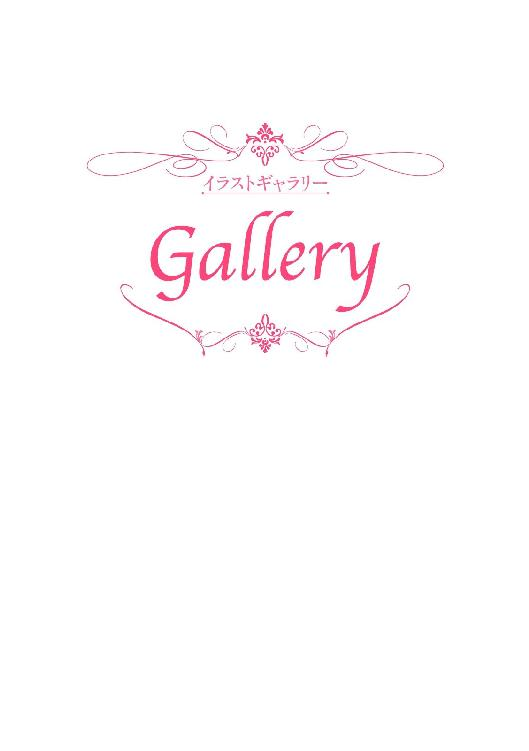
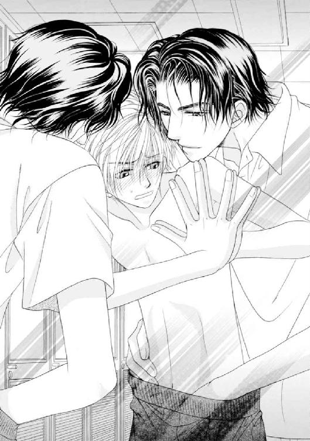
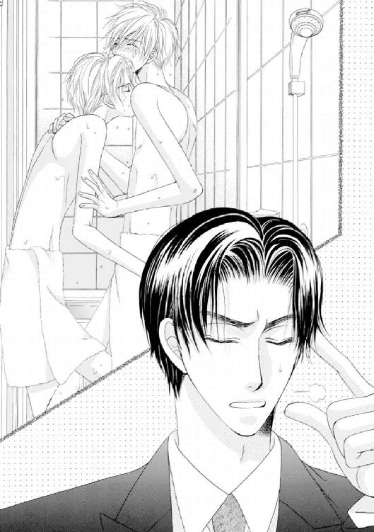
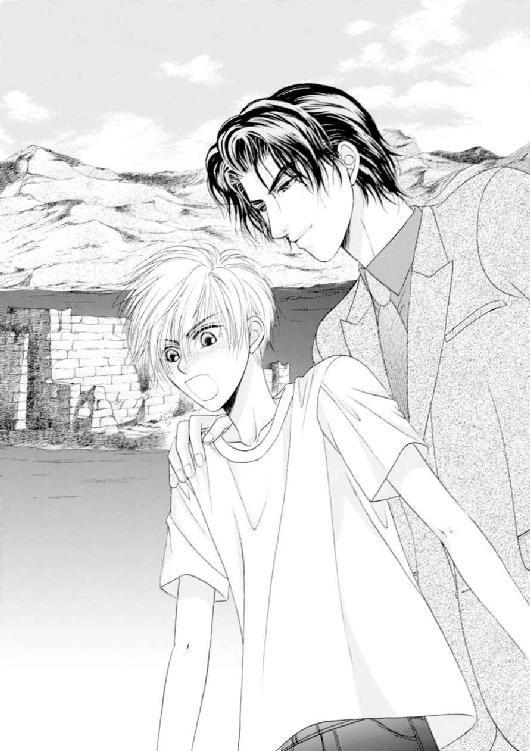
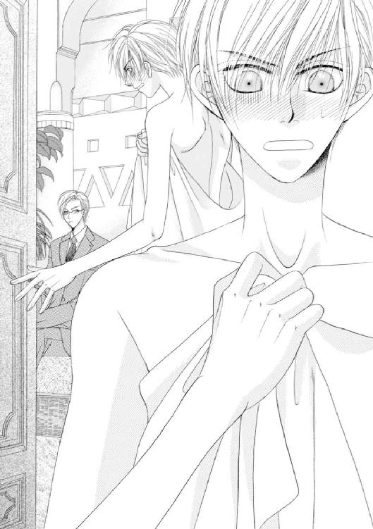
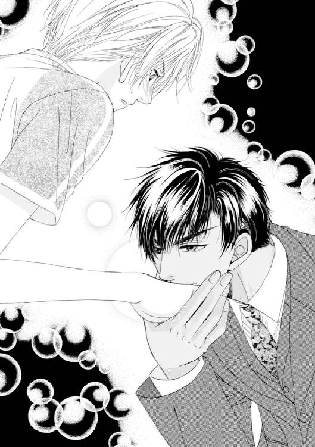
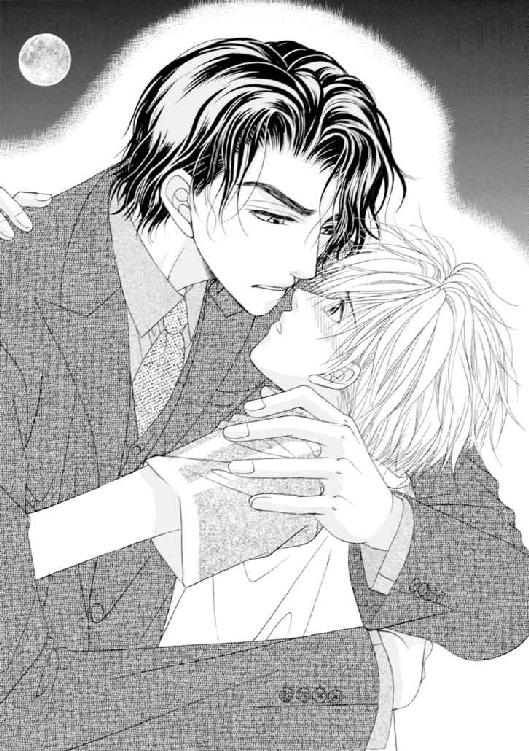
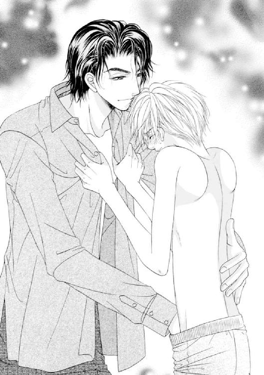
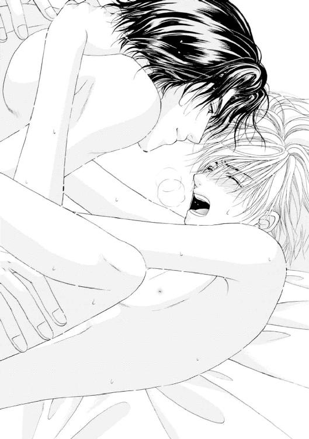
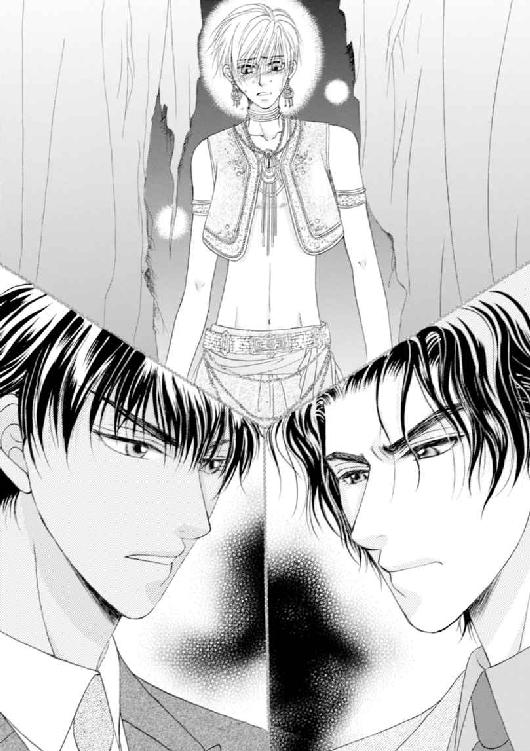
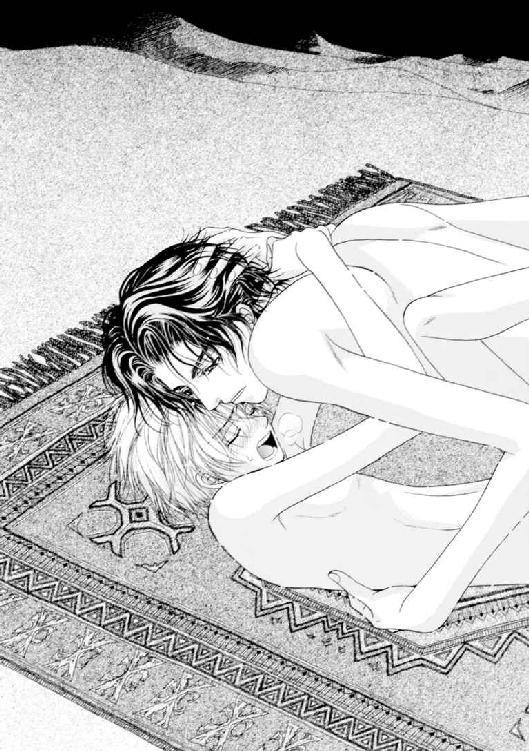
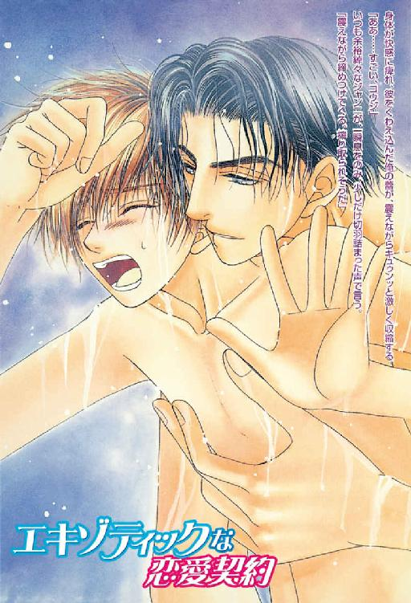
カバー・口絵・本文イラスト／こうじま奈月
デザイン／BELL'S
エキゾティックな恋愛契約
水上ルイ
平成21年10月1日 発行
(C) Rui MINAKAMI 2004
本電子書籍は下記にもとづいて制作しました
角川ルビー文庫『エキゾティックな恋愛契約』
平成16年4月1日初版発行
発行者 井上伸一郎
発 行 株式会社ＫＡＤＯＫＡＷＡ
〒102-8177 東京都千代田区富士見2-13-3
03-3238-8521（カスタマーサポート）
http://www.kadokawa.co.jp/